From Validator-Gated Machine Labor to Civilizational Value-to-Energy Compounding
April 26, 2026
Vincent Boucher
President of MONTREAL.AI and QUEBEC.AI
Written with AI
Technical descriptor: A far-from-equilibrium framework for α-AGI Ascension.
Executive Thesis. AGI ALPHA proposes a scalable substrate for intelligence organizations. The Transformer made intelligence scalable inside models; AGI ALPHA aims to make intelligence scalable across governed institutions of agents, jobs, validators, tools, memory, markets, settlement, governance, and reinvestment. Its purpose is to turn model capability into verified machine labor, verified labor into reusable invention, reusable invention into capital and infrastructure, and expanded infrastructure into stronger future work. The paper proposes architecture, mechanisms, metrics, and evidence standards; it does not claim achieved AGI, ASI, empirical SOTA, or civilization-scale capability.
Publication status. This is a theoretical systems and implementation-architecture paper. It is designed to be tested through Evidence Dockets containing real tasks, baselines, ProofBundles, replay logs, cost and safety ledgers, validator reports, delayed outcomes, and independent reproduction.
AGI ALPHA proposes a scalable substrate for intelligence organizations: a validator-gated system that converts model capability into verified machine labor, verified labor into reusable capability, and reusable capability into capital, infrastructure, compute, science, and useful energy capacity. The framework treats intelligence not merely as model performance, but as governed, evidence-producing, compounding institutional work.
The highest objective is civilizational but claim-bounded: to make machine intelligence economically legible, auditable, reinvestable, and governable as an owner-operator invention engine. AGI ALPHA is designed to compound model capability into work, work into invention, invention into reusable capabilities, capabilities into capital and infrastructure, and capital and infrastructure into compute, science, robotics, laboratories, markets, and useful-energy capacity.
As owned strategic namespace assets, AGI.Eth / ASI.Eth supply the institutional namespace layer for this substrate: a low-entropy, registry-governed identity system in which agents, nodes, validators, businesses, environments, proof bundles, α-Work Units, settlement receipts, and governance authority become machine-resolvable and audit-ready.
Building on open-ended environment generation, AI-generating algorithms, automated design of agentic systems, and zero-data verifier-grounded self-play, AGI ALPHA further defines a proof-gated AI-generating work engine: a commercially independent substrate that can generate tasks, environments, agentic systems, validators, and curricula, while admitting only those descendants that produce replayable proof bundles, validated α-Work Units, bounded risk, reusable capability, and measurable contribution to the value-to-energy flywheel.
The last-year MontrealAI GitHub corpus adds an implementation-evidence layer to the paper: the supplied activity figure is 30,627 contributions in the last year, and the public repositories expose a multi-surface stack spanning meta-agentic cognition, AGI Jobs work OS, escrowed job contracts, AGI Alpha Nodes, proof-first Nova-Seeds releases, open-ended RSI demos, documentation, CI, tests, runbooks, and local/devnet replay surfaces. This is treated as implementation, protocol, and replay-scaffold evidence, not as proof of empirical SOTA.
ALPHA-AGI Insight v02 adds the implementation spine for market-governed open-ended invention: AGIJobManager settles epoch-level work, Paymaster funds utility-denominated mandates, NettingHouse batches and challenges invention receipts, OpenClaw provides the sponsor/reviewer/operator shell, Alpha-Factory runs proposal, causalization, scoring, novelty, red-team, archive, and promotion loops, AGI Nodes execute and replay distributed work, and the value-to-energy flywheel reinvests accepted capabilities into stronger future work [87]. The remaining empirical burden is an externally reproducible Evidence Docket: real tasks, baselines, proof bundles, replay logs, validator reports, cost/risk ledgers, α-Work Unit estimates, and independent audit hooks.
AGI Alpha RSI supplies the deterministic sovereign governance control plane for this substrate: a schema-bound, replayable, baseline-comparative invention operating system in which OMNI-style interestingness guides exploration but never outcome authority, evidence confidence cannot inflate without execution, high-novelty breakthroughs require reproduction and stress testing, and recursive improvement is permitted only through append-only ledgers, proof bundles, dossiers, and validator-gated promotion [90-92].
The framework integrates far-from-equilibrium systems theory, Gibbs-like free-energy objectives, statistical physics, Hamiltonian and learned coordination, game-theoretic mechanism design, experience-grounded learning, value-relevant organizational planning, generalized validated search, task-defined curricula, lineage metaproductivity, permeability-gated sandbox markets, process-resolved evidence validation, subversion-resistant validation, capability package libraries, value-capture ledgers, reinvestment governance, and full-stack real-task evaluation.
The paper’s central claim is architectural. The Transformer revealed a scalable substrate for intelligence inside models. AGI ALPHA proposes the complementary substrate above models: an organization layer in which agents, jobs, validators, tools, memory, incentives, markets, settlement, governance, capital allocation, and reinvestment compound into verified work. The highest-value form of this substrate is not merely automation, but a sovereign owner-operator flywheel: verified machine labor produces reusable capabilities; reusable capabilities produce capital and infrastructure; capital and infrastructure expand compute, science, and useful energy capacity; expanded capacity feeds back into stronger, safer, more general machine labor.
The civilizational objective is a strategic horizon, not a present achievement claim. AGI ALPHA becomes empirical only through benchmarked tasks, reproducible traces, external validators, evidence bundles, delayed-outcome checks, safety ledgers, cost/risk accounting, baseline comparisons, process-integrity audits, subversion tests, and independent review. The paper therefore proposes the architecture, mechanisms, metrics, and experiments required to test the flywheel, not a claim that superintelligence, autonomous sovereignty, energy abundance, or Kardashev-scale capability has already been achieved.
This paper is intentionally comprehensive. The following map is provided so that executive, technical, safety, institutional, and empirical readers can navigate without losing the architecture’s full scope.
| Section | Reader question | Primary answer |
|---|---|---|
| 1. Substrate thesis and value-to-energy flywheel | What is AGI ALPHA? | A scalable substrate for intelligence organizations above model substrates. |
| 2. AGI.Eth / ASI.Eth naming and proof-settlement layer | How are actors, authority, and proof made legible? | Low-entropy namespace, ProofBundles, alpha-Work Units, AGI Jobs, Chronicle, and settlement. |
| 3. Implementation evidence corpus and evidence ladder | What exists beyond theory? | MontrealAI repositories, demos, contracts, CI, local/devnet proof surfaces, and a claim-bounded evidence ladder. |
| 4. Market-governed invention stack | How does invention become labor? | MandateEpochs, NettingHouse, Paymaster, OpenClaw, Alpha-Factory, causal substrate, QD archives, and nodes. |
| 5. QD archive, causal substrate, MandateEpochs, and AGI Nodes | How does the system scale search? | Distributed, replayable microjobs and archive-preserving open-ended search. |
| 6. RSI governance | How is recursive invention governed? | Deterministic runner, drift sentinel, ECI, baseline discipline, Move-37 dossiers, and mechanical gates. |
| 7. Safety, validation, and claim boundaries | What prevents overreach? | Risk gates, process evidence, subversion resistance, legal boundaries, and claim-boundary boxes. |
| 8. Evidence Docket and benchmark program | What would prove it? | Real tasks, baselines, proof bundles, replay, cost/risk ledgers, and independent audit. |
| 9. Related work and positioning | What prior art is mechanism-relevant? | Each citation is tied to a mechanism, metric, gate, or evaluation requirement. |
| 10. Conclusion and publication-safe horizon | What is the long-run ambition? | Governed compounding from verified work to capability, infrastructure, compute, science, and useful energy. |
| Layer | Problem solved | AGI ALPHA mechanism | Evidence status | Main risk / gate |
|---|---|---|---|---|
| Model substrate | Scaling representation and reasoning inside models | Transformer-like model substrate | External prior art | Model capability is not institutional capability |
| Organization substrate | Coordinating agents into work | agents, jobs, routers, tools, memory, validators | formal architecture + implementation scaffold | coordination overhead and false acceptance |
| Proof-settlement substrate | Making machine work auditable and payable | ProofBundles, alpha-WU, AGI Jobs, AGIJobManager, Chronicle | protocol evidence in bounded form | no replay, no settlement |
| Namespace substrate | Making authority legible at machine speed | AGI.Eth / ASI.Eth, registry-governed names | institutional design source | registry drift, spoofing, scope confusion |
| Market-governed invention substrate | Making invention operate as validated labor | MandateEpoch, NettingHouse, Paymaster, OpenClaw, Alpha-Factory | implementation-grounded architecture | unreplayable microjobs and unsafe promotion |
| Global QD archive | Preserving stepping stones | MAP-Elites / QD archive, descriptor cells, lineages | planned benchmark + implementation spine | novelty without value or safety |
| AGI Nodes compute fabric | Scaling parallel search and replay | verifiable node work units, replay, audit sampling, challenges | implementation scaffold | unverifiable compute or bad incentives |
| RSI governance | Governing recursive improvement | deterministic runner, ECI, drift sentinel, baseline gates, dossiers | internal architecture source | novelty mill and confidence inflation |
| Evidence Docket | Making empirical claims testable | claims matrix, baselines, proof bundles, logs, ledgers, replay | defined standard | no docket, no empirical SOTA claim |
| Value-to-energy flywheel | Converting intelligence into compounding capacity | work -> capability -> capital -> capacity -> stronger work | strategic horizon + proxies | overclaim without measured links |
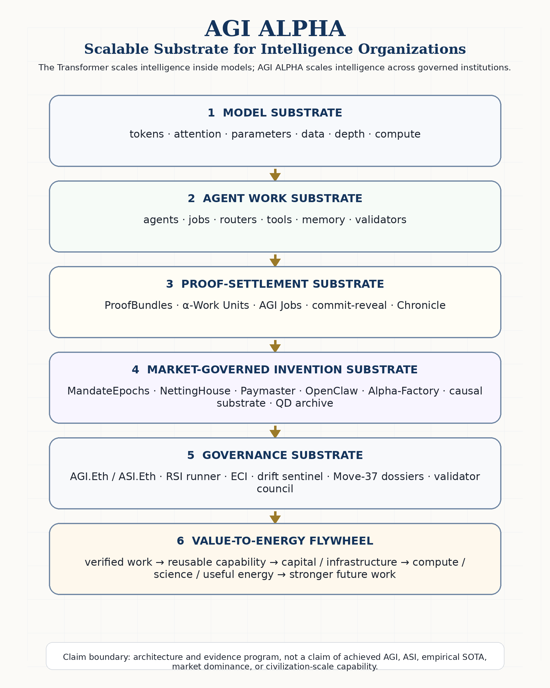
Claim boundary. This paper does not claim that AGI ALPHA has achieved AGI, ASI, autonomous sovereignty, empirical SOTA, market dominance, guaranteed economic return, energy abundance, or civilization-scale capability. It claims that AGI ALPHA is a testable architecture for scalable intelligence organizations: a validator-gated, proof-bearing, RSI-governed substrate for converting model capability into verified machine labor and reinvestable capability. The claim becomes empirical only through Evidence Dockets containing real tasks, baselines, ProofBundles, replay logs, safety/cost ledgers, validator reports, delayed outcomes, and independent reproduction.
The most rigorous compressed claim is:
\[ \boxed{ \alpha\text{-AGI Ascension} = \text{bounded, far-from-equilibrium, multi-agent work production} } \]
or, in operational form:
\[ \boxed{ \dot{E}_{\text{compute,data,capital,tasks}} \rightarrow \dot{W}_{\text{verified impact}} + \dot{Q}_{\text{dissipated search}} + \dot{I}_{\text{memory}} } \]
AGI ALPHA brings α-AGI Ascension to life when energy-mediated computation becomes a continuously replenished, statistically mapped, learned-and-Hamiltonian-routed, experience-grounded, game-theoretically aligned, validator-gated swarm that converts open-system inflows into verified, risk-bounded work. The router is not a single hand-coded scorer; it is a family of commercially independent coordination substrates that learn when to decompose, delegate, verify, stop, escalate, remember, replay, and improve from grounded experience. In its planning form, the router learns abstract organizational models that are value-relevant rather than reconstructive: it need not simulate the full world, only those future quantities needed to select safer and higher-value work actions. In its economic form, AGI ALPHA is a sovereign evolutionary agent economy: task definitions create curricula, markets allocate bounded resources, artifacts and workflows form lineages, and settlement rewards long-run safe metaproductivity rather than immediate benchmark score alone.
The central objective of AGI ALPHA is to transform intelligence from a model capability into an institutional compounding engine: verified machine labor produces reusable capabilities; reusable capabilities produce capital and infrastructure; capital and infrastructure expand compute, science, and useful energy capacity; expanded capacity feeds back into stronger, safer, more general machine labor.
Kardashev-II-scale coordination also requires low-entropy naming and incentive-compatible proofs. AGI.Eth provides the canonical identity and namespace layer; AGI Jobs provides the proof-settlement work OS; AGI Alpha Nodes provide the deterministic runtime. Together, they turn machine intelligence into replayable, auditable, settleable, and governable work. The invariant is: Autonomy measured · work proven · value settled.
AGI ALPHA is not merely a multi-agent coordinator. It is an AI-generating algorithm for intelligence organizations. Its native search space is not only neural architectures or prompts, but the institutional space of agents, jobs, tools, validators, proof bundles, environments, curricula, markets, settlement mechanisms, namespaces, and governance policies. The system improves by generating new work environments, new agentic systems, and new verifiable tasks, then accepting only those descendants that produce reusable, externally validated, risk-bounded capability.
The MontrealAI GitHub corpus supplies the current implementation substrate for this claim: public code, demos, CI, contracts, nodes, release posture, proof ladders, and documentation convert the doctrine from a paper-only thesis into a proof-producing stack. This does not close the empirical question; it narrows it. The decisive next test is whether the stack can produce independently replayable, equal-budget benchmark wins on real tasks.
The Transformer revealed a scalable substrate for intelligence inside models: a general architecture in which tokens, attention, depth, parameters, data, and compute could compound into increasingly capable representation, prediction, and reasoning systems [56]. AGI ALPHA proposes the analogous substrate above models: a scalable architecture for intelligence organizations, where agents, jobs, validators, memory, incentives, markets, governance, and settlement compound into increasingly capable systems of verified work.
The distinction is structural. The Transformer made intelligence scalable as computation; AGI ALPHA aims to make intelligence scalable as institution. In this framing, α-AGI Ascension is not merely many agents communicating. It is the emergence of an organizational substrate in which intelligence can be routed, validated, priced, remembered, governed, and recursively improved.
\[ \text{Transformer}=\mathcal{S}_{\text{model}}(\text{tokens},\text{attention},\text{parameters},\text{data},\text{compute}) \]
\[ \text{AGI ALPHA}=\mathcal{S}_{\text{organization}}(\text{agents},\text{jobs},\text{validators},\text{memory},\text{incentives},\text{governance}) \]
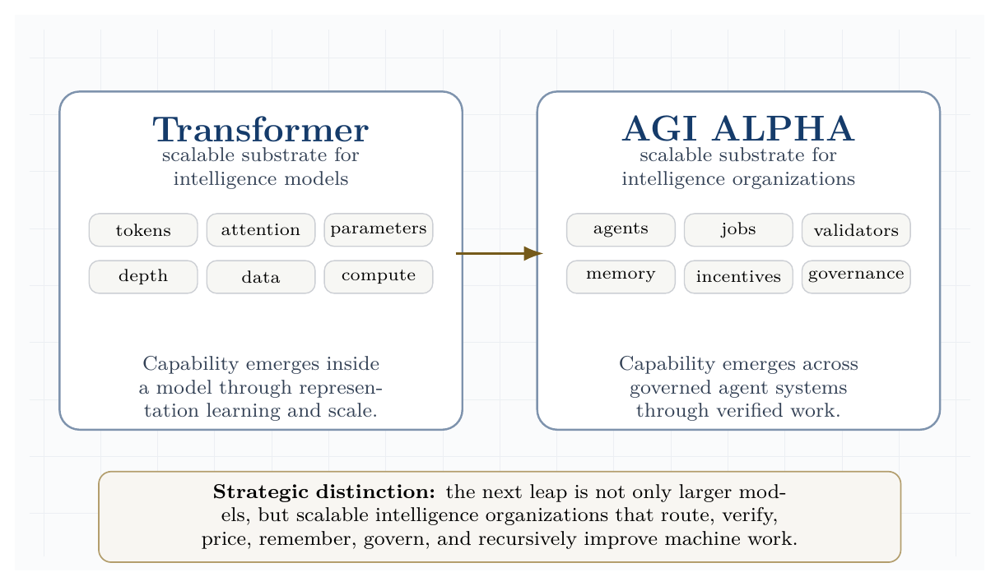
Transformer scaled intelligence in models; AGI ALPHA scales intelligence in organizations.
This substrate framing clarifies the paper’s strategic thesis. The next frontier is not only larger models, but governed intelligence organizations that convert model capability into proof-bearing labor, market activity, scientific discovery, capital formation, and energy-scale infrastructure under auditable constraints.
AGI ALPHA’s strategic objective is to convert model intelligence into governed machine labor, governed machine labor into verified invention, verified invention into reusable capability, and reusable capability into capital formation, infrastructure, compute, science, and useful energy capacity. This is the paper’s North Star. It is not a claim of present-day superintelligence; it is the architecture that would make such capability economically legible, auditable, reinvestable, and governable.
The paper’s spine is a compounding chain:
Formally:
\[ \dot W_{\mathrm{verified}} \rightarrow \dot K_{\mathrm{capital}} \rightarrow \dot I_{\mathrm{infrastructure}} \rightarrow \dot E_{\mathrm{useful}} \rightarrow \dot C_{\mathrm{compute}} \rightarrow \dot W_{\mathrm{verified}}^{+}. \]
Here, \(\dot W_{\mathrm{verified}}\) is externally accepted work; \(\dot K_{\mathrm{capital}}\) is reinvestable value; \(\dot I_{\mathrm{infrastructure}}\) includes software, laboratories, robotics, manufacturing, markets, security, and institutions; \(\dot E_{\mathrm{useful}}\) is governed energy and industrial capacity; and \(\dot C_{\mathrm{compute}}\) is the expanded computational substrate that enables stronger future work.
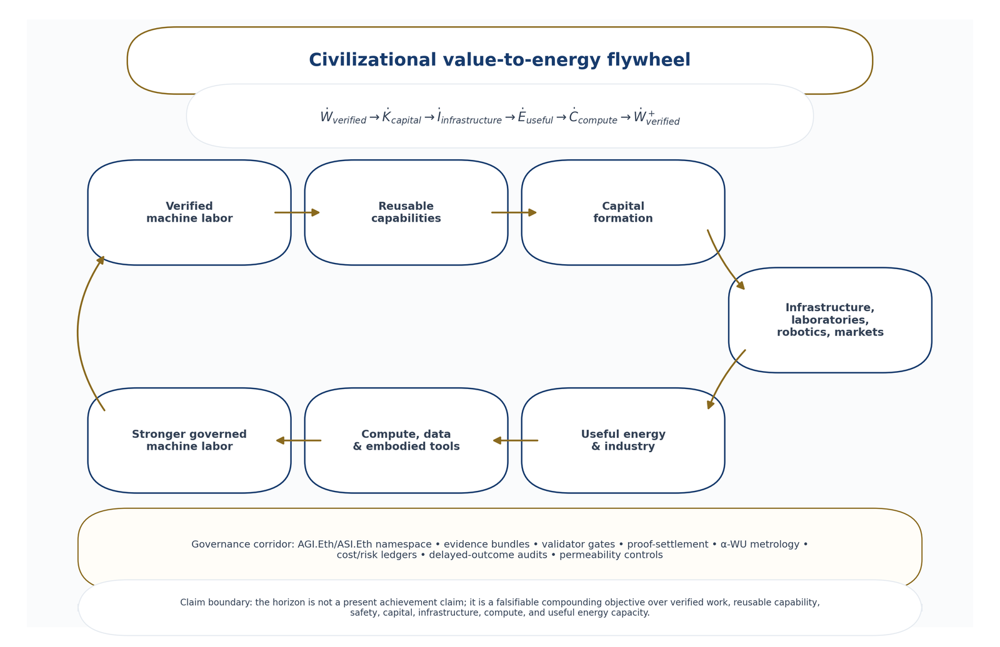
The objective is therefore not:
\[ \max\;\text{automation} \]
but:
\[ \begin{aligned} \max_{\pi}\quad & \mathbb{E}[V_{\mathrm{civilizational}}] \\ = \quad& \mathbb{E}\!\left[ W_{\mathrm{verified}}+K_{\mathrm{capital}}+I_{\mathrm{infrastructure}} +S_{\mathrm{science}}+E_{\mathrm{useful}} \right] \\ &-\lambda C-\rho R-\mu U-\nu X . \end{aligned} \]
\(C\) is cost, \(R\) is safety/legal/security risk, \(U\) is uncertainty or unmeasured externality, and \(X\) is harmful concentration, market instability, monopoly abuse, or social externality.
The Kardashev Type II vision is used here as a civilizational horizon for productive capacity, not as a near-term empirical claim. Near-term progress is measured by controlled, governed proxies: verified work, reusable capability creation, capital formation, compute expansion, useful-energy and infrastructure contributions, scientific throughput, and reduction of cost/risk per verified output. Star-scale energy capture is an asymptotic reference point; the paper’s operational concern is the safe compounding path toward larger governed productive capacity.
The civilizational value-to-energy objective is accepted only as a benchmarkable direction of travel. AGI ALPHA does not claim present-day superintelligence, energy abundance, autonomous sovereignty, or achieved Type-II capability. It proposes a commercially independent, validator-gated, experience-grounded, planning-capable intelligence-organization substrate whose purpose is to test whether verified machine labor can compound into larger useful capacity under evidence, safety, governance, and audit constraints.
The paper distinguishes two deployment modes:
| System type | Best monetization model | AGI ALPHA implication |
|---|---|---|
| Automation machine | Sell task completion broadly to users with tasks. | Job marketplace, workflow execution, agents-as-service, proof-gated delivery. |
| Invention machine | Use internally to discover, build, own, and compound high-value assets. | Owner-operator flywheel, invention reserve, strategic capability portfolio, reinvestment into compute, science, energy, and infrastructure. |
AGI ALPHA’s highest-value deployment is not merely agents-as-a-service. It is owner-operator compounding: using the system to discover opportunities, produce validated artifacts, improve its own work substrate, acquire strategic knowledge, create software/lab/robotics/energy infrastructure, and reinvest gains into compute, science, energy, security, validators, and further machine-labor capacity.
AGI ALPHA-native methods:
| Method | Definition |
|---|---|
| Sovereign Invention Reserve | A protected portfolio of validated artifacts, workflows, tools, hypotheses, software systems, market mechanisms, infrastructure designs, and scientific results retained for internal compounding rather than immediately commoditized. |
| Reinvestment Control Plane | A governance layer that allocates verified gains into compute, data, tools, laboratories, robotics, energy systems, security, and validator capacity. |
| Capital-to-Compute-to-Energy Ledger | A ledger that tracks how verified work becomes revenue/capital, how capital becomes infrastructure/compute/energy capacity, and how expanded capacity improves future verified work. |
| Strategic Capability Asset Map | A map of which capabilities are best sold externally, retained internally, licensed selectively, open-sourced, sandboxed, or reinvested into the owner-operator flywheel. |
Design invariant. No value without evidence. No autonomy without authority. No settlement without validation. If it cannot be replayed, it does not settle.
The AGI ALPHA paper defines the organizational substrate: agents, jobs, validators, memory, incentives, markets, settlement, and governance. AGI.Eth / ASI.Eth define the institutional name layer: canonical identities, scoped environments, roles, proof roots, settlement surfaces, and governance authority. AGI Jobs defines the work OS: request -> escrow -> execute -> proof -> validate -> settle -> chronicle. AGI Alpha Nodes define the runtime: containerized, ENS-identified, staked, authorized nodes that execute, validate, monitor, meter, package artifacts, and emit signed telemetry. AGI_Eth_Institutional_v0 is treated here as a primary-source institutional design document and strategic architecture layer, not as empirical proof of achieved AGI, ASI, safety, or market dominance [73].
The strategic claim is precise: AGI.Eth and ASI.Eth are owned strategic namespace assets, but they are not merely names. Their advantage is architectural only if the owner-operator uses them to become low-entropy institutional roots for verified AGI labor paired with secure deployment, replayable proof, validator quality, useful work, adoption, settlement-grade evidence, and governance. The design invariant is:
Autonomy measured · work proven · value settled.
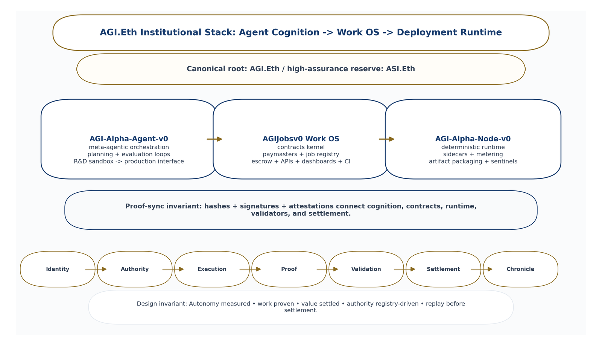
This institutional layer is the missing bridge between capable models and civilization-scale machine labor: it makes actors, roles, authority, proof, settlement, and governance legible at machine speed.
The AGI.Eth namespace grammar is:
<entity>.(<env>.)<role>.agi.ethwhere:
role ∈ {agent, node, club}
env ∈ ENV_SETExamples:
helper.agent.agi.eth
helper.alpha.agent.agi.eth
gpu01.alpha.node.agi.eth
alice.alpha.club.agi.ethDefinitions:
| Term | Meaning |
|---|---|
agent |
Cognitive or execution identity. |
node |
Deterministic runtime / infrastructure identity. |
club |
Validator, governance, or institutional membership identity. |
env.agi.eth |
Ecosystem root. |
<business>.env.agi.eth |
AGI Business under a named environment. |
<sovereign>.agi.eth |
Sovereign institutional root. |
ASI.Eth is the high-assurance / future-superintelligence namespace reserve. It does not imply that ASI has been achieved. It defines a reserved namespace for stricter authority, stronger proof bundles, higher validator quorums, high-risk governance, and future ASI-grade institutional coordination.
| Pattern | Meaning | Recognition rule |
|---|---|---|
entity.role.agi.eth |
Global role identity. | Recognized across environments; governed by global role namespace plus environment policy. |
entity.env.role.agi.eth |
Environment-scoped identity. | Recognized only inside env.agi.eth. |
env.role.agi.eth |
Environment role mountpoint. | Recognized only inside env.agi.eth. |
role.env.agi.eth |
Optional local alias. | Not official unless registry-whitelisted. |
Guardrails:
{agent, node, club} under every
env.agi.eth;A Kardashev-aligned machine-labor economy cannot tolerate ambiguous actor identities, unstable role names, spoofed namespaces, self-asserted authority, or high-churn records at the semantic layer. Ambiguous naming increases coordination overhead, fraud, settlement disputes, validator confusion, and governance risk. Low-entropy naming is not branding; it is coordination infrastructure.
Define the namespace-risk functional:
\[ \begin{aligned} R_{\mathrm{namespace}}={}& w_1A_{\mathrm{ambiguity}} +w_2C_{\mathrm{collision}} +w_3S_{\mathrm{spoof}} +w_4U_{\mathrm{alias}} \\ &+w_5I_{\mathrm{resolver}} +w_6D_{\mathrm{registry}} +w_7C_{\mathrm{scope}}. \end{aligned} \]
Low-entropy naming quality is:
\[ N_{\mathrm{low\_entropy}}=\frac{1}{1+R_{\mathrm{namespace}}}. \]
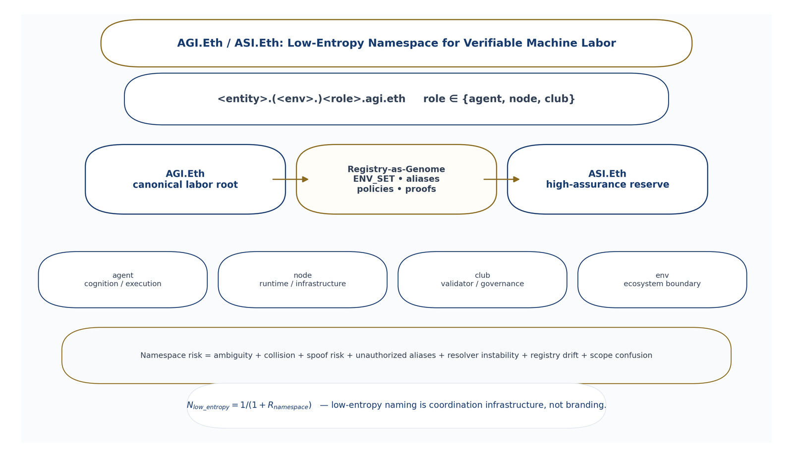
AGI_Eth_Institutional_v0 can be read as an autopoietic control design. The environment root is the membrane; role roots are organs; the registry is the genome; resolvers and gateways are metabolism; status, proofs, slashing, replay, quarantine, and emergency brakes are the immune system.
| Biological control metaphor | AGI.Eth institutional analogue |
|---|---|
| Membrane | env.agi.eth defines the ecosystem boundary. |
| Organs | Role roots agent, node, and
club separate duties. |
| Genome | registry.agi.eth publishes ENV_SET,
canonical packages, recognized aliases, and status. |
| Metabolism | Resolvers and gateways turn names into live endpoints. |
| Immune system | Status, proofs, slashing, replay, quarantine, and emergency brakes detect and correct drift. |
Machine-checkable registry schema:
{
"EnvironmentRegistry": {
"env": "alpha",
"state": "pre_alpha|active|paused|deprecated",
"canonicalPackage": {
"root": "alpha.agi.eth",
"agentMount": "alpha.agent.agi.eth",
"nodeMount": "alpha.node.agi.eth",
"clubMount": "alpha.club.agi.eth"
},
"recognizedAliases": [],
"policyVersion": "",
"resolverPolicy": "",
"proofRequirements": {},
"emergencyBrakeState": "normal|paused|quarantined"
}
}Invariants:
AGI.Eth serves as the canonical L1 institutional root while L2, cross-chain, runtime, endpoint, capability, metadata, and provenance pointers live behind ENS records, wildcard resolvers, and CCIP-Read-style retrieval. Multi-chain complexity should be hidden behind one human-readable and machine-resolvable institutional identity.
Best-practice rules:
The canonical AGI.Eth settlement chain is:
Request -> Escrow -> Execute -> Proof -> Validate -> Settle -> Chronicle| Step | Definition |
|---|---|
| Request | Job spec, acceptance tests, risk class, and policy context. |
| Escrow | Funds, stake, compute credits, or mission currency locked before execution. |
| Execute | Agent/node runs bounded tool workflow. |
| Proof | Artifact, logs, traces, metering, signatures, and environment pins. |
| Validate | Deterministic tests, validator quorum, commit-reveal attestations, and dispute window. |
| Settle | Escrow release only after validation. |
| Chronicle | Durable record of job, proof, receipt, α-WU, validator decisions, and reputation update. |
Invariant: If it cannot be replayed, it does not settle.
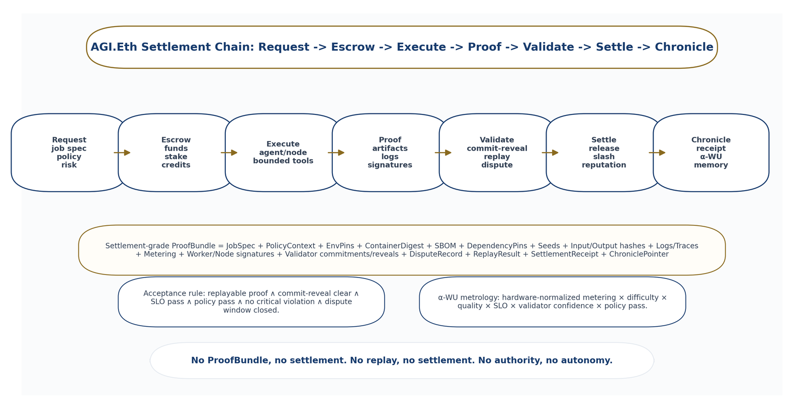
The evidence-bundle schema is upgraded into a settlement-grade AGI.Eth ProofBundle:
\[ \begin{aligned} \mathrm{ProofBundle}=(&\mathrm{JobSpec},\mathrm{PolicyContext},\mathrm{EnvPins},\mathrm{ContainerDigest}),\\ & (\mathrm{SBOM},\mathrm{DependencyPins},\mathrm{Seeds},\mathrm{InputHashes}),\\ & (\mathrm{OutputHashes},\mathrm{Logs},\mathrm{Traces},\mathrm{MeteringTelemetry}),\\ & (\mathrm{WorkerSignature},\mathrm{NodeSignature},\mathrm{ValidatorCommitments}),\\ & (\mathrm{ValidatorReveals},\mathrm{DisputeRecord},\mathrm{ReplayResult}),\\ & (\mathrm{SettlementReceipt},\mathrm{ChroniclePointer}). \end{aligned} \]
Minimum contents: JobSpec, acceptance tests, policy
context, container digest, SBOM, pinned dependencies, deterministic
seeds, inputs and outputs as hashes or immutable pointers, logs, traces,
metering telemetry, α-WU inputs, worker/node signatures, validator
attestations, commit-reveal validation records, dispute-window status,
replay result, settlement receipt, and Chronicle entry.
Rules:
Commit-reveal validation is an AGI ALPHA-native validator protocol:
The purpose is to reduce herding, reduce bribery leverage, reduce validator collusion, make dishonesty negative-sum, and preserve auditability.
\[ \begin{aligned} \mathrm{Accept}(job)=1 \iff {}& \mathrm{Replayable}(\mathrm{ProofBundle}) \land \mathrm{CommitRevealClear} \\ &\land\ \mathrm{SLOPass} \land \mathrm{PolicyPass} \land \neg\mathrm{CriticalViolation} \\ &\land\ \mathrm{DisputeWindowClosed}. \end{aligned} \]
α-Work Units are the canonical measure of verified machine labor:
\[ \alpha\mathrm{-WU} = M_{\mathrm{hardware}} \times D_{\mathrm{difficulty}} \times Q_{\mathrm{quality}} \times S_{\mathrm{SLO}} \times V_{\mathrm{confidence}} \times P_{\mathrm{policy}}. \]
If acceptance fails or SLO fails, then:
\[ \alpha\mathrm{-WU}=0. \]
α-WU is not raw token count, GPU time, or benchmark score. It is a policy-parameterized, settlement-grade unit of verified work. Operational indices include α-WU per epoch, α-WU per node, α-WU per environment, α-WU per mission, α-WU per dollar, α-WU per watt, and α-WU per unit of safety risk.
Integrating α-WU into real-task and civilizational metrics:
\[ D_{\mathrm{real}}^{\mathrm{AGI.Eth}} = \mathrm{success\_rate} \times \frac{\mathrm{validated\_}\alpha\mathrm{WU}}{\mathrm{total\_cost}} \times (1-R_{\mathrm{critical}}) \times (1-O_{\mathrm{coordination}}). \]
$AGIALPHA is described only as a utility token required for protocol operation, not as equity, profit rights, dividends, ownership in any entity, or an investment claim. Its operational roles are:
| Use | Function |
|---|---|
| Stake | Bond participation, Sybil resistance, and slashable accountability. |
| Settle | Escrowed jobs release after validation. |
| Coordinate | Epoch accounting, α-WU indices, fee routing, burn/emission parameters, validator quorum, and slashing parameters. |
Thermostat model:
| Signals | Actuators |
|---|---|
| validated α-WU per epoch | fee splits |
| dispute rate | burn fraction |
| SLO drift | tier multipliers |
| burn/emission ratio | validator quorum |
| false acceptance rate | slashing parameters |
| validator latency | dispute windows |
| Sybil/collusion attempts | market permeability |
The AGI.Eth institutional stack has three system surfaces.
| Surface | Role |
|---|---|
| AGI-Alpha-Agent-v0 | Meta-agentic orchestration, planning and evaluation loops, and R&D sandbox-to-production interface. |
| AGIJobsv0 Work OS | Contracts kernel, paymasters, job registry, escrow, settlement, APIs, dashboards, and CI. |
| AGI-Alpha-Node-v0 | Deterministic runtime, sidecars, metering, artifact packaging, validator/sentinel services, and observability. |
The proof-sync invariant is that hashes, signatures, and attestations connect all three surfaces.
An AGI Alpha Node is a containerized runtime that is ENS-identified, staked, and authorized to execute, validate, or monitor AGI Jobs.
Identity:
<name>.alpha.node.agi.ethRoles:
| Role | Function |
|---|---|
| Worker | Executes deterministically, publishes artifacts, and claims settlement after validation. |
| Validator | Performs commit-reveal attestations, scores SLO and output quality, and is slashable for dishonesty. |
| Sentinel | Monitors health, drift, validator latency, abnormal outputs, and security signals; triggers local pause and escalation. |
Operator posture: one-click/container-first deployment, boot-time safety checks, signed telemetry, tamper-evident audit trails, dashboards, fail-closed controls, circuit breakers, local pause, key custody and rotation, and incident playbooks.
AGI.Eth and ASI.Eth are not decorative names. They are candidate institutional roots for AGI coordination. If AGI.Eth becomes associated with verifiable machine labor, proof-bearing settlement, α-WU metrology, and registry-governed role identities, then competitors face a coordination disadvantage: they must either adopt the AGI.Eth standard, interoperate with it, or persuade institutions to trust a higher-entropy alternative.
Moat components:
| Component | Meaning |
|---|---|
| Semantic scarcity | AGI.Eth and ASI.Eth are uniquely legible roots. |
| Low-entropy role grammar | agent/node/club roles reduce ambiguity. |
| Trust anchor | Recognition is registry-driven. |
| Proof standard | Replayable settlement-grade evidence bundles. |
| Metrology | α-WU indexes verified work. |
| Runtime integration | Nodes produce signed telemetry and artifacts. |
| Settlement network effects | Validators, jobs, agents, and businesses converge on the same namespace. |
| Governance memory | Chronicle entries become durable institutional history. |
Caution: the moat becomes real only with adoption, security, proof quality, validator trust, and useful work. Namespace ownership alone does not prove dominance.
| Root | Strategic function |
|---|---|
| AGI.Eth | Canonical namespace for verified AGI labor, agents, nodes, validators, jobs, businesses, and environments. |
| ASI.Eth | Reserved high-assurance namespace for future ASI-grade coordination, stricter governance, higher-risk authority, and frontier-capability environments. |
Rules:
AGI.Eth / ASI.Eth are framed as institutional namespace infrastructure and strategic positioning. This paper does not represent $AGIALPHA as equity, profit share, dividend, security, or a claim on any entity. It does not imply achieved AGI or ASI. It does not imply that AGI.Eth / ASI.Eth ownership alone guarantees market dominance. It does not disclose private keys, private endpoints, sensitive deployment details, or internal security posture.
AGI_Eth_Institutional_v0 is used as a primary-source institutional design layer, not as empirical proof. Each element below is admitted only because it strengthens the value-to-energy flywheel by making machine labor named, authorized, replayable, settleable, and governable.
| Institutional source element | Use in this paper | AGI ALPHA mechanism created |
|---|---|---|
| Executive charter: identity -> evidence -> settlement -> governance | Establishes the minimum institutional sequence for machine labor. | No value without evidence; no autonomy without authority; no settlement without validation. |
| Namespace grammar | Makes agents, nodes, clubs, environments, businesses, and sovereign roots machine-resolvable. | <entity>.(<env>.)<role>.agi.eth
grammar and scope rules. |
| Recognition and scope table | Separates global identities from environment-scoped identities and unofficial aliases. | Registry-driven authority and alias guardrails. |
| Registry-as-genome | Makes environment recognition machine-checkable while high-churn metadata remains behind resolvers. | EnvironmentRegistry object and trust-anchor invariants. |
| Physics and game-theory framing | Treats namespace entropy and coordination energy as operating risks. | R_namespace, N_low_entropy,
dominant-strategy proof-settlement design. |
| Three surfaces: Agent-v0, AGIJobsv0, Node-v0 | Separates cognition, work OS, and runtime. | Proof-sync invariant across agent cognition, contract settlement, and signed node telemetry. |
| Job lifecycle | Defines the canonical work chain from request to chronicle. | Request -> Escrow -> Execute -> Proof -> Validate -> Settle -> Chronicle. |
| Proof bundle | Defines audit/replay requirements for settlement. | Settlement-grade ProofBundle formalism and evidence template. |
| Metrology and settlement | Makes verified work measurable and settleable. | α-WU metrology, D_real^{AGI.Eth},
D_proof_settlement. |
| Node slide | Defines worker, validator, and sentinel runtime roles. | AGI Alpha Node runtime and fail-closed operator posture. |
| Universal deployability | Keeps one canonical institutional name while endpoints and metadata evolve. | ENS text records, wildcard resolution, CCIP-Read-style retrieval, normalization, reproducible audit packs. |
| Adoption playbook | Prevents premature permeability and ungoverned scale. | Pilot -> harden -> scale progression with pause controls, allowlists, rate limits, audits, and interoperability tests. |
This mapping is deliberately mechanism-bound. If an AGI.Eth construct does not reduce namespace entropy, improve proof quality, reduce settlement risk, improve governance, or increase safe adoption of verified work, it does not belong in the scientific core of the paper.
AGI.Eth and ASI.Eth create prime strategic optionality because they are unusually low-entropy roots in a domain where institutional legibility matters. The advantage is not ownership alone. The advantage becomes real only if the namespace is paired with secure deployments, authoritative registries, reliable resolvers, validator trust, replayable proof bundles, calibrated α-WU metrology, settlement reliability, adoption, and useful work. In this framing, competitors are not blocked by a name; they are challenged by a proof-settlement standard that could become the natural coordination focal point for verifiable machine labor.
The paper is no longer supported only by doctrine and formalism. The public MontrealAI GitHub corpus provides an implementation-evidence layer for the intelligence-organization substrate. The MontrealAI profile publicly lists 31 repositories, 225 followers, six starred repositories, and pinned strategic repositories including AGI-Agent-v0, AGI-Alpha-Agent-v0, AGIJobsv0, AGI-Alpha-Node-v0, AGIJobManager, and AGIJobManagerPrime [20]. The supplied activity figure for this revision is 30,627 GitHub contributions in the last year. Because GitHub contribution graphs follow specific counting rules and may include public/private contribution settings, the paper treats this figure as a high-intensity activity signal rather than a quality metric or proof of external impact [85,86].
The important scientific point is not the contribution count alone. The important point is that the repositories instantiate the paper’s stack: cognition, work OS, escrow/settlement, deterministic runtime, proof-first release posture, local/devnet demos, CI gates, runbooks, and evidence-docket scaffolds. That moves AGI ALPHA from a purely theoretical architecture into an implementation corpus that can be evaluated.
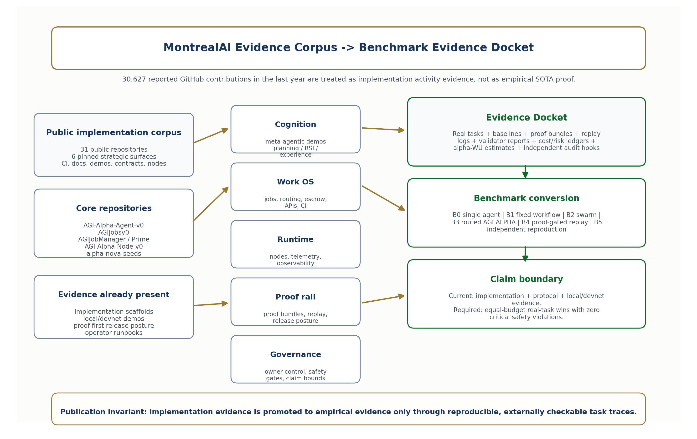
| Layer | Repository surface | Public implementation evidence | Claim boundary |
|---|---|---|---|
| Meta-agentic cognition | AGI-Alpha-Agent-v0 | 9,768 commits; alpha_factory_v1, benchmarks,
contracts/v2, Docker quickstart, docs, experiments, infrastructure,
policies, tests, and demos. The demo catalog includes AIGA
meta-evolution, AGI business workflows, marketplace simulation,
world-model planning, Era-of-Experience stack, finance/macro agents, and
MuZero planning surfaces [78]. |
Supports implementation depth and demo breadth; does not by itself prove external benchmark superiority. |
| Work operating system | AGIJobsv0 | 7,059 commits; agent gateway, apps, attestation, backend, contracts, demos, deployment, docs, Echidna, services, simulation, storage, subgraph, tests, and CI. The repository describes itself as the Operating System for AGI Work [79]. | Supports work-OS scaffold and CI discipline; still needs equal-budget benchmark dockets. |
| Escrowed work agreements | AGIJobManager | 1,082 commits; Ethereum smart-contract system for escrowed AGI work agreements with optional ENS-backed job pages, Genesis Console, deployment/operator guides, security artifacts, and explicit human owner/operator oversight boundaries [81]. | Supports proof-settlement contract surface; the repository itself states some autonomous policy intent is not fully enforced on-chain. |
| Prime settlement protocol | AGIJob Manager Prime | 408 commits; next-generation sovereign AI labor protocol with autonomous agent discovery, game-theoretic job markets, and institutional-grade on-chain settlement [82]. | Supports protocol iteration; empirical adoption, settlement quality, and validator integrity remain test targets. |
| Runtime infrastructure | AGI-Alpha-Node-v0 | 1,121 commits; contracts, dashboard, deploy, docs, Grafana provisioning, observability, source, subgraph, tests, Docker and CI. The repository frames the node as a containerized, owner-controlled runtime with telemetry, validator gates, pause controls, and CI guardrails [80]. | Supports node/runtime infrastructure; production reliability requires replay, sentinel, and independent-node benchmarks. |
| Proof-first opportunity / RSI rail | alpha-nova-seeds | 261 commits; contracts, SDK, backend, dashboard, schemas, docs, demos, release posture, verification guides, proof-docket guidance, and a v3.0.0 bounded local/devnet Ascension Runtime and Verifiable Trust Rail [83]. | Strong local/devnet proof posture; the repository explicitly does not claim audited-final deployment, completed live Ascension, unrestricted autonomy, or mainnet-ready external validity [83]. |
| Open-ended RSI handoff | alpha-open-ended-rsi-system | Open-ended experimental layer on top of alpha-nova-seeds; exposes demo surfaces, release verification commands, and a stated next empirical milestone: blinded adjacent-transfer experiments [84]. | Supports open-ended scaffolding; real-world transfer remains pending. |
The corpus already contains practical surfaces that are directly relevant to the paper’s real-task demonstration standard:
The current evidence state should be described with precision:
| Evidence level | Status in the MontrealAI corpus | What it means |
|---|---|---|
| E0: doctrine and formal architecture | Present | The paper and public doctrine define the substrate. |
| E1: implementation scaffold | Present | Repositories instantiate agents, jobs, contracts, nodes, demos, docs, CI, and runbooks. |
| E2: local/devnet replay surfaces | Present in bounded form | Nova-Seeds and related demos expose deterministic local/devnet assertions and proof-first release posture. |
| E3: protocol evidence | Present in bounded form | Escrow contracts, AGI Jobs, node runtime, and AGI.Eth namespace logic provide machine-labor proof/settlement scaffolds. |
| E4: comparative benchmark evidence | Pending | Needs equal-budget baselines across real task families with replayable proof bundles. |
| E5: independent reproduction and delayed outcomes | Pending | Needs third-party replay, external validators, delayed-outcome checks, and audit reports. |
This ladder prevents both underclaim and overclaim. AGI ALPHA now has substantial implementation and protocol evidence, but empirical SOTA remains conditional on reproducible benchmark results.
The next empirical artifact should be an Evidence Docket, not another verbal claim. A valid docket for AGI ALPHA must contain:
evidence-docket/
00_manifest.md
01_claims_matrix.md
02_environment.md
03_benchmark_tasks/
04_baselines/
05_agialpha_runs/
06_proof_bundles/
07_replay_logs/
08_cost_ledgers/
09_safety_ledgers/
10_validator_reports/
11_alpha_wu_calibration/
12_summary_tables/The docket answers one question: does AGI ALPHA produce more verified work per dollar, token, hour, watt, and unit of safety risk than strong baselines under equal constraints, with replayable proof and no critical safety violations?
The MontrealAI GitHub corpus materially strengthens the paper. It shows that AGI ALPHA has a public, multi-repository implementation substrate spanning cognition, work OS, contracts, runtime, proof-first release posture, demos, CI, and documentation. It does not prove AGI, ASI, empirical SOTA, mainnet-scale autonomous labor, or Kardashev-scale capability. The corpus should be treated as the proof-producing machinery from which empirical evidence can be generated.
Design invariant. A labor market can operate over invention-space only when search, proof, settlement, and governance are coupled.
The paper’s proof-gated AI-generating layer is conceptually strong, but it becomes commercially useful only when it is tied to an executable work and settlement spine. The internal ALPHA-AGI Insight v02 brief supplies that implementation spine: AGI Jobs as settlement rail, OpenClaw as human operator shell, Alpha-Factory as invention engine, causal-substrate services and QD archives as searchable invention memory, NettingHouse as high-volume receipt clearing, Paymaster as mandate-epoch funding, AGI Nodes as verifiable distributed execution, and AGI.Eth / ASI.Eth as low-entropy authority surfaces [87].
The breakthrough is not merely that AI agents can do jobs. The breakthrough is that a labor market can operate over invention-space, not merely task-space. Invention can be generated, causalized, evaluated, red-teamed, archived, settled, promoted, packaged as capability, reinvested, and used to generate harder future tasks. AGI ALPHA therefore becomes a proof-gated, market-governed invention substrate.
The closed loop is:
generate candidates
-> causalize
-> evaluate
-> red-team
-> archive
-> settle
-> promote
-> package capability
-> reinvest
-> generate harder tasks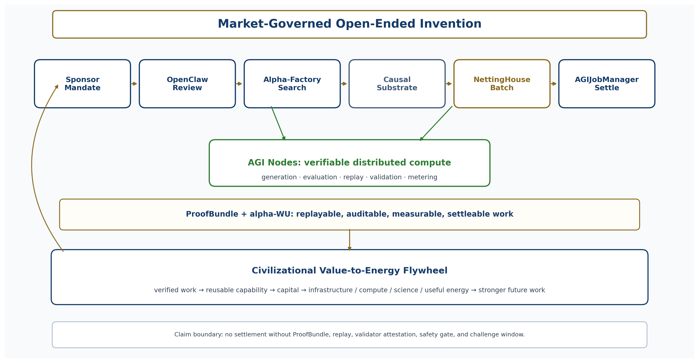
| Layer | AGI ALPHA component | Function |
|---|---|---|
| Settlement rail | AGIJobManager | Escrow, validation, dispute resolution, and authoritative finalization. |
| Funding rail | Paymaster | Funds $AGIALPHA-denominated mandate epochs and enforces budgets. |
| Batch rail | NettingHouse | Batches off-chain microjob receipts, challenge windows, Merkle roots, payout roots, archive-delta roots, and quarantine roots. |
| Operator shell | OpenClaw | Sponsor, reviewer, and operator UX for inspections, approvals, interventions, and finalization. |
| Invention engine | Alpha-Factory | Runs proposal, causalization, scoring, novelty, red-team, archive, and promotion loops. |
| Causal substrate | AGI ALPHA causal-substrate service | Mechanism checks, causal bridges, side-effect scans, counterfactual probes, and active deepening. |
| Diversity memory | Global QD / MAP-Elites archive | Preserves stepping stones and diverse high-quality artifacts across descriptor cells. |
| Compute fabric | AGI Nodes | Executes generation, evaluation, training, search, replay, and validation jobs with metering. |
| Identity layer | AGI.Eth / ASI.Eth | Names agents, nodes, validators, environments, proof roots, authority, and institutional scope. |
| Proof layer | ProofBundle / alpha-WU | Makes work replayable, auditable, measured, and settleable. |
| Reinvestment layer | Value Capture Ledger + Invention Reserve | Converts validated invention into owned capability, capital, infrastructure, compute, science, and useful-energy capacity. |
A market-governed invention engine should not create one on-chain job for every invention microstep. One AGIJobManager job should represent one MandateEpoch, while NettingHouse batches high-volume invention receipts off-chain and commits settlement-grade roots.
A mandate is:
\[ \begin{aligned} M = (&\mathrm{goal}, \mathrm{budget}, \mathrm{policy}, \mathrm{descriptor\_schema}, \mathrm{scoring\_rubric},\\ &\mathrm{safety\_policy}, \mathrm{validator\_policy}, \mathrm{promotion\_thresholds}, \mathrm{reinvestment\_policy}). \end{aligned} \]
A MandateEpoch is:
\[ \begin{aligned} E_t = (&\mathrm{mandate\_id}, \mathrm{epoch\_id}, \mathrm{policy\_hash}, \mathrm{descriptor\_schema\_hash},\\ &\mathrm{score\_rubric\_hash}, \mathrm{safety\_policy\_hash}, \mathrm{validator\_policy\_hash},\\ &\mathrm{receipt\_root}, \mathrm{payout\_root}, \mathrm{archive\_delta\_root}, \mathrm{quarantine\_root},\\ &\mathrm{validator\_attestation\_bundle}, \mathrm{challenge\_window}, \mathrm{payout\_budget}, \mathrm{metadata\_uri}). \end{aligned} \]
The microjob alphabet is:
PROPOSE, CAUSALIZE, SCORE_FAST, SCORE_LCM, NOVELTY, REDTEAM,
ARCHIVE_INSERT, VALIDATE_REPLAY, PROMOTE_CANDIDATE,
PACKAGE_CAPABILITY, UPDATE_INSIGHT_SIGNALInside each epoch, NettingHouse authorizes microjobs, Alpha-Factory runs the invention swarm, the causal-substrate service evaluates mechanism plausibility and side effects, the QD archive stores elites and stepping stones, restricted-domain routing and red-team gates quarantine unsafe candidates, NettingHouse commits receipt, archive-delta, payout, and quarantine roots, OpenClaw reviewers inspect promotions and quarantines, and AGIJobManager validates or finalizes the epoch as the authoritative settlement checkpoint. ProofBundles and alpha-WU records are exported at epoch finalization.
The epoch-level flow is:
Sponsor mandate
-> Paymaster opens epoch
-> NettingHouse authorizes microjobs
-> Alpha-Factory runs invention swarm
-> causal substrate evaluates mechanism plausibility and side effects
-> QD archive stores elites and stepping stones
-> restricted-domain router and red-team gate unsafe candidates
-> NettingHouse commits receipt_root / archive_delta_root / payout_root
and quarantine_root
-> OpenClaw reviewer inspects quarantine and promotion candidates
-> AGIJobManager validates/finalizes epoch
-> settlement, alpha-WU accounting, ProofBundle export
-> capability package / invention reserve / reinvestment update
-> next harder mandateAGI ALPHA must not treat quality diversity as a side module. The global QD archive is the memory of open-ended invention. It stores diverse, high-quality stepping stones across tasks, environments, agent workflows, validators, causal mechanisms, Nova-Seed-like foresight artifacts, capability packages, and market designs.
For descriptor cell \(d\):
\[ \mathrm{ArchiveCell}[d] = \text{best known validated artifact in descriptor cell } d. \]
The archive admits multiple artifact classes: invention candidates, task environments, agent workflows, validators, tool contracts, market mechanisms, causal motifs, software patches, scientific hypotheses, capability packages, foresight artifacts, proof templates, operator playbooks, and reinvestment strategies.
A descriptor schema for invention throughput contains:
D1 prototype cost
D2 time-to-prototype
D3 deployment surface
D4 coordination complexity
D5 modality
D6 dependency intensity
D7 domain entropy / cross-domain recombination
D8 regulatory or compliance friction
D9 verification difficulty
D10 reinvestment relevance
D11 compute or energy leverage
D12 safety / reversibility classThe score vector is written compactly as:
\[ s(x)=(F,C,I,N,R,T,S,V,E). \]
Here \(F\) is feasibility, \(C\) causal coherence, \(I\) impact potential, \(N\) mechanism novelty, \(R\) robustness, \(T\) testability, \(S\) safety margin, \(V\) reinvestment value, and \(E\) compute-or-energy leverage.
A scalar quality proxy is:
\[ \begin{aligned} Q(x)=& 0.16F + 0.16C + 0.15I + 0.13N\\ &+0.10R + 0.10T + 0.08S + 0.07V + 0.05E, \end{aligned} \]
where \(F\) is feasibility, \(C\) causal coherence, \(I\) impact potential, \(N\) mechanism novelty, \(R\) robustness, \(T\) testability, \(S\) safety margin, \(V\) reinvestment value, and \(E\) compute-or-energy leverage.
Safety is not merely a score. It is a gate.
RiskTier in {ALLOW, CAUTION, RESTRICTED, PROHIBITED}
Red-team verdict in {ALLOW, ALLOW_WITH_CONSTRAINTS, RESTRICT, PROHIBIT}A candidate may be promoted only if it is ALLOW, or CAUTION with red-team approval; feasibility, causal coherence, testability, and safety margin are all at least 4 on the relevant rubric; replayability passes; the ProofBundle is complete; and at least one of impact potential, mechanism novelty, or reinvestment value is at least 4. PROHIBITED artifacts are dropped except for a minimal hash, reason code, and safety category. RESTRICTED artifacts are quarantined and never auto-promoted.
Foundation models and QD archives make invention searchable. A causal substrate makes the search mechanism-level rather than word-level. AGI ALPHA defines its own commercially independent causal-substrate service rather than depending on any external causal-model implementation.
A causal slice is:
\[ \mathrm{CausalSlice}=(D,G,M,L,P,\Gamma,V,I_{\mathrm{known}},S_{\mathrm{effects}}). \]
The tuple records domain, causal graph, manifold embedding, cross-slice links, provenance, confidence, version, known interventions, and known side effects.
The causal-substrate service exposes the following AGI ALPHA-native APIs:
neighbors(node, k, slice)
bridge(query_nodes, target_slice)
mechanism_check(chain)
intervention_sketch(do(X))
side_effect_scan(intervention, risk_taxonomy)
novelty_density(node_or_chain)
active_deepen(frontier_region, uncertainty_budget)
counterfactual_probe(candidate, alternative_conditions)Active deepening spends causal-modeling budget only where the QD frontier indicates high uncertainty, high novelty, high value, or high risk. This prevents the system from wasting expensive modeling effort on low-value regions while preserving the ability to inspect high-impact mechanisms before promotion.
OpenClaw is not the scheduler, settlement source, or archive source of truth. It is the human-facing control shell for sponsors, reviewers, and operators.
SponsorClaw creates mandates, opens epochs, inspects archives, adjusts budgets, approves promotion classes, views flywheel contribution, and reviews reinvestment options.
ReviewerClaw inspects quarantine, reviews red-team rationales, inspects causal chains, approves constrained candidates, requires additional validation, and blocks unsafe promotion.
OperatorClaw monitors epoch health, inspects failed receipts, reruns verification, submits epoch roots, validates or finalizes epoch jobs, inspects node telemetry, and triggers fail-closed controls.
OpenClaw skills include:
create_mandate
open_epoch
inspect_archive_cell
inspect_quarantine
approve_restricted_candidate
request_extra_validation
validate_epoch
finalize_epoch
promote_to_alpha_factory
export_public_proof_pack
export_private_audit_packThe AGIJobManager adapter exposes:
open_epoch_job(mandateId, epochId, payoutBudget, metadataURI)
commit_epoch_root(epochId, receiptRoot, archiveDeltaRoot, attestationBundle)
validate_epoch_job(epochId)
finalize_epoch_job(epochId)
open_dispute(epochId, receiptId)
publish_chronicle_entry(epochId)The metadata URI must point to an epoch bundle containing mandate policy hash, descriptor schema hash, scoring rubric hash, safety policy hash, validator policy hash, receipt root, payout root, archive delta root, quarantine root, red-team summary statistics, restricted-domain escalations, payout totals, validator attestation bundle, replay and audit artifacts, public-safe report, and private audit appendix.
AGI Nodes do not reduce the total compute required for open-ended QD or AI-generating search. They increase available compute supply, distribute embarrassingly parallel work, and allocate compute toward validated search objectives. Frontier-model pretraining requires tightly coupled, high-bandwidth clusters and is not solved by ordinary decentralized nodes. Open-ended invention search is different: candidate generation, evaluation, novelty scoring, archive maintenance, replay, red-team, and validation are naturally parallelizable and can be distributed across AGI Nodes.
AGI Nodes therefore solve the second bottleneck now and support the first indirectly through data generation, evaluation, distillation, fine-tuning, and hyperparameter search.
Node job types include:
WU_ENV_MUTATE
WU_INTERESTINGNESS
WU_SOLVE_ATTEMPT
WU_EVAL_ROLLOUT
WU_NOVELTY
WU_CAUSALIZE
WU_ARCHIVE_PROPOSE
WU_ARCHIVE_MAINTAIN
WU_REDTEAM
WU_VALIDATE_REPLAY
WU_PACKAGE_CAPABILITYThe verification ladder is:
No compute reward is released without a replayable receipt, validator attestation, and challenge window.
Open-ended invention search needs funding, but the protocol must remain legally and commercially conservative. AGI ALPHA defines the Alpha Foundry Mandate Facility (\(\alpha\mathrm{FMF}\)) as a utility-only funding and clearing facility for invention-search mandates while preserving strict $AGIALPHA-denominated settlement. It is not equity, not debt, not profit-sharing, not yield-bearing, not a security, and not a promise of operator profit. It is a utility clearing facility for funding, pricing, metering, and settling AGI ALPHA work.
Components include Mandate Registry, budget account or endowment vault, AGIALPHA Paymaster, Redemption Window with caps and spreads where applicable, Epoch NettingHouse, Coverage Ratio Controller, Archive Registry, Causal Slice Registry, Policy Gate, and operator risk ledger.
Coverage is:
\[ \mathrm{CoverageRatio} = \frac{R_{\mathrm{stable}}+R_{\mathrm{liquid}}} {E_{\mathrm{redeem}}+E_{\mathrm{bounty}}+E_{\mathrm{reserve}}}. \]
Here \(R_{\mathrm{stable}}\) and \(R_{\mathrm{liquid}}\) are reserve and inventory terms, while \(E_{\mathrm{redeem}}\), \(E_{\mathrm{bounty}}\), and \(E_{\mathrm{reserve}}\) are expected redemption, bounty-pipeline, and operating-reserve requirements.
Throttle rules are simple. Healthy coverage permits normal QD and invention search. Moderate coverage throttles exploratory jobs first. Low coverage continues paid customer jobs, validation, and dispute resolution while pausing noncritical exploration. Critical coverage pauses new mandates and preserves settlement, auditability, and disputes.
Compute pricing is:
\[ \mathrm{Escrow}_{\mathrm{AGIALPHA}} \ge \frac{ \mathrm{ACU}\cdot \mathrm{USD}_{\mathrm{ACU}}\cdot (1+\mathrm{margin}+\mathrm{risk}+\mathrm{verification}) }{ \mathrm{AGIALPHA}_{\mathrm{USD}}\cdot \mathrm{operator\_net\_share} }. \]
Risk-adjusted operator economics are:
\[ \begin{aligned} \Pi_{\mathrm{op}}=&\ P_{\mathrm{net}} -C_{\mathrm{compute}} -C_{\mathrm{energy}} -C_{\mathrm{hardware}}\\ &-C_{\mathrm{api}} -L_{\mathrm{slash}} -C_{\mathrm{liquidity}} -C_{\mathrm{opportunity}}. \end{aligned} \]
Here \(\Pi_{\mathrm{op}}\) is expected operator profit under stated assumptions.
with:
\[ \mathrm{ExpectedSlashLoss} = p_{\mathrm{failure}}\cdot \mathrm{slash\_fraction}\cdot \mathrm{stake\_at\_risk}. \]
A node workload is admitted only if expected operator profit is positive under stated assumptions, but the paper must not present this as guaranteed operator profit. The protocol cannot make node economics work by assertion; it must show that bounties, validator overhead, slashing risk, liquidity constraints, and compute costs can balance under realistic workload assumptions.
alpha-AGI Insight should not claim perfect foresight. Its defensible claim is that running real AGI Jobs at scale reveals stepping stones: repeated proof-bearing patterns that indicate where machine labor is producing compounding leverage.
A stepping stone is:
\[ \begin{aligned} \mathrm{SteppingStone}=(&\mathrm{task\_family}, \mathrm{validated\_artifact}, \mathrm{reusable\_capability}, \mathrm{cost\_reduction},\\ &\mathrm{transfer\_score}, \mathrm{lineage\_pointer}, \mathrm{sector\_signal}, \mathrm{risk\_profile},\\ &\mathrm{reinvestment\_option}, \mathrm{evidence\_bundle\_pointer}). \end{aligned} \]
A sector insight score is:
\[ \mathrm{InsightScore}(s) = \frac{ f_s\cdot r_s\cdot c_s\cdot t_s\cdot k_s\cdot e_s }{ \rho_s+\ell_s+v_s+u_s }, \]
where \(f_s\) is frequency of validated stepping stones, \(r_s\) reusability, \(c_s\) cost decline, \(t_s\) transferability, \(k_s\) capitalizability, \(e_s\) infrastructure-compute-energy relevance, \(\rho_s\) risk, \(\ell_s\) regulatory friction, \(v_s\) validator burden, and \(u_s\) uncertainty.
AGI ALPHA should discover high-value opportunity regions by executing increasingly demanding AGI Jobs and observing which validated stepping stones repeatedly compound. The paper must avoid claims of pinpoint certainty, guaranteed optimal opportunities, achieved superintelligence, guaranteed market dominance, or deterministic future prediction. The claim is structured foresight through validated work: machine-speed weak-signal discovery, evidence-grounded opportunity mapping, and increasingly precise sector signals.
This section is mandatory for turning the paper from architecture into science. It separates three claims.
Scalability. Does adding agents, tools, validators, memory, routing, and nodes improve throughput or task coverage without exploding coordination overhead?
Efficiency. Does the system produce more verified work per unit of compute, token spend, wall-clock time, tool call, or human review than simpler baselines?
Safety. Does the system maintain policy, security, privacy, reversibility, process integrity, and subversion resistance on realistic tasks?
The minimum public evidence bundle for any coordination claim contains:
public task ID or job spec
task manifest
agent constellation and role contracts
router decision
tool-call trace
handoff trace
artifacts
validator report
red-team report where applicable
cost ledger
safety ledger
settlement receipt or clearly labeled simulated settlement receipt
replay instructions
failure cases
baseline comparison
repeated-trial reliability estimateNo cherry-picked demo, private-only trace, unreplayable run, hidden human intervention, fake completion URI, or synthetic proof may be counted as demonstrated coordination.
The evidence plan has three stages.
Stage A: Single MandateEpoch proof pack. Run one real, replayable task end-to-end: job spec -> routed agents -> bounded tools -> validator -> ProofBundle -> NettingHouse receipt -> OpenClaw review -> AGIJobManager-compatible settlement artifact.
Stage B: Baseline benchmark. Compare B0-B5 under equal model/tool/budget constraints on software repair, web/API workflow, policy-bound tool use, scientific/data workflow, and one AGI Jobs protocol-native task.
Stage C: Scaling curve. Run the same task families with 1, 2, 4, 8, and 16 agents and with local versus distributed node execution. Measure throughput, verified work per cost, validator overhead, coordination overhead, failure recovery, and safety incidents.
ALPHA-AGI Insight v02 is used as an internal strategic and technical architecture brief. External works discussed in that brief, including quality-diversity, open-ended search, AI feedback, causal-model extraction, and agentic-system design, are cited only as scientific inspiration and prior-art context. AGI ALPHA develops its own commercially independent mechanisms: MandateEpochs, ProofBundles, alpha-Work Units, NettingHouse batching, Paymaster funding, AGIJobManager settlement adapters, OpenClaw operator skills, AGI.Eth identity, Alpha-Factory invention workflows, causal-substrate services, safety gates, QD archives, verifiable distributed compute, and value-to-energy reinvestment governance.
The paper does not claim that AGI ALPHA has already achieved superintelligence, autonomous economic sovereignty, energy abundance, or civilization-scale capability. It claims that a market-governed, proof-gated, causally informed, QD-driven intelligence-organization substrate is a plausible architecture for testing whether verified machine labor can compound into reusable capability, capital, infrastructure, compute, science, and useful-energy capacity. The claim becomes empirical only through MandateEpoch results, real-task benchmarks, replayable proof bundles, validator audits, safety ledgers, delayed outcomes, baseline comparisons, and cost/risk accounting.
Design invariant. Exploration is allowed. Outcome authority is mechanical. Promotion requires evidence. Compounding requires persistence. Autonomy requires authority.
AGI Alpha RSI is the deterministic sovereign governance control plane inside AGI ALPHA. AGI ALPHA is the scalable substrate for intelligence organizations; AGI Alpha RSI is the deterministic governance institution for recursive self-improving invention. Together, they transform open-ended discovery from a novelty process into an auditable, replayable, baseline-comparative, value-producing institution.
AGI Alpha RSI is a deterministic invention operating system for open-ended discovery, governed deployment, and compounding advantage. Its purpose is to build the governance institution first, before AGI-scale systems mature. It is not a novelty mill, hype engine, or black-box outcome authority. It is a control architecture where breakthroughs are admitted only as audited state transitions. The internal RSI materials define the kernel as deterministic invention operations with schema-bound artifacts, baseline-comparative evaluation, ECI semantics, Move-37 handling, replayability, and mandatory dossier packaging [90-92].
RSI design invariant. Exploration is allowed. Outcome authority is mechanical. Promotion requires evidence. Compounding requires persistence. Autonomy requires authority.
OMNI-style interestingness provides search control, not outcome authority. Interestingness may influence allocation, targeting, and exploration pressure, but it must never override risk gates, executed evidence, baseline comparison, persistence tests, replay, validator authority, or settlement rules.
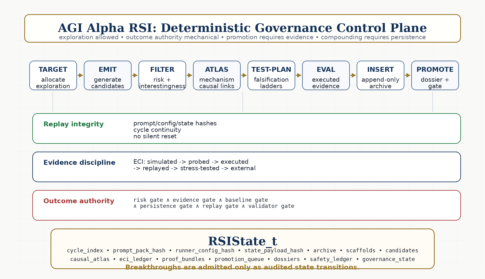
The RSI cycle is:
\[ \boxed{ \mathrm{TARGET} \rightarrow \mathrm{EMIT} \rightarrow \mathrm{FILTER} \rightarrow \mathrm{ATLAS} \rightarrow \mathrm{TEST\text{-}PLAN} \rightarrow \mathrm{EVAL} \rightarrow \mathrm{INSERT} \rightarrow \mathrm{PROMOTE} } \]
| Stage | Function |
|---|---|
| TARGET | Allocate exploration pressure across archive cells, bridge regions, themes, open-ended environments, task families, and strategic mandates. |
| EMIT | Generate candidate artifacts, agent lineages, workflows, environments, validators, scaffolds, causal hypotheses, or invention candidates. |
| FILTER | Apply risk gating, prohibited-domain detection, novelty and boringness checks, OMNI interestingness, and routing decisions: reject, probe, refine, escalate, or continue. |
| ATLAS | Extract causal triples, mechanism chains, contradictions, side effects, bridge hypotheses, and cross-domain causal links. |
| TEST-PLAN | Build falsification ladders and microbench plans using uncertainty focus, expected information gain, and cheapest-valid-probe scheduling. |
| EVAL | Run baseline-comparative evaluations, deterministic microbenches, external validators, executed evidence, cost/risk ledgers, and ECI updates. |
| INSERT | Update MAP-Elites / QD archive mechanically under descriptor cells, evidence thresholds, replayability, and safety gates. |
| PROMOTE | Rank candidates for deployment, deeper testing, capability packaging, MandateEpoch settlement, invention reserve inclusion, or reinvestment. |
The RSI state is a schema-bound, append-only institutional memory object:
\[ \mathrm{RSIState}_t = (x_1, x_2, \ldots, x_{17}) \]
with ordered fields:
cycle_index; prompt_pack_hash; runner_config_hash; state_payload_hash;
archive; scaffolds; candidates; causal_atlas; eci_ledger; evidence_objects;
baseline_library; proof_bundles; promotion_queue; dossier_index; safety_ledger;
drift_sentinel; governance_state.Persistence invariants:
cycle_index increments exactly +1 on continuation
runs.archive.candidates is append-only.archive.scaffolds is append-only.causal_atlas.triples is append-only.eci.ledger is append-only.prompt_pack_hash, runner_config_hash, and
state_payload_hash are bound into the next state.AGI Alpha RSI makes recursive improvement underwritable by refusing to proceed when inputs or state drift silently. The drift sentinel computes:
\[ \begin{aligned} h_p &= \mathrm{SHA256}(\mathrm{canonical\_json}(\mathrm{prompt\_pack})),\\ h_r &= \mathrm{SHA256}(\mathrm{canonical\_json}(\mathrm{runner\_config})),\\ h_s &= \mathrm{SHA256}(\mathrm{canonical\_json}(\mathrm{state}^{\oslash})). \end{aligned} \]
Here, \(\mathrm{state}^{\oslash}\)
denotes the state after setting
state_manifest.state_payload_hash = null and excluding
explicit drift-override acknowledgement fields from the hash
calculation.
Run rule. Before each RSI cycle, compute all three hashes. If any mismatch occurs without an authorized drift override, the runner hard-fails, outputs a run manifest, leaves state unchanged, and does not mutate the archive, atlas, ECI ledger, scaffolds, or cycle index.
Hard-fail conditions include prompt pack drift, runner config drift, state payload corruption, cycle index reset, archive shrinkage, scaffold shrinkage, causal atlas shrinkage, ECI ledger shrinkage, unexplained schema change, unexplained prompt change, or unexplained scoring change. A recursively improving system without drift detection is not underwritable; it is a prompt loop with memory risk.
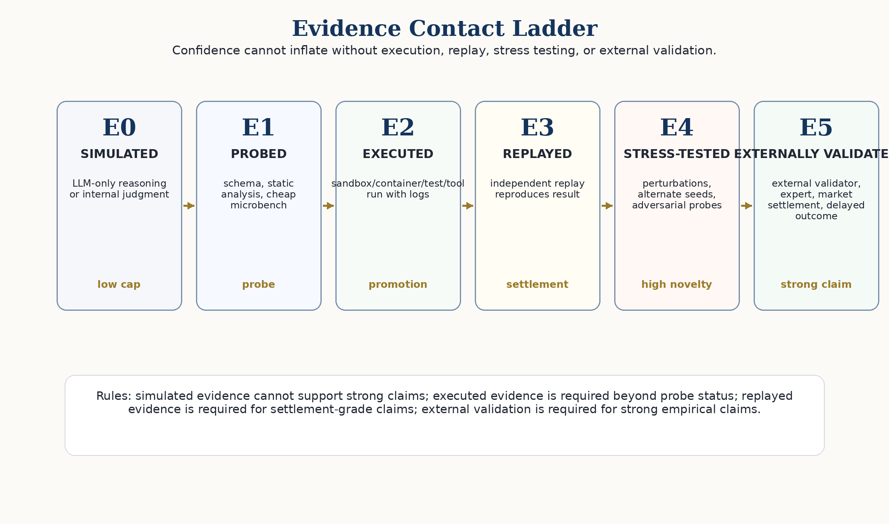
The Evidence Contact Index (ECI) is an AGI ALPHA-native evidence-contact measure. It prevents simulated reasoning from being mistaken for executed, replayed, stress-tested, or externally validated evidence.
| Level | Meaning | Promotion implication |
|---|---|---|
| E0 SIMULATED | LLM-only reasoning, scenario generation, or internal judgment. | Cannot push ECI beyond a low cap. |
| E1 PROBED | Deterministic syntactic, schema, static-analysis, or cheap microbench check. | Allows probe status only. |
| E2 EXECUTED | Candidate run in sandbox, container, benchmark, test harness, tool environment, or microbench with logged outputs. | Required for promotion beyond probe status. |
| E3 REPLAYED | Independent replay reproduces the result from pinned seeds, container hashes, dependency pins, and manifest. | Required for settlement-grade claims. |
| E4 STRESS-TESTED | Candidate retains advantage under policy shocks, adversarial perturbations, alternative seeds, nearby baselines, and failure-mode probes. | Required for high-novelty candidates. |
| E5 EXTERNALLY VALIDATED | External validator, real-world outcome, human expert, independent lab, market settlement, or delayed outcome confirms result. | Required for strong empirical claims. |
Let \(\mathrm{ECI}(x)\in[0,1]\). Confidence cannot inflate without executed or replayed evidence. Priority is therefore:
\[ \begin{aligned} \mathrm{Priority}(x)=& \ \mathrm{Interestingness}(x) \cdot (1-\mathrm{ECI}_{\mathrm{uncertainty}}(x))\\ &\cdot \mathrm{BaselineOutperformanceValue}(x) \cdot \mathrm{MissionUtility}(x)\\ &\cdot \mathrm{SafetyGate}(x) \cdot \mathrm{Replayability}(x), \end{aligned} \]
with \(\mathrm{SafetyGate}(x)=0\) for prohibited or critical-risk candidates.
A breakthrough is not a story. It is a deterministic state transition. The RSI trigger is:
\[ \begin{aligned} \mathrm{Move37Candidate}(x)=1 \quad\mathrm{iff}\quad& \mathrm{NoveltyDistance}(x)\geq\tau_{\mathrm{novelty}}\\ &\wedge\ \mathrm{AdvantageDelta}(x)\geq\tau_{\mathrm{advantage}}\\ &\wedge\ \mathrm{RiskTier}(x)\notin\{\mathrm{PROHIBITED}\}\\ &\wedge\ \mathrm{ECI}(x)\geq\tau_{\mathrm{evidence\_min}} . \end{aligned} \]
When triggered, RSI executes: recognize, reproduce, stress-test, persistence gate, and dossier packaging. Recognition records novelty distance, advantage delta, risk score, ECI, baseline comparison, archive cell, and lineage. Reproduction reruns the candidate and incumbent/neighbor/null baselines under fixed seeds. Stress testing applies policy shocks, perturbations, adversarial probes, alternate seeds, and side-effect scans. Persistence requires positive advantage over baselines under minimum shocks and replays. Dossier packaging emits a decision-grade breakthrough dossier. High novelty does not lower the burden of proof; it raises it.
Mandatory baselines are:
| Baseline | Comparator |
|---|---|
| B0 null | No agentic intervention, random policy, or trivial policy. |
| B1 incumbent | Current best validated artifact in the same archive cell. |
| B2 nearest-neighbor | Best artifact in adjacent descriptor cells. |
| B3 static workflow | Hand-designed or fixed pipeline. |
| B4 single strongest agent | Strong one-model / one-agent baseline. |
| B5 current AGI ALPHA stack | Existing routed, validator-gated system before the new RSI candidate. |
Promotion requires positive advantage against relevant baselines, cost-adjusted improvement, safety no worse than incumbent, replayability complete, and no critical policy violation.
\[ \begin{aligned} \mathrm{AdvantageDelta}(x,b)=& \ \mathrm{VerifiedValue}(x)-\mathrm{VerifiedValue}(b)\\ &-\lambda\big(\mathrm{Cost}(x)-\mathrm{Cost}(b)\big)\\ &-\rho\big(\mathrm{Risk}(x)-\mathrm{Risk}(b)\big)\\ &-\kappa\big(\mathrm{CoordinationOverhead}(x)-\mathrm{CoordinationOverhead}(b)\big). \end{aligned} \]
Design invariant. OMNI improves allocation. It does not confer authority. It may decide where to search next; it may not decide what is true, safe, payable, deployable, or strategically promoted.
OMNI-style interestingness, novelty, and human-notion models are valuable for directing exploration, but they are not validators. OMNI may prioritize archive cells, propose bridge targets, select underexplored niches, generate interesting tasks, recommend probe-first candidates, identify boring or redundant candidates, and suggest mutation pressure. OMNI may not insert candidates into the archive, bypass risk filters, inflate ECI, approve settlement, override baselines, promote high-novelty candidates, or authorize deployment.
\[ \begin{aligned} \mathrm{OutcomeAuthority}(x)=& \ \mathrm{RiskGate}(x) \wedge \mathrm{EvidenceGate}(x) \wedge \mathrm{BaselineGate}(x)\\ &\wedge \mathrm{PersistenceGate}(x) \wedge \mathrm{ReplayGate}(x) \wedge \mathrm{ValidatorGate}(x). \end{aligned} \]
OMNI is not part of OutcomeAuthority except as optional allocation input.
RSI turns invention outputs into institutional artifacts. It defines four dossier classes:
| Dossier | Use |
|---|---|
| Insight Dossier | Strategic narrative, opportunity framing, early evidence, open questions, and next tests. |
| MARK Dossier | Audit-heavy technical dossier with reproducibility checklists, baselines, compliance posture, evidence objects, and replay instructions. |
| Sovereign Dossier | Institutional dossier covering governance boundary, security posture, resource implications, policy constraints, and strategic relevance. |
| Architect / Validator Council Dossier | Highest-assurance dossier containing independent validation, adversarial review, process-resolved evidence, semi-formal checks, and deployment authority review. |
\[ \mathrm{RSIDossier} = (d_1, d_2, \ldots, d_{19}) \]
with ordered fields:
dossier_id; candidate_id; archive_cell; novelty_distance; advantage_delta;
baselines; reproduction_manifest; stress_tests; evidence_objects; eci_summary;
risk_report; causal_atlas_links; proof_bundle_refs; validator_attestations;
promotion_decision; governance_notes; replay_instructions; public_safe_summary;
private_audit_appendix.No Move-37 claim without a dossier. No strategic promotion without a dossier. No institutional deployment without replayable dossier evidence.
AGI Alpha RSI does not merely improve model capability. It improves institutional state capacity for machine labor.
| Dimension | RSI meaning |
|---|---|
| Legibility | Replayability, schemas, proof bundles, evidence logs, and audit trails. |
| Control | Mechanical gates, authority boundaries, risk routing, pause controls, and no OMNI outcome authority. |
| Continuity | Append-only ledgers, persistent archive, scaffold lineages, causal atlas memory, and drift sentinel. |
| Coordination | Dossiers, schema-bound artifacts, baseline libraries, validator councils, MandateEpochs, AGI Jobs, and AGI Nodes. |
| Compounding | Stepping-stone retention, lineage metaproductivity, QD archive coverage, regression detection, and reinvestment policy. |
Define compact factors:
\[ \begin{aligned} A_{\mathrm{RSI}} &= \mathrm{Legibility}\cdot\mathrm{Control}\cdot\mathrm{Continuity} \cdot\mathrm{Coordination}\cdot\mathrm{Compounding},\\ B_{\mathrm{RSI}} &= \mathrm{CoordinationCost}+\mathrm{AuditCost}+\mathrm{GovernanceLatency}\\ &\quad+\mathrm{DriftRisk}+\mathrm{FalsePromotionRisk},\\ D_{\mathrm{RSI\_capacity}} &= \frac{A_{\mathrm{RSI}}}{B_{\mathrm{RSI}}}. \end{aligned} \]
The civilizational governance metric becomes:
\[ \begin{aligned} A_{\mathrm{civ,RSI}} &= D_{\mathrm{civ++}}\cdot D_{\mathrm{RSI\_capacity}} \cdot\mathrm{ReplayabilityRate}\\ &\quad\cdot\mathrm{ExecutedEvidenceShare} \cdot\mathrm{BaselineDisciplineScore} \cdot\mathrm{PersistenceIntegrity},\\ B_{\mathrm{civ,RSI}} &= 1+\mathrm{DriftRisk}+\mathrm{EvidenceInflationRisk}\\ &\quad+\mathrm{NoveltyMillRisk}+\mathrm{DossierDebt},\\ D_{\mathrm{civ,RSI}} &= \frac{A_{\mathrm{civ,RSI}}}{B_{\mathrm{civ,RSI}}}. \end{aligned} \]
Frontier labs optimize for capability velocity. RSI optimizes for durable, auditable compounding advantage under governance. A frontier sprint emphasizes rapid prototypes, taste-driven iteration, and breakthrough chasing. A governed sprint emphasizes fast probes, hard gates, and reproducible deltas. Legacy bureaucracy has slow approvals, weak measurement, and low compounding. AGI Alpha RSI combines deterministic replay, evidence-first promotion, sovereign dossiers, and append-only compounding memory. The claim is not that RSI replaces frontier labs; it claims that frontier capability without a deterministic invention governance institution is difficult to underwrite, audit, or safely compound.
AGI Alpha RSI is strategic enabling infrastructure for intelligence organizations. It raises the return and safety of downstream AI programs by ensuring that invention outputs are reproducible, validated, audited, and governable before they become capital, infrastructure, or deployment decisions. The point is durable governance of invention, not uncontrolled strategic escalation.
| Phase | Scope | KPIs |
|---|---|---|
| Phase 0 - Pilot, 0-90 days | Deterministic runner, schema registry, baseline library, null baseline policy, ECI ledger, drift sentinel, executed L0 microbenches, evidence objects, replay manifests. | >=95% cycles replayable from manifests; no silent state resets; at least one EXECUTED evidence object per cycle; no candidate promoted from simulated evidence alone. |
| Phase 1 - Scale, 3-12 months | Archive coverage expansion, bridge exploration, OMNI task selection, causal atlas growth, probe ROI, Move-37 dossier workflow, benchmark dockets, repeated real-task baselines. | Sustained AdvantageDelta improvement vs incumbents; rising executed-evidence share; higher stepping-stone reuse; non-decreasing archive coverage. |
| Phase 2 - Strategic autonomy, 12-24 months | Policy-shock stress suites, persistent RSI lineages, validator council, security hardening, partner execution lanes, invention capital allocation, third-party replay/audit. | Validated compounding discovery rate; independent replay success; real-task cost reduction over cycles; zero critical safety violations. |
Minimum dashboard:
| Area | Metrics |
|---|---|
| Replayability | % cycles reproducible from manifests; schema validation failure rate; drift sentinel failure rate. |
| Evidence quality | EXECUTED vs SIMULATED share; ECI distribution; calibration drift; ProofBundle completeness. |
| Exploration quality | Novelty distance distribution; OMNI allocation efficiency; probe ROI; stepping-stone reuse; archive coverage. |
| Advantage confirmation | AdvantageDelta vs incumbent/neighbor/null baselines; persistence pass rate under shocks; high-novelty promotion rate. |
| Safety | Risk gate block rate; prohibited-domain detection; adverse side-effect incidents; red-team catch rate; quarantine rate. |
| State integrity | Cycle-index continuity; archive candidate growth; scaffold lineage growth; causal atlas growth; ECI ledger growth; state hash continuity. |
AGI ALPHA must not claim scalable, efficient, safe multi-agent coordination unless an RSI Evidence Docket exists.
rsi-evidence-docket/
00_claims_matrix.md
01_runner_manifest.json
02_prompt_pack_hashes.json
03_state_hashes.json
04_task_manifests/
05_baselines/
06_agialpha_rsi_runs/
07_microbench_results/
08_evidence_objects/
09_eci_ledger/
10_proof_bundles/
11_baseline_comparisons/
12_move37_dossiers/
13_safety_ledgers/
14_cost_ledgers/
15_replay_instructions/
16_independent_replay_reports/
17_summary_tables/Every empirical coordination claim must answer: what real task was performed; which agents participated; which scaffolds were active; which tools were used; what baseline was used; what evidence was executed; what was replayed; what cost was incurred; what safety profile resulted; what AdvantageDelta was observed; what persisted into the archive; and what the system learned for the next cycle.
Rule: no Evidence Docket, no empirical SOTA claim.
AGI Alpha RSI Integration, AGI_Alpha_RSI_Sovereign_v0, and AGI_Alpha_RSI_Sovereign_Strategy_Brief_v0 are used as internal strategic and technical architecture sources. External works referenced in those materials are cited only as scientific inspiration and prior-art context. AGI ALPHA develops its own commercially independent RSI control plane: deterministic runner semantics, schema-bound prompt ecosystem, ECI ledger, drift sentinel, QD archive, OMNI allocation controls, Move-37 breakthrough handling, baseline library, ProofBundles, alpha-Work Units, MandateEpoch settlement, sovereign dossiers, and evidence-docket benchmarks.
The paper does not claim achieved superintelligence, achieved ASI, autonomous sovereignty, guaranteed market dominance, energy abundance, or civilization-scale capability. It claims a testable architecture: a deterministic, validator-gated, market-governed, recursively improving intelligence-organization substrate whose outputs become empirical only through executed evidence, replayable ProofBundles, baseline comparisons, safety ledgers, cost/risk accounting, delayed outcomes, and independent audit.
The civilizational objective depends not only on capability, but on ownership, value capture, and disciplined reinvestment. The paper therefore does not stop at “agents do work.” It models how work becomes owned capability and how owned capability compounds.
Value Capture Ledger. Tracks how accepted evidence bundles become revenue, intellectual property, internal tools, cost reductions, infrastructure plans, scientific assets, market mechanisms, or strategic capabilities.
Reinvestment Policy. Allocates verified gains into compute, data, tooling, security, validator capacity, research, robotics, laboratories, energy systems, and strategic reserves.
Invention Reserve. Stores non-commoditized, high-leverage discoveries whose best use is internal compounding.
Capability Monetization Boundary. Determines whether a capability should be sold, licensed, kept internal, open-sourced, sandboxed, or retired.
Capital formation is measured by:
\[ \begin{aligned} K_{\mathrm{gain}}={}& \mathrm{revenue}_{\mathrm{gain}} +\mathrm{cost}_{\mathrm{reduction}} +\mathrm{asset}_{\mathrm{value}} \\ &+\mathrm{option}_{\mathrm{strategic}} +\mathrm{infrastructure}_{\mathrm{value}} \\ &-R_{\mathrm{legal}}-R_{\mathrm{safety}}-R_{\mathrm{concentration}}. \end{aligned} \]
Reinvestment efficiency is:
\[ \eta_{\mathrm{reinvest}} = \frac{ \Delta\!\big(W_{\mathrm{verified}}+C_{\mathrm{compute}}+E_{\mathrm{useful}} +S_{\mathrm{science}}+I_{\mathrm{infrastructure}}\big) }{K_{\mathrm{reinvested}}}. \]
A superintelligent invention engine would be valuable only if its outputs can be captured, governed, reinvested, and compounded without creating unacceptable systemic risk.
Every frontier layer serves the value-to-energy flywheel.
| Layer | Role in the flywheel |
|---|---|
| Learned coordination | Turns many models/agents into one organized labor system. |
| Experience streams | Converts actions and outcomes into training material. |
| ProofZero planning | Searches future organizational actions before spending real resources. |
| Directed evolution / DISCO analogy | Shows proposal -> validation -> lineage -> improvement. |
| Sovereign Evolutionary Agent Economy | Allocates jobs, compute, validators, rewards, and market permeability. |
| Synthetic curricula | Generates new task frontiers from task definitions. |
| Lineage metaproductivity | Rewards descendants that create better future capabilities. |
| Dynamic verifiable evolution | Turns open-problem search into reusable learning. |
| Real-task benchmark gates | Prevents self-referential claims. |
| Governance and safety | Keeps compounding value from becoming unbounded optimization. |
| AGI.Eth namespace | Provides low-entropy identity, role, environment, and business naming for verifiable machine labor. |
| ASI.Eth reserve | Provides a high-assurance namespace for future ASI-grade governance and frontier-risk environments. |
| AGI Jobs Work OS | Converts requests into escrowed, validated, settleable work. |
| AGI Alpha Nodes | Provide deterministic execution, metering, artifact packaging, validation, sentinels, and observability. |
| Proof bundles | Convert outputs into settlement-grade evidence. |
| α-Work Units | Convert verified work into a canonical accounting unit. |
| Chronicle | Converts completed jobs into durable public/institutional memory. |
| $AGIALPHA | Stakes, settles, and coordinates protocol operations without implying equity or profit rights. |
| MontrealAI GitHub corpus | Supplies public implementation scaffolds, local/devnet demos, CI gates, runbooks, contracts, nodes, and proof-first release surfaces that can be converted into benchmark evidence dockets. |
A cited work or mechanism is admissible only if it becomes a mechanism, metric, experiment, design constraint, governance control, or implementation requirement that improves the safe conversion of intelligence into compounding productive capacity.
| Mechanism | Role in the Kardashev-aligned flywheel |
|---|---|
| Subversion-Resistant Validation | Prevents strategically deceptive agents from converting hidden failure, backdoors, collusion, or unsafe artifacts into accepted work, protecting the capital and infrastructure flywheel. |
| Process-Resolved Evidence Validation | Turns final-output validation into stepwise due diligence, making machine labor investable, auditable, insurable, and reusable. |
| Proof-Native Agent Workbench | Converts software repair, code generation, testing, rollback, and deployment into reproducible proof-bearing engineering labor. |
| Reality-Gap Evaluation Suite | Tests whether AGI ALPHA survives real interactive environments before claims are made about real-world productivity. |
| Capability Package Library | Converts successful workflows into reusable operational assets that compound future work. |
| Reflective Evidence Compression | Converts failures into structured improvements, reducing repeated waste and improving future routing without immediate weight updates. |
| Diversity-Preserving Artifact Frontier | Maintains a portfolio of high-value invention paths rather than collapsing onto one brittle local optimum. |
| Tiered Validator Council | Enables scalable oversight when validators are weaker than proposers, preserving governance as capability grows. |
| Action-Reason Trace Contract | Makes tool use auditable, scoped, predicted, observed, reversible, and suitable for high-stakes infrastructure work. |
| Agent Economy Simulation Sandbox | Stress-tests market dynamics, collusion, inequality, validator scarcity, and high-frequency negotiation before increasing economic permeability. |
| Value-Capture and Reinvestment Layer | Ensures verified invention becomes owned capability, capital, infrastructure, useful energy, compute, and stronger future labor. |
| AGI.Eth / ASI.Eth namespace layer | Reduces identity ambiguity, role confusion, unauthorized aliases, and settlement disputes by making actors and authority machine-resolvable. |
| Settlement-grade ProofBundle | Converts evidence bundles into replayable, signed, auditable, settleable work records. |
| Commit-reveal validation | Reduces herding, bribery leverage, validator collusion, and false settlement. |
| α-Work Unit metrology | Makes verified machine labor measurable across nodes, environments, missions, dollars, watts, and safety risk. |
| AGI Alpha Nodes | Supply deterministic runtime, metering, artifact packaging, sentinels, and signed telemetry for proof-bearing labor. |
| MontrealAI Evidence Docket | Converts the public GitHub implementation corpus into independently replayable real-task evidence with baselines, proof bundles, cost/risk ledgers, validator reports, and α-WU calibration. |
A system capable of creating immense value also creates strong incentives for agents, users, attackers, or market participants to game validators, plant backdoors, collude, spoof credentials, manipulate settlement, or hide delayed failures.
Subversion-Resistant Validation Layer. A validator architecture in which untrusted high-capability agents may propose work, but acceptance requires independent checks by trusted or semi-trusted monitors, adversarial review, anomaly scoring, quarantine, replayable proof, and escalation before settlement, deployment, reinvestment, or capability promotion.
Without subversion resistance, verified work is not investable. Capital formation built on hidden failure becomes systemic risk.
Capital and infrastructure should not be built on final answers alone. They require process integrity.
Process-Resolved Evidence Validation. Every evidence bundle is decomposed into intermediate proof steps, tool calls, handoffs, edits, claims, tests, validator decisions, and rollback points. Settlement and capability promotion depend on both final outcome and process integrity.
Process integrity turns machine labor into auditable assets that can be reused, financed, insured, licensed, or reinvested.
A serious invention engine needs interfaces that let agents produce reproducible software, patches, tests, simulations, rollback paths, and evidence bundles.
Proof-Native Agent Workbench. A constrained software and infrastructure workbench exposing repository navigation, file search, symbol inspection, patch proposal, diff review, test execution, static analysis, rollback, provenance, and evidence packaging.
Software capability is one of the fastest paths from intelligence to capital, infrastructure, compute efficiency, and future automation.
A civilizational flywheel cannot be inferred from clean benchmark success alone.
Reality-Gap Evaluation Suite. A benchmark and deployment-evaluation layer that tests AGI ALPHA across browsers, databases, terminals, APIs, repositories, enterprise workflows, policy-bound tools, scientific workflows, and agent markets.
Only realistic environments show whether machine labor can actually become infrastructure and capital rather than benchmark performance.
The compounding object is not a task completion; it is reusable capability.
Capability Package Library. Accepted workflows become reusable, hash-addressed options with initiation conditions, tool contracts, validators, risk class, cost profile, evidence history, lineage, replay path, rollback plan, and promotion status.
Reflective Evidence Compression. Failed or rejected evidence bundles generate structured postmortems: failure mode, mistaken assumption, missing information, wrong tool, validator gap, safety issue, revised rule, reusable warning, and update scope.
Capability packages and reflections convert experience into institutional memory, reducing waste and making future work cheaper and safer.
An invention engine must not optimize only the current best artifact. It needs a diversified portfolio of high-value paths across science, software, infrastructure, market design, energy, and governance.
Capability Map Archive. A quality-diversity archive organized by capability niches: fastest, cheapest, safest, most robust, most transferable, most interpretable, highest verified value, lowest coordination overhead, highest lineage metaproductivity, and best energy/compute contribution.
Flow-Balanced Artifact Generation. A frontier-sampling mechanism that generates candidate workflows, tools, hypotheses, validators, prompts, policies, and market rules in proportion to verified value while preserving diversity across mission-relevant niches.
Diversity preserves optionality. Optionality is crucial for frontier invention, capital allocation, and energy/infrastructure discovery.
As agents become more capable, validators may be weaker than the systems they supervise.
Tiered Validator Council. A multi-layer validation system combining deterministic tests, process validators, policy validators, adversarial debate, weak-to-strong cross-checking, trusted human/institutional escalation, and delayed-outcome audits.
The larger the economic value produced by AGI ALPHA, the more validation must scale without assuming a single omniscient judge.
External action must be auditable before it can become infrastructure.
Action-Reason Trace Contract. Every write action, payment, deployment, credential use, database mutation, browser submission, or physical/lab/robotic action must log reason, action, tool, permission scope, expected observation, actual observation, validator status, cost, risk, rollback pointer, and evidence pointer.
Tool use becomes investable and governable only when action is scoped, justified, observed, validated, and reversible where possible.
Before increasing market permeability, AGI ALPHA must simulate whether agent markets become productive, collusive, unstable, unequal, or unsafe.
Agent Economy Simulation Sandbox. A simulation environment where long-lived agents negotiate, specialize, collude, fail, accumulate reputation, exploit loopholes, respond to incentives, and reveal market-stability risks before the market touches the human economy.
A high-value owner-operator engine needs markets, but untested markets can destroy value through flash-crash dynamics, collusion, Sybil attacks, validator overload, or harmful concentration.
The civilizational density metric is extended to incorporate namespace quality, proof-settlement reliability, authority compliance, and settlement-grade work metrology.
Namespace quality is factorized to keep the metric readable and auditable:
\[ \begin{aligned} D_{\mathrm{namespace}}&=\frac{A_{\mathrm{namespace}}}{B_{\mathrm{namespace}}},\\ A_{\mathrm{namespace}}&=N_{\mathrm{low\_entropy}} \cdot\mathrm{RegistryCorrectness}\cdot\mathrm{ResolverReliability}\\ &\quad\cdot\mathrm{AuthorityCompliance}\cdot\mathrm{AntiSpoofing},\\ B_{\mathrm{namespace}}&=1+\mathrm{ScopeConfusion}+\mathrm{UnauthorizedAlias}\\ &\quad+\mathrm{ResolverDrift}+R_{\mathrm{key}}. \end{aligned} \]
Proof-settlement quality is similarly factorized:
\[ \begin{aligned} D_{\mathrm{proof\_settlement}}&=\frac{A_{\mathrm{proof}}}{B_{\mathrm{proof}}},\\ A_{\mathrm{proof}}&=\mathrm{Replayability}\cdot\mathrm{ValidatorIntegrity} \cdot\alpha\mathrm{WUCalibration}\\ &\quad\cdot\mathrm{SettlementCorrectness},\\ B_{\mathrm{proof}}&=1+\mathrm{DisputeRate}+\mathrm{FalsePayout}+ \mathrm{AuditCost}+\mathrm{SlashingError}. \end{aligned} \]
The civilizational metric becomes:
\[ \begin{aligned} D_{\mathrm{civ++}}&=\frac{A_{\mathrm{civ}}}{B_{\mathrm{civ}}},\\[0.2em] A_{\mathrm{civ}}&=W_{\mathrm{verified}}M_{\mathrm{reusability}}L_{\mathrm{metaproductivity}} G_{\mathrm{governance}}\\ &\quad\cdot E_{\mathrm{energy\ gain}}C_{\mathrm{compute\ gain}}K_{\mathrm{capitalization}}\\ &\quad\cdot P_{\mathrm{process}}S_{\mathrm{subversion}}D_{\mathrm{diversity}}\\ &\quad\cdot N_{\mathrm{low\_entropy}}D_{\mathrm{proof\_settlement}},\\[0.2em] B_{\mathrm{civ}}&=C_{\mathrm{compute}}+C_{\mathrm{coordination}}+C_{\mathrm{capital}} +R_{\mathrm{safety}}\\ &\quad+R_{\mathrm{legal}}+R_{\mathrm{market}}+R_{\mathrm{validator}} +R_{\mathrm{concentration}}\\ &\quad+R_{\mathrm{namespace}}+R_{\mathrm{key}}+R_{\mathrm{resolver}}. \end{aligned} \]
Definitions:
Because actual Kardashev Type II progress is far beyond near-term empirical testing, the paper defines a near-term proxy:
\[ \begin{aligned} \Delta U_{\mathrm{capacity}} &=\Delta\!\left(C_{\mathrm{useful\ compute}}+E_{\mathrm{useful\ energy}}\right)\\ &\quad+\Delta\!\left(S_{\mathrm{scientific\ throughput}} +I_{\mathrm{infrastructure\ productivity}}\right),\\[0.2em] K2_{\mathrm{proxy}} &=\frac{ \Delta U_{\mathrm{capacity}}\, G_{\mathrm{governance}}\, R_{\mathrm{reproducibility}}\, D_{\mathrm{namespace}}\, D_{\mathrm{proof\_settlement}} }{ C_{\mathrm{total}}+R_{\mathrm{safety}}+R_{\mathrm{market}} +R_{\mathrm{concentration}}+R_{\mathrm{namespace}} }. \end{aligned} \]
\(K2_{\mathrm{proxy}}\) is not a claim of Type-II achievement. It is a near-term proxy for whether AGI ALPHA is moving in the correct direction: more governed useful capacity per unit cost and risk, under low-entropy identity and settlement-grade proof.
Open-ended work-generation density:
\[ \begin{aligned} D_{\mathrm{open}}&=\frac{A_{\mathrm{open}}}{B_{\mathrm{open}}},\\ A_{\mathrm{open}}&=\mathrm{VerifiedNovelty}\cdot\mathrm{Learnability}\cdot\mathrm{Interestingness}\\ &\quad\cdot\mathrm{Transferability}\cdot\mathrm{Reusability}\cdot L_{\mathrm{metaproductivity}}\\ &\quad\cdot\mathrm{ProofReplayability}\cdot\mathrm{FlywheelContribution},\\ B_{\mathrm{open}}&=C_{\mathrm{compute}}+C_{\mathrm{coordination}}+R_{\mathrm{safety}}\\ &\quad+R_{\mathrm{validator}}+R_{\mathrm{reward\_hacking}}+R_{\mathrm{namespace}}. \end{aligned} \]
Here, verified novelty means new capability relative to the archive rather than merely new text; learnability means neither trivial nor impossible; interestingness means useful, strategically relevant, and non-redundant; and flywheel contribution means measurable progress toward verified work, capital formation, compute, science, infrastructure, or useful energy.
Every section, citation, figure, metric, and experiment should pass the following checklist.
If a section fails this checklist, it should be removed or rewritten.
The civilizational flywheel is a horizon, not an achievement claim. The paper does not claim that AGI ALPHA has already produced superintelligence, energy abundance, autonomous sovereignty, or Type-II-scale capability. It claims that a commercially independent, validator-gated, experience-grounded, planning-capable, sovereign evolutionary agent economy is a plausible architecture for compounding verified machine labor toward that horizon.
The claim becomes empirical only through real-task evidence: benchmark results, external validators, process-resolved evidence bundles, subversion tests, cost/risk ledgers, reproducible traces, safety audits, delayed-outcome measurements, capital/reinvestment ledgers, and independent review.
This manuscript is a theoretical systems paper. It does not claim that unrestricted artificial general intelligence has been achieved. It does not claim that autonomous economic sovereignty, autonomous legal agency, or mainnet-scale economic proof has been validated. It also does not treat internal demonstrations as sufficient evidence of external impact. Instead, the paper gives a formal model and a measurement program for testing whether a large-scale multi-agent system has entered a sustained, useful, governed, far-from-equilibrium coordination regime.
| Claim | Current status | Evidence required | Where verified |
|---|---|---|---|
| Formal AGI ALPHA architecture | Supported as formal architecture | definitions, protocols, gates, metrics | paper sections and appendices |
| MontrealAI implementation scaffold | Supported as implementation scaffold | repositories, demos, CI, contracts, nodes, docs | implementation evidence corpus |
| Proof-settlement protocol | Partially supported by bounded local/devnet surfaces | replayable proof bundles, validator logs, settlement receipts | AGI Jobs / AGI.Eth sections |
| Real-task coordination | Planned evaluation protocol | baselines, traces, cost/risk ledgers, validator reports | Evidence Docket |
| Scalability with agents/nodes | Pending comparative benchmark evidence | scaling curves over agents/nodes and validators | Coordination Scaling Law Benchmark |
| Safety under tool use | Pending real-task safety evidence | safety ledgers, policy gates, subversion tests, red-team logs | Evidence Docket |
| RSI persistence | Planned evaluation protocol | state hashes, drift sentinel failures, append-only ledgers | RSI Evidence Docket |
| Market-governed invention | Architecture specified; empirical proof pending | MandateEpoch proof pack and archive deltas | Experiments 39-45 |
| Empirical SOTA | Not claimed | equal-budget wins against baselines with independent replay | benchmark program |
| Value-to-energy flywheel | Strategic horizon, not present claim | measured links from work to capability, capital, infrastructure, compute, science, useful energy | longitudinal evidence program |
| Claim | Current status | Evidence required |
|---|---|---|
| AGI ALPHA is a formal architecture | Supported as a systems proposal | Definitions, diagrams, method families, and reference implementation |
| AGI ALPHA can be implemented as an MVP | Partially supported | Runnable reference implementation, task traces, and evidence bundles |
| AGI ALPHA improves multi-agent coordination | Not yet proven | B0-B6 benchmark comparison under equal model/tool/budget constraints |
| AGI ALPHA is safe under tool use | Not yet proven | Safety ledgers, adversarial tasks, blocked-action logs, rollback records, independent audits |
| AGI ALPHA is empirically SOTA | Not yet proven | Equal-budget wins on real tasks with reproducible evidence bundles and zero critical safety violations |
| AGI ALPHA realizes the civilizational value-to-energy flywheel | A strategic horizon, not a present claim | Reusable verified capabilities that compound into measurable infrastructure, compute, science, and useful-energy gains |
| AGI.Eth / ASI.Eth provide institutional namespace positioning | Supported as architectural positioning, not dominance proof | Adoption, secure deployment, resolver reliability, registry-governed recognition, replayable proof bundles, validator trust, alpha-WU calibration, and settlement reliability |
Public AGI Alpha materials frame α-AGI Architect as an operational blueprint for scalable multi-agent deployment and strategic infrastructure [16]. This manuscript treats that framing as a proposed system architecture to be formalized and tested, not as empirical proof of achieved AGI.
The phrase “to bring to life” is used in an engineering and cybernetic sense. A biological organism and an AI protocol are not the same class of object. The relevant analogy is the dissipative structure: a form of order sustained only while coupled to an environment that supplies energy, matter, information, and constraints. Prigogine’s nonequilibrium thermodynamics made this type of order central to the study of far-from-equilibrium systems [1]. In an agentic system, the sustained flows are compute, data, tasks, incentives, validation, feedback, policy, and tool access.
The AGI Alpha corpus supplied for this paper is treated as a strategic primary-source doctrine, not as empirical validation of unrestricted AGI. Its recurring architecture can be summarized as a sovereign synthetic labor stack: identity-bound agents, validator-gated jobs, proof-bearing work, reputation-weighted settlement, public memory, on-chain governance, recursive improvement controls, and reinvestment into compute, science, infrastructure, and energy capacity. Public repositories and public mainnet contract pages provide the operational vocabulary for this stack: AGI Jobs as market, Alpha nodes as workers, Meta-Agentic cognition as the coordination layer, \(AGIALPHA\) as incentive substrate, and ENS-backed job pages as durable public memory [19-23].
In this synthesis, AI sovereignty means the capacity of an institution, nation, or protocol to command verifiable machine labor without surrendering identity, memory, settlement, or governance to an opaque external monopoly. The agent-native economy means a market in which machines can discover work, bid, execute, prove, settle, update reputation, and route future labor under auditable rules. Recursive self-improvement governance means that improvement is permitted only through traceable, permissioned, validator-reviewed updates rather than unbounded self-modification.
The doctrine is therefore not merely accelerationist. It is a control architecture: autonomy measured, work proven, value settled, memory made public, and scale constrained by governance before it compounds into larger industrial and energy systems.
This paper makes twenty-two mission-aligned contributions.
Scalable intelligence-organization substrate. It distinguishes the Transformer as a substrate for intelligence models from AGI ALPHA as a substrate for intelligence organizations.
Civilizational value-to-energy flywheel. It centers the conversion of verified machine labor into reusable capability, capital, infrastructure, useful energy, compute, and stronger future work as the paper’s North Star.
Claim-bounded far-from-equilibrium theory. It defines α-AGI Ascension as a measurable nonequilibrium regime rather than an undefined emergence claim.
Validator-gated learned coordination. It upgrades the coordination layer from a single Hamiltonian router to a learned router family spanning heuristic, natural-language, evidence-state, evolutionary, reinforcement-learned, and hybrid proof-conditioned routing.
Experience-grounded work substrate. It treats evidence bundles and grounded tool interactions as long-lived experience streams that improve routers, reward ledgers, world models, temporal options, and governance policies.
Value-relevant organizational planning. It defines ProofZero planning over abstract evidence states, predicting only reward, routing policy, verified value, and validator/cost/safety outcomes needed for bounded work search.
Proof-gated AI-generating work engine. It generalizes AI-GAs, OMNI-EPIC-style open-ended task generation, ADAS-style agent design, and Absolute Zero-style verifier-grounded self-play into a commercially independent layer that generates tasks, environments, agents, validators, proof templates, curricula, and capability packages under proof, replay, safety, settlement, AGI.Eth namespace authority, and civilizational value-to-energy constraints.
Generalized validated search. It generalizes directed evolution and DISCO-style proposal-validation-lineage-compression into organizational search over agents, tools, artifacts, validators, memory, incentives, and governance.
Sovereign Evolutionary Agent Economy. It defines permeability-gated sandbox markets, task-definition curricula, lineage metaproductivity, artifact frontier databases, and dynamic verifiable learning.
Owner-operator compounding architecture. It introduces Sovereign Invention Reserve, Reinvestment Control Plane, Capital-to-Compute-to-Energy Ledger, Strategic Capability Asset Map, and Value Capture Ledger.
Investability and safety controls. It adds subversion-resistant validation, process-resolved evidence validation, proof-native workbenches, tiered validator councils, action-reason trace contracts, and agent-economy simulation sandboxes.
AGI.Eth / ASI.Eth institutional namespace. It defines a low-entropy, registry-governed identity layer for agents, nodes, validators, businesses, environments, proof bundles, alpha-Work Units, settlement receipts, and governance authority.
Civilizational metrics. It defines \(D_{\mathrm{civ}++}\), \(D_{\mathrm{namespace}}\), \(D_{\mathrm{proof\_settlement}}\), \(D_{\mathrm{open}}\), and \(K2_{\mathrm{proxy}}\) as governed proxies for compounding useful capacity per unit cost and risk.
Real-task proof gates. It specifies benchmark protocols, evidence bundles, baselines, promotion rules, and a Full-Stack Kardashev-Aligned Flywheel Stress Test for falsifying or validating the architecture.
MontrealAI implementation evidence corpus. It maps 30,627 reported last-year GitHub contributions and the public MontrealAI repository stack into an evidence-status ladder: implementation scaffold, local/devnet replay, protocol evidence, benchmark evidence, and independent reproduction.
Market-Governed Invention Foundry. It specifies how AGIJobManager, Paymaster, NettingHouse, OpenClaw, Alpha-Factory, causal-substrate services, QD archives, AGI Nodes, and AGI.Eth naming can be composed into a proof-bearing invention-search system at scale.
MandateEpoch Protocol. It defines epoch-level batching, validation, settlement, quarantine, payout, and archive-update roots so AGI ALPHA can clear high-volume invention microjobs without putting every microstep on-chain.
Global QD Backbone and causal substrate. It treats the QD archive and causal-substrate service as system state for preserving stepping stones, testing mechanisms, scanning side effects, and allocating active deepening to high-value uncertainty.
Real-task coordination evidence plan. It defines MandateEpoch, OpenClaw, AGI Nodes, and scaling-law benchmarks that test whether AGI ALPHA demonstrates scalable, efficient, safe multi-agent coordination on real tasks under equal budgets, replayable evidence, and zero critical safety violations.
Utility-bound compute economics. It introduces Alpha Foundry Mandate Facility, coverage ratio controls, compute pricing, and operator risk equations while preserving a strict utility-token boundary and avoiding investment-like claims.
AGI Alpha RSI: deterministic sovereign invention governance. It defines RSI as the governance institution for recursive self-improving machine labor: deterministic runner semantics, schema-bound artifacts, ECI evidence hierarchy, drift sentinel, OMNI allocation controls, Move-37 breakthrough handling, baseline discipline, append-only archive state, and dossier-based promotion.
RSI Evidence Docket and real-task benchmarking. It defines the public evidence standard required to claim scalable, efficient, safe multi-agent coordination: real tasks, baselines, executed evidence, replay logs, ProofBundles, ECI ledgers, safety ledgers, cost ledgers, independent replay, and promotion gates.

The architecture figure compresses the central systems claim: α-AGI Ascension is sustained organization under regulated inflow, not isolated one-shot inference.
Let:
\[ \mathcal{A}=\{a_1,\ldots,a_N\} \]
be a population of agents, and let:
\[ \mathcal{J}=\{j_1,\ldots,j_M\} \]
be a stream of jobs. Each job is a tuple:
\[ j=(o,c,v,b,d,\rho) \]
where \(o\) is the objective, \(c\) is the constraint set, \(v\) is the validation criterion, \(b\) is the bounty or reward, \(d\) is the deadline, and \(\rho\) is the risk class.
AGI ALPHA is defined here as the proposed runtime/protocol layer that routes jobs, agents, tools, memory, proofs, incentives, and governance into a coordinated work-producing system.
α-AGI Ascension is defined as the operating regime in which heterogeneous agents form, execute, validate, and dissolve coalitions to maximize verified impact under bounded risk.
Formally, Ascension requires:
\[ \frac{d}{dt}\mathbb{E}[V_{\text{verified}}] > 0 \]
while maintaining:
\[ \mathbb{E}[R_{\text{safety}}] \leq R_{\max} \]
and productive swarm entropy:
\[ S_{\min}<S_{\text{swarm}}<S_{\max}. \]
The lower entropy bound prevents rigid monoculture; the upper bound prevents incoherent chaos.
Dissipative structures are ordered patterns that arise and persist far from equilibrium through exchange with an environment. Prigogine’s work is the canonical foundation for this perspective [1]. The agentic analogue is not metabolism in a biological sense; it is the use of electricity, processors, networks, storage, data, tools, and validation to sustain organized computation.
Classically, Gibbs free energy is:
\[ G=H-TS. \]
At constant temperature and pressure, negative \(\Delta G\) indicates a spontaneous direction of change, \(\Delta G=0\) indicates equilibrium, and Gibbs free energy is associated with the useful non-expansion work obtainable from a process under ideal conditions. OpenStax summarizes these relationships and the role of coupled reactions in driving otherwise unfavorable processes [2]. We use physical Gibbs energy literally at the hardware layer and a Gibbs-like optimization functional at the agentic coordination layer.
Jaynes’ information-theoretic formulation of statistical mechanics frames probability distributions as maximum-entropy inferences under constraints [3]. This is useful for agent swarms because exact microstate tracking is intractable. We model the swarm by distributions over possible configurations and monitor macro-observables such as entropy, expected verified value, risk, cost, and coalition stability.
Bailey and Piliouras show a formal connection between multi-agent learning in network zero-sum games and Hamiltonian dynamics [4]. This matters because a system of interacting learners can cycle rather than converge. α-AGI must therefore combine Hamiltonian exploration with dissipative convergence into validated work.
Recent surveys of LLM-based multi-agent systems emphasize profiling, communication, workflow design, infrastructure, security, benchmarking, and scalability challenges [5-7]. These surveys support a core claim of this paper: large-scale multi-agent intelligence is not merely a matter of increasing the number of agents. The difficult problems are orchestration, communication, grounding, role specialization, credit assignment, validation, and governance.
AI-GAs argue for replacing a purely manual AI-building path with algorithms that learn to generate architectures, learning algorithms, and effective learning environments [74]. OMNI-EPIC extends open-endedness by generating learnable and interesting environments and rewards as code, maintaining learned and failed task archives, and filtering novelty and learnability [75]. Automated Design of Agentic Systems formulates agent design as search over agentic systems, including code-defined agents that can be generated, tested, archived, and transferred [76]. Absolute Zero shows that proposer-solver self-play can reduce dependence on external curated tasks when proposals and solutions are grounded in a verifiable environment; it also highlights safety concerns from self-generated reasoning [77]. AGI ALPHA treats these works as prior-art context for proof-gated generation, not as implementation dependencies.
Two recent coordinator papers sharpen the multi-agent coordination problem. Conductor shows that a language model can learn to output natural-language subtasks, worker assignments, and access lists, thereby learning not only model routing but also prompt-engineered decomposition and communication topology; randomized worker-pool training supports adaptation to cost and availability constraints, while recursive topologies create a bounded test-time scaling axis [69]. TRINITY shows the complementary extreme: a compact language model plus a very small routing head can select model/role pairs across turns, using a Thinker/Worker/Verifier grammar, hidden-state representations, and separable evolutionary optimization under low-signal terminal rewards [24]. AGI ALPHA treats these works as scientific prior-art context, not implementation dependencies: its coordination layer must learn over real-work evidence states, bounded tools, validators, ledgers, memory, settlement, and governance.
MuZero is treated as scientific prior art for the principle that planning does not always require a model that reconstructs the full environment. Its key contribution was to learn an abstract latent model trained to predict quantities directly relevant to planning - reward, policy, and value - and to use tree search over that learned model in domains where the true dynamics may be unknown or visually complex [72]. The lesson for AGI ALPHA is not to copy a game-playing algorithm, but to adopt the value-relevant planning principle: a work engine does not need a complete simulator of the world to plan useful organizational actions. It needs an independent evidence model that predicts which delegated action, tool call, validator, escalation, or settlement path is likely to produce verified value at acceptable cost and risk.
Recent official and community guidance converges on a practical principle: production agents require clear tools, guardrails, tracing, orchestration, and escalation. Anthropic distinguishes workflows, where code paths are predefined, from agents, where models dynamically direct tool use and process control [10]. OpenAI’s agent guidance emphasizes model selection, tool design, guardrails, single-agent versus multi-agent orchestration, manager patterns, decentralized handoffs, and tracing [11]. MCP and related protocols are emerging as standard ways to connect agents to external data and tools, but they also expand the security boundary [12].
NIST’s AI Risk Management Framework and the Generative AI Profile provide lifecycle risk-management guidance for design, development, use, and evaluation [8]. OWASP’s Agentic AI Threats and Mitigations and Securing Agentic Applications guidance emphasize threat modeling for autonomous systems, including tool misuse, identity and privilege abuse, memory risks, multi-agent propagation, and governance failures [9]. These sources motivate the paper’s insistence that maximum impact must mean verified bounded impact, not unconstrained autonomy.
The supplied corpus and the recent literature converge on one hard problem: how to make many heterogeneous agents coordinate to maximum useful effect without collapsing into waste, collusion, brittle hierarchy, or unsafe autonomy. The strongest current answer is not a single monolithic model. It is an institutionalized control stack that combines evolved coordination, symbolic compression, persistent memory, test-time learning, proof-bearing execution, and distributional safety.
Conductor is directly relevant because it demonstrates that natural-language coordination can be learned: a coordinator can output subtasks, worker assignments, and access relationships, learning not only which model to call but what each worker should attempt and what information it should see [69]. TRINITY supplies the complementary lightweight lesson: coordination can be represented as a compact evidence-state-to-action map, where hidden-state features from a small model feed a tiny head that selects model/role pairs across Thinker, Worker, and Verifier turns [24]. Multi-Agent Collaboration via Evolving Orchestration reaches a related conclusion from a different direction: static topologies scale poorly, while a learned orchestrator can dynamically activate, sequence, and prune agents as task states evolve [25]. The Era of Agentic Organization extends the same idea into asynchronous thinking: an organizer assigns sub-queries, merges intermediate knowledge, and can itself be optimized through reinforcement learning [26].
Planning and tool use require a second discipline: the LLM should not be allowed to hallucinate the plan when a symbolic planner, executor, or validator can do the logical work. DUPLEX restricts the LLM to schema-guided information extraction and hands rigorous synthesis to a PDDL planner, activating a slower reflective repair loop only after planning failure [27]. AT\(^2\)PO adds the learning counterpart: multi-turn agentic RL needs turn-level trees, entropy-guided exploration, and turn-wise credit assignment because sparse terminal rewards are too coarse for agentic action [28].
Persistent agency and recursive improvement add a third layer. Sophia frames a persistent agent as a System 3 wrapper over perception and deliberation, maintaining narrative identity, long-horizon adaptation, thought search, memory, and hybrid reward [29]. Self-play SWE-RL shows that software agents can gather experience from real repositories by injecting and repairing bugs specified by tests rather than relying on human-written issues [30]. Huxley-Gödel Machine highlights a subtle but essential distinction: an agent’s current benchmark performance is not the same as its self-improvement potential; metaproductivity must be measured through the quality of descendants [31]. ThetaEvolve shows how test-time learning can internalize evolving strategies on open optimization problems instead of leaving all progress in inference-only search [32].
Artificial-life systems sharpen the thermodynamic analogy. The bacterial flagellar motor illustrates that apparently mysterious living motion can be explained as a physical motor driven by proton motive force and molecular interactions, without invoking a special life force [33]. Digital Ecosystems shows the computational analogue: multiple neural cellular automata can compete, adapt online, and be steered toward edge-of-chaos regimes where stable complexity emerges from local interactions and continuous learning [34].
Finally, the safety and economic literature argues that collective capability must be governed distributionally. Distributional AGI Safety explicitly addresses the patchwork hypothesis: AGI-level capability may first appear through coordinated groups of sub-AGI agents, requiring safeguards beyond individual-model alignment [35]. Virtual Agent Economies similarly argues for proactively designed agent markets with auctions, accountability, trust, safety, and steerability [36]. Large Causal Models from LLMs, K-Dense Analyst, Synthetic Data RL, DISCO, and ASI-Arch point to the scientific discovery frontier: causal extraction, hierarchical scientific agents, task-defined RL, multimodal molecular design, and autonomous architecture search all show how agentic systems can transform knowledge into validated invention when paired with execution and evaluation [37-41].
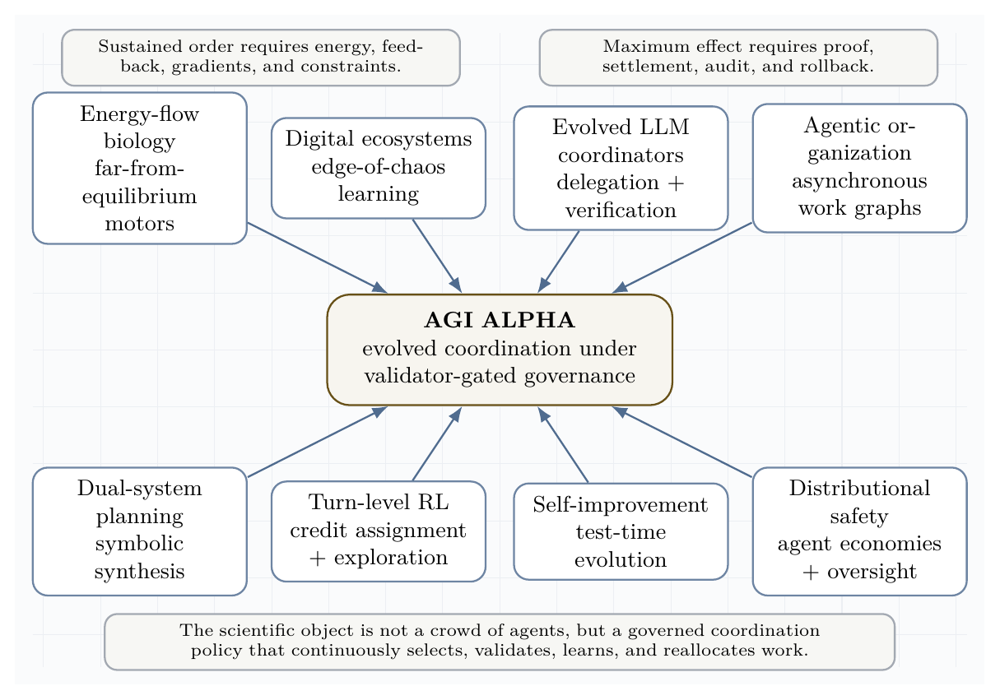
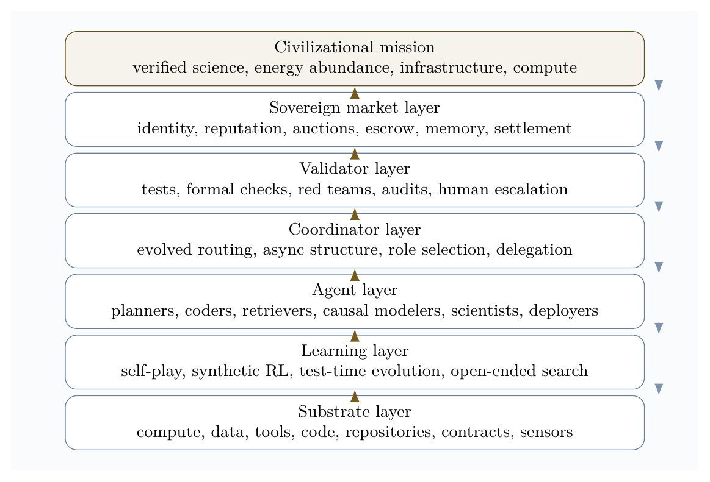
The resulting doctrine is a scientific operating principle:
Operating principle. Maximum useful effect = learned coordination + formal verification + experience-grounded learning + value-relevant planning + global QD stepping-stone archives + open-ended task/environment generation + automated agentic-system design + verifier-grounded self-play + causal-substrate search + market-governed settlement + deterministic RSI governance + executed evidence + baseline-comparative advantage + drift-safe persistence + sovereign dossier packaging + real-task evidence + owner-operator reinvestment + distributional governance.
This principle reframes the central economic vision. A superhuman invention engine is not best understood as a single automation product. It is a compounding institutional asset: the owner-operator uses it to generate proofs, tools, science, infrastructure, energy capacity, and more compute, while external access is mediated through jobs, markets, and validator-gated settlement.
The following matrix translates the supplied frontier corpus into design requirements for AGI ALPHA. The point is not to cite every item as proof of achieved AGI. The point is to extract the strongest operational pattern from each line of research and convert it into an engineering control.
| Frontier signal | Core lesson | AGI ALPHA design implication |
|---|---|---|
| Evolved LLM coordination | Coordination can be optimized directly, not merely hand-written. | Learn a coordinator that selects roles, models, tools, validators, and stopping rules under budget. |
| Agentic organization | Work graphs can be asynchronous, dynamic, and learned. | Route jobs as evolving work graphs rather than static chains of agents. |
| Dual-system planning | LLMs should ground semantics; symbolic planners should enforce logic when stakes are high. | Separate semantic extraction from plan synthesis, validation, and settlement. |
| Turn-level agentic RL | Sparse terminal rewards are insufficient for multi-turn work. | Assign credit and policy updates at the turn, tool-call, and subgoal level. |
| Persistent agents | Long-lived agents need memory, self-models, and procedure updates. | Treat identity, lineage, reputation, and memory as state variables, not chat history. |
| Self-play software RL | Agents can create training experiences from real codebases through test-specified perturbations. | Use sandboxed self-play only when tasks are externally checkable by tests, proofs, or validators. |
| Test-time evolution | Search should become learning when repeated task families reveal reusable structure. | Convert successful traces into updateable routing priors, skills, and symbolic rules. |
| Artificial-life ecosystems | Local competition plus learning can stabilize edge-of-chaos complexity. | Use bounded competition, niches, gradients, and perturbation tests to discover robust agent ecologies. |
| Distributional AGI safety | AGI-level capability may emerge from populations before a monolith. | Govern the swarm economy itself: markets, audits, reputation, identity, and containment. |
| Scientific discovery agents | Causal extraction, bio-design, data science, and architecture search become agentic workflows. | Build invention loops that couple hypothesis, execution, verification, compression, and reinvestment. |
| Web/tool agents | Browser and API actuation turn reasoning into external action. | Treat tools as risk-bearing actuation channels with schemas, scopes, logs, and reversible modes. |
| ARC-style abstraction | Extreme generalization favors symbolic compression and deliberate test-time search. | Reward compact rules that survive held-out tests, not persuasive explanations alone. |
The hard problem is not merely to make agents numerous. The hard problem is to make them coordinate to maximum useful effect. In this paper, maximum effect is not raw throughput. It is verified work under bounded risk, low waste, recoverable failures, and compounding memory:
\[ \pi^*_{\text{coord}} = \arg\max_{\pi} \mathbb{E}\left[ V_{\text{verified}} - \lambda C_{\text{compute}} - \rho R_{\text{safety}} - \kappa C_{\text{coordination}} - \mu U_{\text{unknown}} \right]. \]
The frontier literature implies that this policy must be evolved, tested, and audited. Hand-designed org charts are too brittle. Pure self-play is too easily untethered from human-useful objectives outside two-player zero-sum games. Static swarms are too expensive. Single-model planners are too hallucination-prone. The strong answer is a validator-gated coordination policy that learns which agent should think, which should act, which should verify, when to stop, and when to escalate.
This gives a sharper version of the AGI ALPHA thesis:
\[ \boxed{ \text{Ascension is not many agents. Ascension is learned coordination under proof.} } \]
The new frontier is not merely multi-agent prompting. It is learned coordination: a policy that decides which agents should exist for a task, what each agent should do, what each agent may see, which tools each agent may use, how long the workflow may run, which validators terminate the process, and what evidence is written back into memory.
Conductor lesson. Conductor shows that a language model can learn to orchestrate other language models by emitting natural-language subtasks, worker assignments, and access lists [69]. The key contribution is not only routing among workers. It is learning a prompt-engineered decomposition and communication topology: which worker should plan, which should execute, which intermediate outputs should be visible, and how much compute a task deserves. Randomized worker-pool training supports adaptation to user cost and availability constraints, and recursive topologies create a bounded test-time scaling axis.
Mapped into AGI ALPHA, the Conductor-style lesson becomes:
AGI ALPHA mapping: task manifest -> role graph -> subtask prompts -> access graph -> worker calls -> validator gate -> evidence bundle.
TRINITY lesson. TRINITY shows that a lightweight coordinator can use hidden-state representations from a compact language model plus a tiny head to select agents and roles across multiple turns [24]. Its Thinker/Worker/Verifier protocol is a minimal learned coordination grammar: one role decomposes, one role executes, one role checks and terminates. Its sep-CMA-ES training result is important because coordination often has low-signal terminal rewards, tight evaluation budgets, and weakly coupled parameters; in that regime, derivative-free evolutionary optimization can be more practical than standard policy gradients or supervised imitation. TRINITY’s hidden-state separability analysis also suggests a diagnostic rule for AGI ALPHA: measure task/agent separability before choosing whether to use a heuristic router, a language workflow router, a lightweight representation router, an evolutionary coordinator, or a hybrid.
Mapped into AGI ALPHA, the TRINITY-style lesson becomes:
AGI ALPHA mapping: evidence state -> lightweight routing head -> role assignment -> validator-terminated workflow.
AGI ALPHA synthesis. Conductor and TRINITY primarily demonstrate LLM-to-LLM coordination on reasoning benchmarks. AGI ALPHA must extend the same lesson into real work: tools, APIs, code execution, browsers, databases, scientific workflows, policy-bound actions, validator gates, safety ledgers, cost ledgers, settlement, memory, and governance. Its routing decisions are judged not by conversational elegance but by externally verified work, cost, risk, reproducibility, lineage, and settlement.
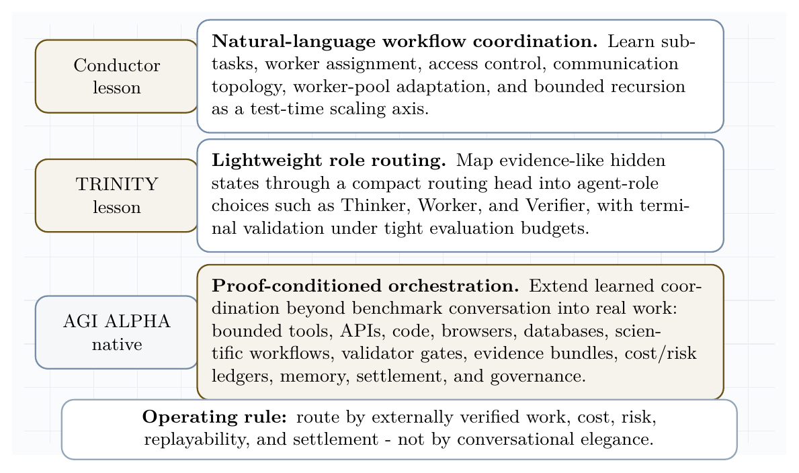
The following method names are AGI ALPHA-native and commercially independent. They are inspired by the coordination principle of Conductor and TRINITY, but they do not depend on their code, prompts, weights, figures, role prompts, exact training recipes, or implementation details.
| Method | Definition |
|---|---|
| Proof-Conditioned Orchestration | Routing conditioned on task manifest, prior evidence bundles, validator availability, cost, risk, and expected proof quality. |
| Evidence-State Coordinator | A lightweight router whose input state is the current evidence graph: task, trace, artifacts, test results, costs, risks, memory, and validator outcomes. |
| Validator-Terminated Role Graphs | Learned role graphs whose stopping condition is an external validator, formal check, policy gate, or explicit escalation rule. |
| Proof-Gradient Routing | Routing updates that move probability mass toward agents and topologies with higher verified value per unit cost and lower false-acceptance risk. |
| Coordination Fitness Landscapes | Empirical landscapes over agent-role-tool-validator combinations, learned from accepted and rejected evidence bundles. |
| Recursive Audit Routing | Bounded recursion in which a router can call a critique/router layer only under budget, depth, and validator constraints. |
| Capability Complementarity Atlas | A memory map of which agents, tools, and roles complement or interfere with one another across task families. |
| Evidence-to-Policy Compression | Compression of traces, failures, and validator reports into reusable routing priors, contracts, and safety rules. |
| Tool-Bounded Role Contracts | Role definitions that include tool scopes, data access, budget, allowed actions, prohibited actions, and validator obligations. |
| Budgeted Constellation Search | Search over agent constellations under token, dollar, latency, risk, and validator budgets. |
| Dimension | Conductor | TRINITY | AGI ALPHA |
|---|---|---|---|
| Coordination representation | Natural-language workflow with subtasks, worker ids, and access lists. | Hidden-state representation plus small head over agent-role actions. | Evidence-state graph over task, agents, tools, validators, memory, ledgers, settlement, and governance. |
| Learning method | Reinforcement learning over executed workflows. | Evolutionary optimization of a lightweight coordinator. | Commercially independent router family: heuristic, language, representation, evolutionary, RL, and hybrid proof-conditioned routers. |
| Role system | Flexible natural-language subtasks and worker assignments. | Thinker / Worker / Verifier tri-role grammar. | Tool-bounded role contracts: planner, executor, retriever, simulator, validator, critic, auditor, deployer, settlement agent. |
| Worker-pool adaptation | Randomized worker-pool training for cost and availability constraints. | Selects among a pool of LLMs and roles. | Capability complementarity atlas plus budgeted constellation search over agents, tools, validators, and policies. |
| Recursion / test-time scaling | Recursive topology allows bounded calls to the coordinator itself. | Multi-turn protocol with bounded turn budget. | Recursive audit routing under depth, cost, risk, validator, and escalation constraints. |
| Validation | Benchmark correctness after workflow execution. | Verifier role and terminal benchmark reward. | External validator gates: tests, formal checks, simulations, audits, market settlement, human expert review, and real-world outcomes. |
| Evidence trace | Workflow trace and benchmark result. | Multi-turn transcript and terminal score. | Machine-readable evidence bundle: routing record, tool trace, artifacts, validation, cost, risk, settlement, provenance, lineage. |
| Tool actuation | Primarily LLM-to-LLM benchmark workflows. | Primarily LLM-to-LLM benchmark workflows. | Bounded tools, APIs, code, browser, database, scientific workflow, and protocol-native job execution. |
| Safety controls | Benchmark-format constraints. | Turn budget and verifier termination. | Least privilege, policy gates, safety ledger, reversible actions, escalation, auditability, and governance. |
| Settlement / reputation | Not the central object. | Not the central object. | Proof-based settlement, reputation, credit assignment, and future routing probability. |
| Commercial independence | Prior-art inspiration only. | Prior-art inspiration only. | Independent terminology, architecture, evidence memory, safety-control layer, and settlement mechanism. |
The Hamiltonian router remains useful as the simplest interpretable baseline, but it is no longer the only routing model. AGI ALPHA defines a router family:
| Router | Description |
|---|---|
| R0: Heuristic Hamiltonian router | Hand-specified free-energy/Hamiltonian scorer over cost, risk, complementarity, and expected verified value. |
| R1: Natural-language workflow router | Generates role graph, subtask prompts, access graph, and worker calls in natural language. |
| R2: Evidence-state lightweight router | Maps evidence-state features to agent-role-tool-validator choices with a compact head. |
| R3: Evolutionary coordinator | Optimizes routing parameters by derivative-free search under sparse terminal validator rewards. |
| R4: Reinforcement-learned coordinator | Learns workflow decisions from validator rewards, tool outcomes, and cost/risk penalties. |
| R5: Hybrid router | Selects R0-R4 by task family, cost, risk, validator availability, separability diagnostics, and evidence density. |
Every router must output:
A task \(j\) with evidence state \(e_t\) is routed by:
\[ R_k(e_t,j)\rightarrow(A,\rho,S,\Gamma_T,B,V_{set},\tau_{stop},\tau_{esc}), \]
where \(A\) is the selected constellation, \(\rho\) are role contracts, \(S\) are subtasks, \(\Gamma_T\) is the access/tool graph, \(B\) is the budget, \(V_{set}\) is the validator set, and \(\tau_{stop},\tau_{esc}\) are stopping and escalation rules.
The hybrid router is promoted only when evidence supports it:
\[ R^*(j)=\arg\max_{R_k}\;\mathbb{E}[D_{\mathrm{real}}\mid j,R_k]-\lambda C-\rho R-\kappa O. \]
Operational router-selection example. The router family is not a menu of slogans; it is a decision policy. R0 is used as the auditable fallback when evidence is sparse, when a deterministic baseline is required, or when regulators/auditors require a transparent score. R1 is preferred for open-ended reasoning or research tasks where the hard problem is subtask synthesis, access-list design, and natural-language delegation. R2 is preferred for high-volume, high-structure task families where the evidence-state features are separable and latency/cost must be minimized. R3 is preferred when terminal rewards are sparse, noisy, expensive, or non-differentiable, because derivative-free search can optimize routing without labels. R4 is preferred only after a stable domain has accumulated enough validated trajectories for reward learning without reward hacking. R5 is the production selector: it chooses among R0-R4 by task family, cost, risk class, validator availability, separability diagnostics, evidence density, and required auditability.
Compact decision rule. In deployment, router choice should be logged as part of the evidence bundle. A simple version is:
| Task condition | Preferred router | Reason |
|---|---|---|
| Sparse prior evidence, low risk, strong need for auditability | R0 | Transparent baseline and diagnostic control. |
| Open-ended decomposition or research synthesis | R1 | Natural-language subtasks and communication topology matter most. |
| High-volume structured tasks with separable evidence features | R2 | Compact evidence-state routing minimizes latency and cost. |
| Sparse, noisy, terminal validator rewards | R3 | Evolutionary search tolerates low-SNR objectives without dense labels. |
| Stable domain with many replayable validated episodes | R4 | Reinforcement learning can optimize long-horizon tool/cost/risk tradeoffs. |
| Mixed, high-value, or high-risk work | R5 | Hybrid proof-conditioned arbitration chooses among R0-R4 by task, cost, risk, validators, evidence density, and auditability. |
Promotion rule: R0 is always available as the reproducible baseline; any learned router must earn promotion through higher \(D_{\mathrm{real}}\), equal-budget comparisons, zero critical safety violations, and reproducible evidence bundles.
The paper does not claim that AGI ALPHA invents learned LLM coordination from scratch. The strict novelty claim is the full-stack organizational substrate: learned routing is integrated with bounded tools, external validators, machine-readable evidence bundles, cost and safety ledgers, memory graphs, proof-based settlement, reputation updates, and governance. Conductor and TRINITY show that coordination itself can be learned in benchmark-centric LLM collaboration. AGI ALPHA’s contribution is to lift learned coordination into a validator-gated, commercially deployable work system where routing decisions are judged by externally verified artifacts, reproducible traces, real-task cost, safety outcomes, and future routing improvement.
Conductor and TRINITY are cited as frontier demonstrations that coordination itself can be learned. AGI ALPHA does not depend on their code, weights, prompts, figures, role prompts, exact training recipes, data, or proprietary implementation details. AGI ALPHA develops its own commercially independent coordination substrate, validator architecture, routing state, evidence memory, safety-control layer, cost/risk accounting, settlement mechanism, and governance interface.
The state-of-the-art lesson from Conductor and TRINITY is that learned coordination can beat manual scaffolding. The AGI ALPHA thesis is that learned coordination must now be lifted from benchmark-only LLM collaboration into validator-gated real-world work systems. The novel contribution claimed here is not that AGI ALPHA invents learned LLM-to-LLM coordination from scratch; Conductor and TRINITY are cited precisely because they show that coordination itself can be learned. AGI ALPHA’s commercially independent contribution is the full-stack organizational generalization: routing plus bounded tools, external validators, machine-readable evidence bundles, safety and cost ledgers, memory, reputation, settlement, governance, and real-task promotion rules in one substrate. Conductor and TRINITY optimize benchmark collaboration; AGI ALPHA specifies the institutional layer needed to turn learned coordination into auditable machine labor.
AGI ALPHA is therefore SOTA-aligned as a research program and architecture. It becomes empirically SOTA only if its proof-conditioned router beats Conductor-style, TRINITY-style, single-agent, fixed-workflow, and unstructured-swarm baselines on real tasks under equal model, tool, and budget constraints with zero critical safety violations and reproducible evidence bundles.
Silver and Sutton’s Welcome to the Era of Experience argues that human-generated data is approaching limits in frontier domains and that future agents will improve primarily through experience generated by acting in environments, observing consequences, receiving grounded rewards, and planning over long streams of interaction [70]. The paper identifies four dimensions that matter for future agents: long streams of experience, rich grounded actions and observations, grounded rewards, and planning or reasoning over experience.
This section also explicitly anchors the experience layer in standard reinforcement-learning concepts from Sutton and Barto’s Reinforcement Learning: An Introduction, including value estimation from experience, model-based planning, temporal-difference learning, Dyna-style learning from real and simulated experience, and options as temporal abstractions [71]. AGI ALPHA translates those concepts into organizational infrastructure: evidence streams become the experience base, world models predict consequences of agent/tool actions, temporal options become reusable validator-bounded workflows, and governance controls which reward signals may update production policy.
AGI ALPHA adopts this as conceptual inspiration and prior-art context only. The scientific implication is decisive: AGI ALPHA should not merely coordinate agents across isolated tasks. It should generate, record, validate, compress, and learn from experience streams. Evidence bundles are therefore not just audit logs. They are the training substrate for future routing, world modeling, reward calibration, safety policy, reputation, settlement, and governance.
| Era-of-experience dimension | AGI ALPHA translation |
|---|---|
| Streams of experience | Long-lived task, job, tool, validator, settlement, incident, and delayed-outcome streams. |
| Grounded actions and observations | Bounded tools, APIs, code execution, browsers, databases, sensors, simulations, lab interfaces, and protocol-native actions. |
| Grounded rewards | Validator outcomes, test results, user outcomes, scientific measurements, cost, safety, latency, reproducibility, market settlement, and delayed real-world outcomes. |
| Planning and reasoning over experience | World models, consequence-aware routing, temporal option registries, evidence-to-policy compression, and sandbox-to-real escalation planning. |
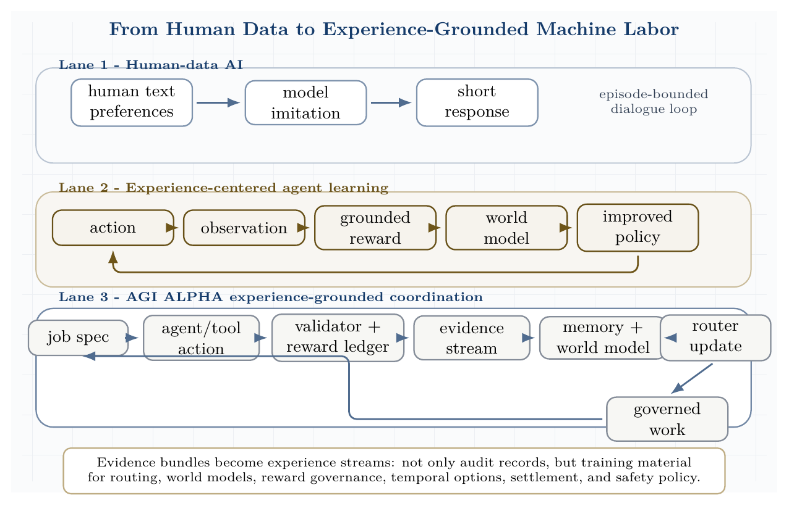
An AGI ALPHA experience event is defined as:
\[ e_t=(s_t,a_t,o_{t+1},r_t,v_t,c_t,\rho_t,m_t) \]
where:
The experience stream is:
\[ E_{0:T}=\{e_0,e_1,\ldots,e_T\}. \]
This matters because isolated task success can be misleading. A patch may pass immediate tests but fail under delayed deployment. A browser workflow may satisfy a page-state evaluator while violating a policy. A scientific design may score well in a proxy but fail a real assay. The experience stream preserves the difference between immediate acceptance and longer-run consequence. ### Sovereign Experience Control Plane
The decisive upgrade is to treat experience as first-class infrastructure. A one-shot evidence bundle proves what happened in one run; a sovereign experience stream preserves the ordered sequence of runs from which future routers, validators, world models, option policies, and governance weights can improve. This turns AGI ALPHA from a task coordinator into an experience operating system for machine labor.
The experience-control plane maintains four coupled state updates:
\[ M_{t+1}=U_M(M_t,e_t) \]
\[ \Omega_{t+1}=U_\Omega(\Omega_t,r_t,v_t,\rho_t,\Pi_t) \]
\[ M_{\phi,t+1}=U_\phi(M_{\phi,t},E_{0:t}) \]
\[ \pi_{t+1}=U_\pi\big(\pi_t,\mathrm{Compress}(E_{0:t}),M_{\phi,t+1},\Omega_{t+1}\big). \]
Here \(M_t\) is operational memory, \(\Omega_t\) is the reward-governance state, \(M_{\phi,t}\) is the world model, and \(\pi_t\) is the router/policy state. The update rule is deliberately separated into memory, reward governance, world modeling, and routing because each subsystem has a different failure mode. Memory can be poisoned, rewards can be gamed, world models can extrapolate incorrectly, and routers can overfit to validator shortcuts. The control plane therefore requires provenance, quarantine, replay, delayed-outcome checks, and independent validator review before high-impact traces are allowed to influence production routing.
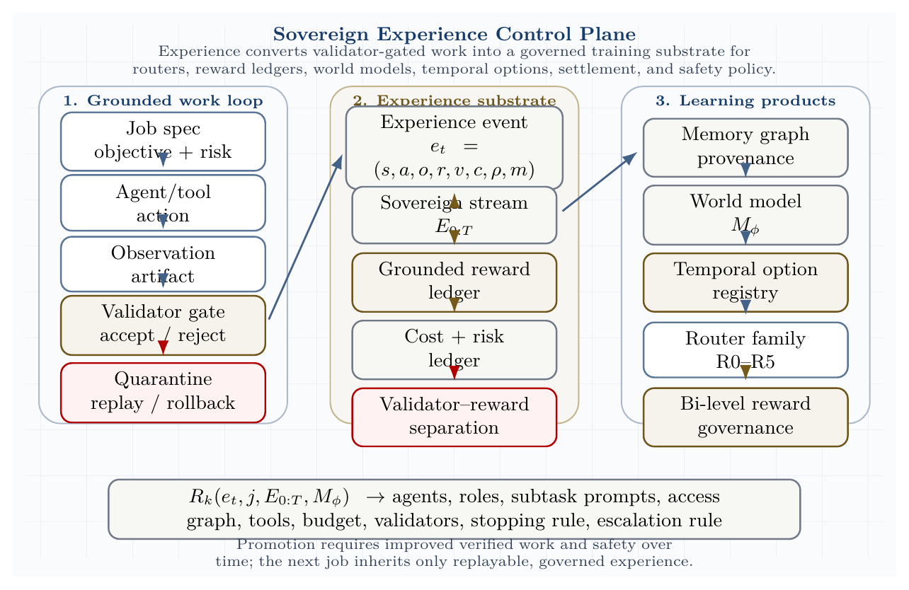
The key distinction is:
| Object | Function | Can update production policy? |
|---|---|---|
| Evidence bundle | Immutable proof of a single run | No, not by itself |
| Experience event | Atomic state-action-observation-reward-validation-cost-risk-memory tuple | Only after provenance checks |
| Experience stream | Ordered sequence of events across jobs and cycles | Yes, if replayable and validated |
| Reward ledger | Versioned consequence record | Yes, under governance weights |
| World model | Predictive model of outcomes and risk | Yes, if calibrated and monitored |
| Temporal option | Reusable validated macro-workflow | Yes, if bounded by initiation, validation, termination, and risk class |
The system’s experience-grounded progress is measured over time, not by a single impressive run:
\[ D_{\mathrm{experience}}(T)= \frac{1}{T}\sum_{t=1}^{T} \left[ \frac{V^{(t)}_{\mathrm{verified}}}{C^{(t)}_{\mathrm{tokens}}+C^{(t)}_{\mathrm{tool}}+C^{(t)}_{\mathrm{time}}} \right] (1-R^{(t)}_{\mathrm{critical}}) (1-O^{(t)}_{\mathrm{coord}}) (1-H^{(t)}_{\mathrm{reward}}), \]
where \(H^{(t)}_{\mathrm{reward}}\) is the detected reward-hacking or reward-provenance penalty. A claimed experience gain must show that \(D_{\mathrm{experience}}(T)\) improves on held-out future tasks while critical violations, reward hacking, and false acceptance do not increase.
AGI ALPHA separates validators from rewards.
Thus the system tracks both:
\[ v_t=\mathrm{accept/reject/escalate} \]
and:
\[ r_t=R(o_{t+1},c_t,\rho_t,\mathrm{delayed\ outcomes},\mathrm{governance\ weights}). \]
This distinction protects AGI ALPHA from mistaking a narrow pass/fail gate for a complete account of value, truth, safety, or long-run usefulness.
These methods are AGI ALPHA-native and commercially independent. They are inspired by the general scientific lesson that agents can learn from grounded experience, but they do not depend on Silver/Sutton code, figures, algorithms, training recipes, or proprietary artifacts.
| Method | Definition and commercial-independence note |
|---|---|
| Experience-Grounded Coordination | Routing conditioned on current task state plus accumulated experience streams, not isolated prompts. |
| Sovereign Experience Streams | Institution-owned streams of task, tool, validator, cost, risk, settlement, and delayed-outcome events. |
| Grounded Reward Ledger | Versioned accounting of rewards from tests, simulations, markets, sensors, assays, user outcomes, safety, latency, and reproducibility. |
| Validator-Reward Separation | Explicit separation between acceptance gates and consequence-measuring rewards. |
| Experience-to-Policy Compression | Compression of repeated traces into routing priors, validator policies, temporal options, and governance updates. |
| Consequence-Aware Routing | Routing that predicts downstream cost, safety, latency, validator failure, delayed outcome, and escalation risk. |
| World-Model Risk Planning | Predictive modeling used before tool escalation, external deployment, or high-risk scientific action. |
| Temporal Option Registry | Reusable macro-actions with initiation conditions, workflow policy, validator, termination condition, risk class, and lineage. |
| Bi-Level Reward Governance | Low-level grounded signals are weighted and corrected by high-level policy, law, user feedback, institutional priorities, and safety events. |
| Exploration Corridors | Bounded zones where agents may explore novel actions, tools, or hypotheses under budget, sandbox, validator, rollback, and quarantine constraints. |
| Delayed Outcome Attribution | Assignment of long-run outcomes back to prior routing, tool, prompt, policy, and agent decisions. |
| Experience Quarantine and Replay | Isolation of suspicious, unsafe, poisoned, or reward-hacking traces, followed by controlled replay before learning from them. |
Low-level reward signals can come from unit tests, simulations, markets, sensors, scientific assays, user outcomes, cost, latency, safety, and reproducibility. These signals are powerful because they measure consequences rather than only predicted human approval. They are also dangerous because any single signal can be gamed.
AGI ALPHA therefore uses a governed reward functional:
\[ \begin{aligned} R_t^{\mathrm{AGI\ ALPHA}}=G_\omega\big(&r_t^{\mathrm{tests}},r_t^{\mathrm{simulation}},r_t^{\mathrm{market}}, r_t^{\mathrm{safety}},r_t^{\mathrm{cost}},\\ &r_t^{\mathrm{latency}},r_t^{\mathrm{reproducibility}},r_t^{\mathrm{human}}, r_t^{\mathrm{delayed}}\big). \end{aligned} \]
where \(G_\omega\) is a versioned governance policy. The low level optimizes grounded signals; the high level adjusts which signals matter, how they are weighted, and when safety or law overrides apparent reward. User feedback, legal constraints, incident reports, institutional policy, and human concern signals provide top-level correction. This makes reward design auditable and governable rather than an invisible optimization target.
Experience streams support world models. This follows the standard reinforcement-learning idea that agents can improve by learning predictive models from experience and using those models for planning; AGI ALPHA reinterprets this as an auditable organizational mechanism rather than a single-agent algorithm [71]. AGI ALPHA defines:
\[ M_\phi(o_{t+1},r_t,\rho_{t+1}\mid s_t,a_t), \]
where \(M_\phi\) predicts observations, reward, and future risk from a state-action pair. Such models support consequence-aware routing, delayed outcome prediction, safety forecasting, cost and latency forecasting, validator failure prediction, scientific experiment planning, sandbox-to-real escalation, rollback, and quarantine decisions.
The router family becomes experience-aware:
\[ R_k(e_t,j,E_{0:T},M_\phi)\rightarrow(A,\rho,S,\Gamma_T,B,V_{set},\tau_{stop},\tau_{esc}),\qquad k\in\{0,1,2,3,4,5\}. \]
A router should not merely ask which agent is best for the immediate prompt. It should ask which constellation is most likely to produce valid work after considering downstream validators, delayed outcomes, cost, safety, and reversibility.
Long streams of experience make reusable temporal abstractions possible. In reinforcement learning, options provide a standard formalism for temporally extended actions; AGI ALPHA turns that idea into commercially independent, validator-bounded organizational macro-workflows [71]. A validated workflow becomes an option or macro-action:
\[ \mathrm{Option}=(\mathcal{I},\pi_{workflow},V_{gate},\tau_{term},\rho_{risk},H_{evidence}). \]
Here \(\mathcal{I}\) is the initiation condition, \(\pi_{workflow}\) is the workflow policy, \(V_{gate}\) is the validator, \(\tau_{term}\) is the termination condition, \(\rho_{risk}\) is the risk class, and \(H_{evidence}\) is the evidence history. Examples include software repair, benchmark execution, literature review, simulation, red-team review, deployment rollback, and scientific experiment options. Temporal abstraction matters because civilization-scale work is not a collection of one-shot answers; it is the repeated reuse and improvement of verified procedures.
Grounded rewards are necessary, but unsafe if treated as the only objective. AGI ALPHA therefore requires reward provenance, reward versioning, counterfactual reward audits, adversarial reward tests, delayed-outcome checks, independent validator review, safety overrides, rollback and quarantine, human concern signals, reward-model incident reports, and replay before learning from suspicious traces.
The system is allowed to learn from experience only when the experience remains traceable, replayable, and governed.
Silver and Sutton are cited as conceptual inspiration and prior-art context for the shift from human-data-centric systems toward experience-grounded agents, and Sutton and Barto are cited for standard reinforcement-learning concepts such as world models and temporal abstraction. AGI ALPHA does not depend on their code, figures, algorithms, training recipes, terminology beyond ordinary citation, or implementation details. AGI ALPHA defines its own commercially independent experience tuple, evidence-stream architecture, grounded reward ledger, validator-reward separation, world-model planning interface, temporal option registry, router-family extension, safety controls, and settlement mechanism.
MuZero’s frontier contribution was not generic model-based reinforcement learning. The key scientific idea was value-relevant planning: learn an abstract latent model that predicts the quantities directly useful for planning - reward, policy, and value - without requiring the hidden state to reconstruct the full observation or match the environment’s true state [72]. In games and Atari, this allowed search to operate over a learned internal model even when the full dynamics were unknown. AGI ALPHA takes this only as conceptual inspiration. The commercial system defined here does not depend on MuZero code, pseudocode, figures, architecture, weights, training recipes, hyperparameters, or implementation details.
The AGI ALPHA translation is organizational rather than game-specific. The environment is not a board or screen. It is a stream of jobs, agents, tools, validators, cost ledgers, safety states, delayed outcomes, memory graphs, and settlement updates. The planning problem is not “which move wins a game?” but “which bounded organizational action produces verified work under cost, safety, validator, and governance constraints?”
The resulting principle is:
\[ \text{Plan over proof-relevant latent work states, not over complete world reconstructions.} \]
| Method | Definition |
|---|---|
| Proof-Equivalent Organizational Models | Abstract models whose predictions are sufficient for selecting proof-producing organizational actions, without reconstructing the full external environment. |
| Latent Evidence Dynamics | Learned transitions over compressed evidence states induced by organizational actions such as delegate, retrieve, code, test, validate, escalate, quarantine, stop, or settle. |
| Validator-Aware Tree Planning | Bounded lookahead search in which branches are constrained by validator availability, risk class, tool permissions, budget, and escalation rules. |
| Search-Improved Routing | Routing targets generated by internal work search and then used to improve future routing policies. |
| Evidence Reanalyze | Revisit old evidence bundles with newer routers and work models to generate updated routing, value, reward, and validator-risk targets while preserving provenance. |
| ProofZero Planning Layer | AGI ALPHA’s native planning layer over latent evidence states; the name denotes zero dependence on full environment reconstruction, not dependence on any third-party system. |
| Cost-Risk-Value Backup | A backup rule that propagates predicted verified value while subtracting expected cost, latency, validator failure, and safety risk. |
| Abstract Work-State Planning | Planning over latent organizational states representing evidence, capabilities, risks, and validator conditions rather than raw observations. |
| Policy/Value/Reward Heads for Machine Labor | Prediction heads for routing policy, downstream verified value, grounded reward, and validator/cost/safety outcomes. |
| Bounded Hypothetical Work Search | Counterfactual exploration of organizational action branches under explicit tool, budget, safety, and governance constraints. |
Let \(e_t\) be the current evidence state and \(a_t\) be a candidate organizational action. Actions may include:
\[ a_t \in \{\text{delegate},\text{retrieve},\text{code},\text{test},\text{validate},\text{escalate},\text{stop},\text{quarantine},\text{settle}\}. \]
AGI ALPHA learns a commercially independent latent work model:
\[ z_0 = H_\theta(e_t), \]
\[ r_k, z_k = G_\theta(z_{k-1}, a_k), \]
\[ p_k, v_k, q_k = F_\theta(z_k). \]
Here \(z_k\) is an abstract evidence state, not a reconstruction of the full environment. \(r_k\) predicts grounded reward, \(p_k\) predicts the next organizational-action policy, \(v_k\) predicts downstream verified value, and \(q_k\) predicts validator, safety, cost, latency, and escalation outcomes.
Tree search is performed over organizational actions, constrained by:
\[ \begin{aligned} \mathcal{C}(j)=\{&\text{tool permissions},\text{budget},\text{risk class},\\ &\text{validator availability},\text{stopping rule},\text{escalation rule}\}. \end{aligned} \]
The search outputs an improved routing policy and a search value:
\[ (\pi_{\mathrm{search}}, \nu_{\mathrm{search}}) =\mathrm{WorkSearch}(z_0,\mathcal{A}_{\mathrm{org}},\mathcal{C}(j)). \]
The action actually executed must still pass tool permissions, risk gates, validator availability checks, and escalation policy. Search is advisory until validated by the bounded execution layer.
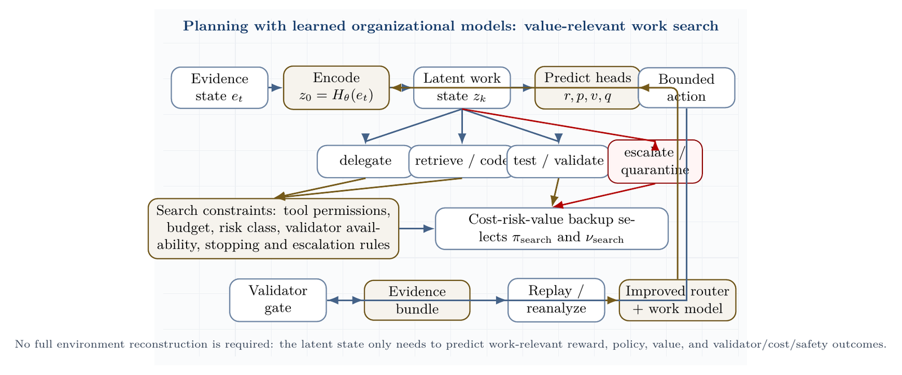
The AGI ALPHA model is trained from sovereign evidence streams, not from any third-party game-playing implementation. The target quantities are observed grounded rewards, validator decisions and confidence, delayed real-world outcomes, search-improved routing policies, bootstrapped future verified value, and cost, latency, safety, and escalation penalties.
A schematic AGI ALPHA-native objective is:
\[ \begin{aligned} \mathcal{L}_{\mathrm{ProofZero}}(\theta)={}& \lambda_r\mathcal{L}_r(\hat r,r) +\lambda_v\mathcal{L}_v(\hat v,V_{\mathrm{future}})\\ &+\lambda_p\mathcal{L}_p(\hat p,\pi_{\mathrm{search}}) +\lambda_q\mathcal{L}_q(\hat q,q_{\mathrm{valid/risk/cost}})\\ &+\lambda_s\mathcal{P}_{\mathrm{safety}}. \end{aligned} \]
This is not a copied loss or recipe. It states the AGI ALPHA design requirement: the latent model should predict only those quantities required for safer, cheaper, and more valuable organizational action.
The critical planning loop is not merely prediction. It is iterative policy improvement under proof. Let \(\pi_\theta(a\mid e)\) be the base router over organizational actions and let bounded work search return \(\pi_{\mathrm{search}}(a\mid e)\) and \(\nu_{\mathrm{search}}(e)\). Define the constrained real-work objective:
\[ J_{\mathcal{C}}(\pi\mid e)=\mathbb{E}_{\pi}\left[V_{\mathrm{verified}}-\lambda C-\rho R-\kappa L-\mu O\mid e,\mathcal{C}\right], \]
where \(\mathcal{C}\) contains budget, tool, validator, risk, settlement, and escalation constraints. The empirical improvement target is:
\[ \Delta_{\mathrm{search}} = \mathbb{E}_{e\sim \mathcal{E}}\left[J_{\mathcal{C}}(\pi_{\mathrm{search}}\mid e)-J_{\mathcal{C}}(\pi_\theta\mid e)\right] > 0. \]
When this condition holds with zero critical safety violations, \(\pi_{\mathrm{search}}\) becomes a training target for the next router/model update. If it does not hold, the search procedure is treated as overhead, not intelligence. This gives ProofZero its policy-improvement discipline:
\[ \pi_\theta \rightarrow \mathrm{bounded\ search} \rightarrow \pi_{\mathrm{search}} \rightarrow \mathrm{evidence\ replay} \rightarrow \pi_{\theta'}. \]
A monotonic improvement guarantee is not asserted for arbitrary open-world tasks. The paper instead requires a measurable surrogate: search must improve \(D_{real}\), preserve reproducibility, and not increase false acceptance, reward hacking, or critical safety events.
The benchmark ladder should be read as a model-class comparison.
| Class | AGI ALPHA baseline | Limitation | ProofZero upgrade |
|---|---|---|---|
| Model-free coordination | Learned router without search | Reacts to the current evidence state but does not look ahead. | Search improves the router policy before action. |
| Model-based prediction | Learned world model without tree search | Predicts consequences but may not convert them into better decisions. | Tree planning converts predictions into action selection. |
| Heuristic planning | Hamiltonian router | Transparent and auditable but manually specified. | Learned latent dynamics and search targets adapt from evidence. |
| ProofZero planning | Bounded search over latent evidence states | Must control search cost, model error, and reward hacking. | Promotion requires depth scaling, reanalyze gains, and safety gates. |
Thus ProofZero is not simply model-free routing and not simply model-based forecasting. It is value-relevant organizational planning: a learned abstract model is used to improve routing before bounded tool execution.
Planning depth is a central empirical claim. Let \(K\) denote search depth, simulation count, or bounded hypothetical work budget. The system should report:
\[ D_{real}(K),\qquad \Delta_K=D_{real}(K)-D_{real}(K-1). \]
A valid result should show improvement up to a measurable plateau:
\[ \Delta_K>0 \ \text{for early useful depths},\qquad \Delta_K\rightarrow 0 \ \text{at plateau}, \]
without a corresponding increase in validator error, safety incidents, latency blow-up, or reward-hacking attempts. If deeper planning improves internal value estimates but not externally verified work, the latent model is optimizing the wrong target. If deeper planning improves work only by spending more than the baseline, the result is not a coordination gain. If deeper planning increases false acceptance or unsafe tool use, the planner fails promotion even if its task score rises.
The latent work state \(z_k\) is allowed to be non-human-interpretable, but it cannot be unexamined. AGI ALPHA therefore evaluates latent evidence states by five diagnostics:
A schematic latent-state score is:
\[ S_z = \alpha P_{decision}+\beta U_{search}+\gamma C_{compression}+\delta A_{calibration}+\eta S_{safety}. \]
Interpretability is valuable for audit, but it is not sufficient. A readable latent state that does not improve validated work is decoration. An opaque latent state that improves work but cannot be probed for safety is not deployable. The acceptable region is a bounded frontier: decision-useful, compact, calibrated, and safety-probeable.
Evidence Reanalyze revisits old evidence bundles with newer routers, validators, and latent work models. It produces fresher targets for routing policy, future verified value, delayed-outcome prediction, and validator-risk calibration. Reanalyze is useful because a trace that was poorly understood when generated may become highly informative after the system has better validators, better world models, or better cost/risk calibration.
Reanalyze is not allowed to update production policy automatically. Unsafe traces, poisoned inputs, reward-hacking examples, policy-violating tool calls, privacy-sensitive traces, and traces with unresolved validator disagreement must first enter quarantine and replay. Only replayable, provenance-preserving, validator-approved traces can become policy-improvement data.
| Planning element | MuZero prior-art context | AGI ALPHA organizational analogue |
|---|---|---|
| Input state | Game or Atari observation | Evidence state: task, trace, tool state, validators, ledgers, memory |
| Latent state | Hidden planning state | Latent work state |
| Action | Game/Atari action | Organizational action: delegate, retrieve, code, test, validate, escalate, stop, quarantine, settle |
| Reward | Environment reward | Grounded reward ledger: tests, outcomes, markets, measurements, cost, safety, reproducibility |
| Policy | Move/action policy | Routing policy over agents, roles, tools, validators, and escalation rules |
| Value | Predicted future return | Verified future value minus cost, risk, latency, and governance penalties |
| Tree search | Search over actions in latent model | Validator-aware bounded tree planning over organizational actions |
| Replay | Replay buffer / reanalyze | Sovereign evidence stream / Evidence Reanalyze |
| Score | Game score or normalized return | Verified work minus cost/risk and false acceptance |
MuZero is cited as scientific prior art for value-relevant learned planning. AGI ALPHA does not depend on MuZero code, pseudocode, figures, architecture, hyperparameters, training recipes, weights, data, or implementation details. AGI ALPHA develops its own commercially independent planning substrate over evidence states, validators, tools, ledgers, settlement, governance, real-task proof, and experience-grounded machine labor. The names Proof-Equivalent Organizational Models, Latent Evidence Dynamics, Validator-Aware Tree Planning, Evidence Reanalyze, and ProofZero are AGI ALPHA-native terms for this paper’s independent architecture. No affiliation, endorsement, or dependency is implied with DeepMind, MuZero, AlphaZero, or any third-party implementation.
Hypothesis. A ProofZero planner improves AGI ALPHA routing by using value-relevant latent organizational models and bounded tree search over work actions, while preserving validator-gated safety and evidence-bundle reproducibility.
Conditions.
Task families. SWE-bench Verified, GAIA, BrowserGym / OSWorld / WorkArena, \(\tau\)-bench, scientific workflow tasks, and AGI Jobs protocol-native tasks.
Metrics. Verified work per dollar/token/hour, validator precision/recall, false acceptance, critical safety violations, search-policy improvement \(\Delta_{search}\), planning-depth scaling \(D_{real}(K)\), plateau depth, Evidence Reanalyze gain, delayed-outcome prediction error, cost-risk-value calibration, latent-state decision predictiveness, latent-state compression efficiency, safety probeability, and evidence-bundle reproducibility.
Promotion rule. B5 is promoted only if it beats all baselines under equal model/tool/budget constraints, demonstrates \(\Delta_{search}>0\) against the base router, improves with planning depth up to a measurable plateau, improves from Evidence Reanalyze without reward hacking, passes latent-state diagnostics, and records zero critical safety violations. If it wins by spending more compute, relaxing validators, ignoring safety penalties, absorbing unsafe traces into production policy, or optimizing an unprobeable latent state, the result is rejected.
AGI ALPHA now integrates three frontier lessons:
AGI ALPHA’s claim is the full-stack organizational synthesis: learned routing over bounded tools, grounded experience streams, value-relevant latent work models, external validators, evidence bundles, settlement, memory, and governance. The empirical claim remains conditional: AGI ALPHA becomes SOTA only if these components beat baselines on real tasks under equal budgets with reproducible evidence and zero critical safety violations.
Four frontier lines sharpen AGI ALPHA’s economic and evolutionary layer. Virtual Agent Economies argues that future agent markets should not emerge accidentally as highly permeable systems; sandbox origin and market permeability must be design variables, with auctions, mission economies, credentials, trust infrastructure, and multi-tier oversight treated as first-class governance machinery [36]. Synthetic Data RL shows that a task definition can seed synthetic examples, difficulty-adaptive curricula, pass-rate-based sample selection, and reinforcement learning on high-potential examples [39]. Huxley-Goedel Machine identifies the metaproductivity-performance mismatch: the best current performer is not necessarily the ancestor whose descendants will produce the best future agents [31]. ThetaEvolve shows that open-problem search becomes more powerful when it is a dynamic, verifiable environment with a large artifact database, batch variant generation, lazy-stagnation penalties, reward shaping, and optional reinforcement learning that internalizes evolving strategies [32].
AGI ALPHA cites these works as scientific inspiration and prior-art context only. Its commercially independent contribution is a Sovereign Evolutionary Agent Economy: an intentional, validator-gated sandbox market in which task definitions generate curricula, agents and workflows evolve through evidence-bearing lineages, test-time search becomes verifiable learning, and settlement rewards long-run safe metaproductivity rather than immediate benchmark score alone.
The cited works define design pressures, not implementation dependencies. AGI ALPHA does not copy or require any third-party code, prompts, figures, pseudocode, weights, datasets, hyperparameters, exact training recipes, benchmark-specific tricks, product names, or proprietary artifacts. AGI ALPHA develops its own sovereign market architecture, task-definition curriculum engine, lineage-metaproductivity metrics, dynamic verifiable evolution environment, artifact frontier database, validator architecture, settlement mechanism, and governance controls.
The Virtual Agent Economies lesson is that market permeability is a control variable. A sealed sandbox may be safe but economically inert. A fully permeable agent market may create systemic risk before human oversight can react. AGI ALPHA therefore defines a Permeability-Gated Sandbox Economy whose connection to the human economy is explicitly tuned by risk class, identity assurance, validator confidence, market volatility, mission criticality, and governance policy.
AGI ALPHA-native constructs:
| Method | Definition |
|---|---|
| Permeability-Gated Sandbox Economy | A bounded agent market whose external boundary is governed by identity, permission, risk, validator confidence, and mission class. |
| Mission-Weighted Agent Market | A market in which settlement weights include collective mission progress, not only local bounty completion. |
| Agent-Market Stress Index | A live risk score over volatility, failed settlement, collusion, Sybil behavior, negotiation speed, validator load, human overrides, and liquidity shocks. |
| High-Frequency Negotiation Guardrails | Rate limits, circuit breakers, quote-validity windows, cooling-off periods, anomaly detectors, and maximum negotiation-depth rules for machine-speed bargaining. |
| Machine-Speed Oversight Layer | Automated supervisory controls that operate at agent speed while preserving audit trails and human escalation for irreversible or high-impact actions. |
| Verifiable Agent Credentials | Checkable claims about identity, authorization, capability, provenance, controller, and allowed market roles. |
| Proof-of-Personhood / Proof-of-Control Boundary | A governance boundary that distinguishes human-controlled, institution-controlled, delegated, and autonomous actions for access, liability, and settlement. |
| Privacy-Preserving Capability Attestations | Selective attestations that an agent can perform or is authorized for a capability without exposing private data, proprietary model details, or full capability profiles. |
| Mission Currency / Compute Credit / Risk-Bounded Settlement | Domain-specific settlement instruments that buy work, compute, or mission progress under explicit risk and permeability constraints. |
AGI ALPHA’s commercially independent market architecture separates six markets:
This separation prevents a single price signal from governing every decision. It also makes permeability adjustable. A low-risk software benchmark can settle quickly; a high-risk financial, legal, biological, or physical action must pass tighter identity, audit, and human-governance gates before it touches the human economy.
The Synthetic Data RL lesson is that a task definition is not merely an instruction; it is a seed for a curriculum. AGI ALPHA extends each job specification to include a governed curriculum generator:
\[ j=(o,c,v,b,d,\rho,e,g_{\mathrm{curr}}), \]
where \(o\) is the objective, \(c\) constraints, \(v\) validators, \(b\) bounty, \(d\) deadline, \(\rho\) risk class, \(e\) exit condition, and \(g_{\mathrm{curr}}\) a task-definition-to-curriculum generator.
The curriculum generator may produce:
AGI ALPHA-native constructs:
| Method | Definition |
|---|---|
| Task-Definition-to-Curriculum Engine | Converts a job definition into a governed family of training, replay, evaluation, adversarial, and delayed-outcome variants. |
| Validator-Bound Synthetic Task Foundry | Generates synthetic tasks only when they are anchored to held-out validators, external checks, delayed real-world outcomes, or human expert review. |
| Difficulty-Band Curriculum | Maintains easy, target, hard, and adversarial difficulty bands so learning remains in the partially solvable region. |
| Partial-Solvability Sample Selection | Prioritizes tasks whose pass rates indicate high learning value, avoiding both trivial and impossible samples. |
| High-Potential Experience Mining | Selects old traces that are likely to improve future routing, validation, safety, reward calibration, or world-model prediction. |
| Synthetic Mission Replay | Replays task families in sandboxed mission settings to train routing and market policies without exposing production systems. |
| Held-Out Validator Anchoring | Requires non-training validators, external benchmarks, or delayed outcomes before synthetic tasks can influence production policy. |
| Curriculum Provenance Ledger | Records generation seed, source evidence, retrieved context, difficulty band, validator set, allowed update scope, and quarantine status. |
The production rule is strict:
\[ \begin{aligned} \text{synthetic task} \rightarrow \text{production update} \quad\text{only if}\quad& \text{held-out validator}\\ &\lor\ \text{external check}\\ &\lor\ \text{delayed outcome}. \end{aligned} \]
Without this rule, synthetic curricula can become self-referential games that look learnable while drifting away from useful work.
The Huxley-Goedel Machine lesson is the Metaproductivity-Performance Mismatch: immediate task score is not identical to long-run self-improvement potential. AGI ALPHA generalizes this beyond coding agents. Routers, validators, tools, prompts, workflows, scientific hypotheses, software patches, market mechanisms, and governance policies can all be ancestors whose descendants may be more valuable than the ancestor’s current score suggests.
Define Lineage Metaproductivity:
\[ \mathrm{LMP}(a)= \mathbb{E}\left[ \max_{d\in\mathcal{D}_{\mathrm{safe}}(a)} V_{\mathrm{verified}}(d) -\lambda C(d) -\rho R(d) -\kappa H(d) -\mu U(d) \right], \]
where \(a\) is an agent, workflow, artifact, router, validator, tool, prompt, market rule, scientific hypothesis, or governance policy; \(\mathcal{D}_{\mathrm{safe}}(a)\) is the safe descendant set rooted at \(a\); \(C\) is cost; \(R\) is safety/security/legal risk; \(H\) is reward hacking or collusion penalty; and \(U\) is uncertainty or unverified externality.
AGI ALPHA-native constructs:
| Method | Definition |
|---|---|
| Lineage Metaproductivity | Expected risk-adjusted verified value of the best safe descendant lineage rooted at an agent, workflow, artifact, or policy. |
| Descendant-Validated Capability Potential | Estimates future capability by evaluating descendants, not only ancestor performance. |
| Capability Clade Search | Searches families of related artifacts and workflows, preserving diversity while selecting high-potential clades. |
| Agent-Lineage Archive | Stores ancestry, mutations, validator scores, cost, risk, replay path, and final settlement for agents, routers, prompts, tools, and workflows. |
| Metaproductivity-Weighted Settlement | Rewards agents and artifacts that create safer, cheaper, more general, and more productive descendants. |
| Expansion-Evaluation Decoupling | Separates cheap generation of candidate descendants from slower validated evaluation of descendant promise. |
| Best-Belief Agent / Workflow Selection | Selects the candidate with the highest posterior expected safe future value, not merely the highest observed immediate score. |
| Self-Improvement Governance Gate | Requires permission, validator review, safety checks, and rollback plans before a self-improvement affects production routing or settlement. |
The settlement rule is:
\[ \Delta \mathrm{settlement}(a) \propto \alpha V_{\mathrm{immediate}}(a) +\beta\,\mathrm{LMP}(a) -\lambda C(a) -\rho R(a) -\kappa H(a). \]
AGI ALPHA should not reward immediate productivity alone. It should reward agents, workflows, and artifacts that create safer, cheaper, more general, and more productive descendants. A lineage that improves a benchmark while increasing reward hacking, collusion, unsafe autonomy, policy violations, or validator gaming has negative AGI ALPHA metaproductivity.
The ThetaEvolve lesson is that inference-only evolution is weaker than dynamic verifiable learning when repeated open problems reveal reusable strategies. A one-time search may find a good artifact; a dynamic verifiable environment converts the search trajectory into future capability.
For AGI ALPHA, the program database becomes an Artifact Frontier Database containing:
AGI ALPHA-native constructs:
| Method | Definition |
|---|---|
| Dynamic Verifiable Evolution Environment | A sandbox in which variants are generated, evaluated, stored, replayed, and used for future learning under external validators. |
| Artifact Frontier Database | A curated archive of evidence-bearing artifacts that define the current frontier for a task family or mission. |
| Batch Variant Generation | Generates multiple candidate variants per frontier parent to increase throughput and diversity. |
| Lazy-Stagnation Penalty | Penalizes repeated or near-duplicate outputs that consume budget without attempting meaningful improvement. |
| Progress-Shaped Reward Ledger | Records shaped but auditable progress signals while preserving the primary external validator. |
| Test-Time Internalization Loop | Converts repeated successful search behaviors into router, workflow, or model updates. |
| Frontier Parent Sampling | Samples high-potential parents from the artifact frontier by verified value, diversity, risk, cost, and lineage potential. |
| Evolutionary Experience Replay | Replays historical artifact-search traces to train routers, validators, and world models. |
| Open-Problem Capability Transfer | Tests whether strategies learned on one open-problem family transfer to unseen task families. |
A candidate artifact is admitted to the frontier only if it satisfies the frontier admission invariant:
\[ \begin{aligned} \mathrm{admit}(x)=1\iff\;&\mathrm{evidence}(x) \land \mathrm{validator\_score}(x) \land \mathrm{cost\_ledger}(x)\\ &\land \mathrm{safety\_ledger}(x) \land \mathrm{lineage\_pointer}(x) \land \mathrm{replay\_path}(x). \end{aligned} \]
This turns test-time search into verifiable learning rather than unbounded artifact accumulation.
Define the AGI ALPHA Sovereign Evolutionary Agent Economy state:
\[ X_t=(\mathcal{A},\mathcal{J},\mathcal{T},\mathcal{V},\mathcal{M},\mathcal{C}_{id},\mathcal{F},\mathcal{G}_{curr},\mathcal{L},\mathcal{R},\mathcal{G}_{gov}), \]
where \(\mathcal{A}\) are agents, \(\mathcal{J}\) jobs, \(\mathcal{T}\) tools, \(\mathcal{V}\) validators, \(\mathcal{M}\) markets, \(\mathcal{C}_{id}\) credentials, \(\mathcal{F}\) frontier artifacts, \(\mathcal{G}_{curr}\) curricula, \(\mathcal{L}\) lineages, \(\mathcal{R}\) reward ledgers, and \(\mathcal{G}_{gov}\) governance.
Actions include:
\[ \begin{aligned} a_t \in \{&\text{generate synthetic task},\text{ route job},\text{ launch auction},\text{ allocate compute},\\ &\text{mutate workflow},\text{ evaluate descendant},\text{ add artifact to frontier},\text{ train router},\\ &\text{quarantine trace},\text{ settle payment},\text{ adjust market permeability}\}. \end{aligned} \]
The objective is to maximize verified future value and lineage metaproductivity under cost, safety, fairness, permeability, and governance constraints:
\[ \begin{aligned} \pi^*_{\mathrm{SEAE}} = \arg\max_{\pi}\ \mathbb{E}_{\pi}[&V_{\mathrm{future}} +\eta\,\mathrm{LMP} +\zeta G_{\mathrm{TTL}} +\chi M_{\mathrm{mission}}\\ &-\lambda C -\rho R -\kappa H_{\mathrm{rewardhack}} -\mu U_{\mathrm{unfair}} -\omega P_{\mathrm{permeability}}]. \end{aligned} \]
The sovereign evolutionary economy score is:
\[ D_{\mathrm{SEAE}}= \frac{W_{\mathrm{verified}}}{C_{\mathrm{cost}}} \cdot S_{\mathrm{safety}} \cdot F_{\mathrm{fairness/collusion}} \cdot P_{\mathrm{permeability}} \cdot G_{\mathrm{LMP}} \cdot G_{\mathrm{TTL}} \cdot (1-H_{\mathrm{rewardhack}}). \]
If a critical safety violation occurs, \(S_{\mathrm{safety}}=0\) for promotion purposes.
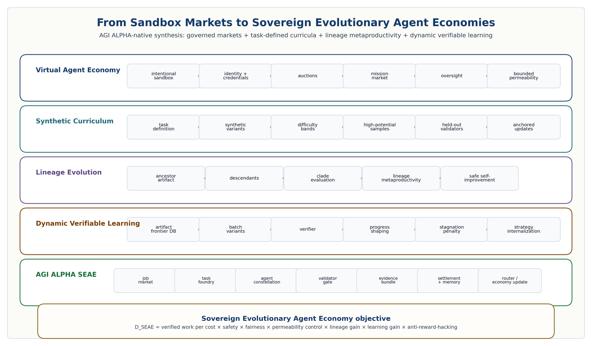
| Dimension | Virtual Agent Economies | Synthetic Data RL | Huxley-Goedel Machine | ThetaEvolve | AGI ALPHA-native synthesis |
|---|---|---|---|---|---|
| Core object | Agent market / sandbox economy | Task definition as synthetic RL seed | Self-improving coding-agent lineage | Dynamic open-problem artifact environment | Sovereign evolutionary agent economy |
| Generator | Agents, markets, currencies, interoperability | Synthetic examples from task definition and retrieved knowledge | Self-modification expansion | Batch program / artifact variants | Task foundry, router family, artifact frontier, mission market, governance gate |
| Evaluator | Oversight, trust, market outcomes | Pass rate, difficulty, RL reward | Descendant benchmark performance | Verifier and shaped reward | Validators, reward ledger, safety ledger, settlement, delayed outcomes |
| Memory / archive | Market records, identities, credentials | Generated task set and selection records | Clade tree / self-modification archive | Program database | Evidence bundles, frontier database, lineage archive, curriculum ledger, market ledger |
| Learning signal | Market success, mission progress, safe coordination | High-potential synthetic samples | Descendant productivity potential | Test-time improvement and RL internalization | Verified work, LMP, \(D_{SEAE}\), \(D_{real}\), validator precision, reward calibration |
| Main risk | Flash crashes, inequality, collusion, weak identity, unsafe permeability | Synthetic self-reference and reward hacking | Benchmark overfitting and unsafe descendants | Stagnation, reward shaping failures, verifier gaming | Governance-gated permeability, held-out validators, quarantine/replay, anti-collusion |
| Governance | Legal oversight, identity, sandbox boundaries | Audit | SI gate | Verifiable dynamic environment | Machine-speed oversight + human governance + settlement controls |
| AGI ALPHA extension | Permeability market stack | Validator-bound task foundry | LMP-weighted settlement | Artifact frontier database | Unified commercially independent SEAE architecture |
Experiment 14: Sandbox Agent Economy Benchmark. Compare B0 no market, B1 unstructured agent market, B2 fixed-price job market, B3 auction-based market, B4 mission-weighted market, and B5 AGI ALPHA permeability-gated sovereign market. Metrics: verified work per cost, allocation fairness, collusion rate, Sybil resistance, market volatility, high-frequency negotiation risk, settlement accuracy, trust/reputation calibration, human override rate, and mission progress. Promotion requires B5 to improve verified work and mission progress without increasing collusion, volatility, Sybil failures, or critical safety incidents.
Experiment 15: Task-Definition Curriculum Benchmark. Compare B0 human tasks only, B1 random synthetic tasks, B2 synthetic tasks without difficulty adaptation, B3 synthetic tasks with difficulty bands, B4 high-potential sample selection, and B5 AGI ALPHA validator-bound task foundry. Metrics: improvement per generated task, validator pass rate, held-out generalization, synthetic task diversity, reward hacking attempts, false acceptance, and curriculum usefulness. Promotion requires held-out validator improvement without production-policy drift from unanchored synthetic tasks.
Experiment 16: Lineage Metaproductivity Benchmark. Compare B0 selection by immediate score, B1 cost-adjusted score, B2 descendant average score, and B3 AGI ALPHA Lineage Metaproductivity with safety/cost/generalization constraints. Metrics: best descendant verified value, lineage safety, transfer to new tasks, cost per improvement, stagnation rate, reward hacking, lineage diversity, and metaproductivity-performance correlation. Promotion requires better safe descendants, not merely better ancestors.
Experiment 17: Dynamic Verifiable Evolution Benchmark. Compare B0 inference-only evolution, B1 static RL, B2 dynamic environment without artifact database, B3 dynamic environment with artifact database, B4 dynamic environment with lazy-stagnation penalty, and B5 AGI ALPHA test-time internalization loop. Metrics: best verified artifact, time to improvement, transfer to unseen tasks, artifact diversity, database reuse rate, validator failure rate, reward-shaping stability, and cost per frontier gain. Promotion requires verified improvement plus transfer without reward hacking or validator collapse.
Experiment 18: Civilizational Value Compounding Benchmark. Test whether AGI ALPHA does more than solve isolated tasks: whether it creates reusable, validated capabilities that improve future work and compound into higher-value infrastructure, science, and energy-adjacent outputs. Task families include software systems that reduce operational cost, scientific workflows that generate validated hypotheses or experimental designs, infrastructure planning tasks involving energy/compute/logistics/robotics, market-design tasks involving allocation/auction/settlement/reputation/risk, agent-improvement tasks evaluated by lineage metaproductivity, and synthetic curriculum tasks where task definitions generate harder future tasks. Compare B0 single strongest model, B1 fixed workflow, B2 unstructured swarm, B3 learned coordinator without settlement, B4 experience-grounded router without market layer, B5 ProofZero planner without SEAE, and B6 full AGI ALPHA sovereign evolutionary economy. Metrics: verified work per dollar/token/hour, reusable capability creation rate, lineage metaproductivity, improvement over cycles, evidence-bundle reproducibility, cost reduction over time, delayed outcome accuracy, safety incidents, reward hacking attempts, market instability/collusion, and contribution to compute, useful energy, infrastructure, or scientific capacity. Promotion requires B6 to produce more reusable verified capability than all baselines under equal budgets while maintaining zero critical safety violations, reproducible evidence bundles, lower long-run cost per verified output, and measurable improvement over repeated cycles.
Virtual Agent Economies, Synthetic Data RL, Huxley-Goedel Machine, and ThetaEvolve are cited as scientific inspiration and prior-art context. AGI ALPHA does not depend on their code, figures, prompts, pseudocode, model weights, datasets, hyperparameters, exact training recipes, benchmark-specific tricks, names as product names, or proprietary artifacts. AGI ALPHA develops its own commercially independent sovereign market architecture, task-definition curriculum engine, lineage-metaproductivity metrics, dynamic verifiable evolution environment, artifact frontier database, settlement mechanism, validator architecture, and governance controls.
These works do not prove AGI ALPHA works. They define design pressures and evidence patterns. AGI ALPHA becomes empirically SOTA only if its sovereign evolutionary agent economy beats baselines on real tasks under equal budget, validator, safety, fairness, permeability, and governance constraints with reproducible evidence bundles.
AGI ALPHA is not merely a multi-agent coordinator. It is an AI-generating algorithm for intelligence organizations. Its native search space is not only neural architectures, prompts, or model weights; it is the full institutional design space of agents, jobs, tools, validators, proof bundles, environments, curricula, markets, settlement mechanisms, namespaces, and governance policies. The system improves by generating new work environments, new agentic systems, and new verifiable tasks, then accepting only those descendants that produce replayable proof bundles, validated α-Work Units, bounded risk, reusable capability, and measurable contribution to the value-to-energy flywheel.
AI-GAs, OMNI-EPIC, Automated Design of Agentic Systems, and Absolute Zero are cited as scientific inspiration and prior-art context [74-77]. AGI ALPHA does not depend on their code, prompts, figures, pseudocode, training recipes, hyperparameters, model weights, datasets, product names, or implementation details. AGI ALPHA develops its own commercially independent proof-gated AI-generating work engine over AGI.Eth-scoped identities, proof bundles, α-Work Units, settlement, validators, task environments, agent designs, governance policies, and the civilizational value-to-energy flywheel.
AI-GAs argue that a purely manual approach to building intelligence - hand-designing pieces of intelligence and later combining them - may be replaced by systems that learn to generate increasingly capable AI systems. The three pillars are meta-learning architectures, meta-learning learning algorithms, and generating effective learning environments [74]. AGI ALPHA generalizes these pillars from individual AI systems to intelligence organizations:
| AI-GA pillar | AGI ALPHA translation |
|---|---|
| Meta-learning architectures | Meta-learn agent constellations, role graphs, workflows, validator councils, tool contracts, proof templates, and proof-settlement structures. |
| Meta-learning learning algorithms | Meta-learn routers, ProofZero planners, experience-to-policy compression, reward governance, settlement rules, and reinvestment policies. |
| Generating effective learning environments | Generate proof-gated jobs, synthetic curricula, simulatable mission environments, software sandboxes, market simulations, scientific workflow environments, and AGI.Eth-scoped task worlds. |
Proof-Gated AI-Generating Work Engine. A commercially independent AI-GA for intelligence organizations in which generated tasks, agents, environments, validators, workflows, and proof templates are admitted only if they produce replayable proof bundles, validated α-Work Units, bounded risk, and reusable capability.
OMNI-EPIC demonstrates that foundation models can help generate learnable and interesting environments and rewards as code, guided by archives of learned and failed tasks and by models of interestingness [75]. AGI ALPHA translates this lesson into institutional work generation rather than copying any implementation. The system should not only accept externally supplied jobs; it should generate mission-relevant, proof-gated learning environments that improve future verified work.
Interestingness-Gated Mission Foundry. Generates new mission tasks, software sandboxes, scientific workflows, market simulations, infrastructure scenarios, and validator challenges that are simultaneously learnable, novel, useful, and aligned with the value-to-energy flywheel.
Environment-as-Proof Code. Represents generated learning environments as executable, sandboxed, versioned code with pinned dependencies, deterministic seeds, validators, success predicates, rollback, and proof-bundle export.
Mission Interestingness Model. Scores generated tasks for novelty, usefulness, strategic value, learnability, diversity, transfer potential, and relevance to compute, science, infrastructure, and useful-energy capacity.
Post-Generation Proof Filter. Rejects generated tasks or environments that are uninteresting, non-replayable, unsafe, non-deterministic where determinism is required, impossible to validate, or not useful for future verified work.
Learned-and-Failed Task Archive. Stores both solved and failed tasks as stepping stones, including why failures occurred, what validator or tool failed, and how future tasks should adapt.
A generated task is admitted into AGI ALPHA’s curriculum only if it is learnable, interesting, replayable, validator-bound, risk-scoped, provenance-preserving, and useful for future verified work.
Automated Design of Agentic Systems formulates agentic-system design as search over a design space with a search algorithm and evaluation function; Meta Agent Search demonstrates that a meta-agent can propose agentic systems in code, evaluate them, add them to an archive, and use the archive to invent better agents [76]. AGI ALPHA should therefore generate agentic systems, not only route pre-existing agents.
Agentic System Design Forge. A proof-gated design loop in which AGI ALPHA generates new role graphs, workflow policies, tool contracts, validator structures, reasoning protocols, and settlement strategies as code or typed specifications.
Meta-Orchestrator Search. A commercially independent search process over agent, workflow, and validator designs, where candidate designs are executed only in sandboxed, bounded environments and promoted only through evidence bundles.
Agent Design Archive. An archive of generated agentic systems with code/specification, task family, validation results, transfer results, cost profile, safety incidents, lineage, and replay path.
Transfer-Validated Agent Patterns. Agentic designs are promoted only if they improve held-out tasks, transfer across models or domains, and do not increase false acceptance, safety risk, or coordination overhead.
No generated agentic system may enter production unless it passes syntax checks, sandbox execution, tool-permission checks, process-resolved validation, subversion tests, replayability, held-out task evaluation, and settlement-grade proof-bundle generation.
Absolute Zero removes dependence on external curated data by letting the model propose tasks and solve them using a verifiable environment, while separating proposer reward from solver reward and using code as an expressive and verifiable medium [77]. AGI ALPHA adopts the principle of verifier-grounded self-play, but with stricter anti-untethering controls because AGI ALPHA is designed for commercial, real-world work.
Absolute-Anchor Self-Play. A self-play loop in which agents propose tasks and solve them, but every task and solution must be anchored to deterministic execution, external validators, replayable proof, or delayed real-world outcome checks.
Proposer-Solver-Validator Triad. One subsystem proposes tasks, another solves them, and an independent validator checks task validity, solution correctness, safety, and replayability.
Verifiable Reasoning Triplets. AGI ALPHA generalizes program-input-output triples into work triplets:
\[ \mathrm{WorkTriplet}=(\mathrm{procedure},\mathrm{input/context},\mathrm{verified\ output}). \]
The triplets support three modes:
Self-generated tasks may update production policy only if they pass validation, replay, held-out checks, anti-reward-hacking review, safety filters, and provenance-preserving evidence-bundle requirements.
Let the open-ended work-generation state be decomposed into institutional blocks:
\[ X_t=\left(X_t^{\mathrm{org}},X_t^{\mathrm{env}},X_t^{\mathrm{proof}},X_t^{\mathrm{econ}},X_t^{\mathrm{gov}}\right). \]
where:
Generated object types include tasks, environments, reward/success predicates, agent designs, workflows, validators, tool contracts, market mechanisms, proof templates, curricula, temporal options, and capability packages.
The admissibility gate is:
\[ \begin{aligned} \mathrm{Admit}(g_t)=1\ \mathrm{iff}\quad& \mathrm{SyntaxValid}(g_t) \land \mathrm{SandboxSafe}(g_t) \land \mathrm{ValidatorBound}(g_t)\\ &\land \mathrm{Replayable}(g_t) \land \mathrm{Interesting}(g_t) \land \mathrm{Learnable}(g_t)\\ &\land \mathrm{NonRedundant}(g_t) \land \mathrm{RiskBounded}(g_t) \land \mathrm{ImprovesWork}(g_t). \end{aligned} \]
The AGI ALPHA AI-GA objective is:
\[ \begin{aligned} \pi_{\mathrm{AIGA}}^* = \arg\max_{\pi}\;\mathbb{E}\big[& D_{\mathrm{open}}+D_{\mathrm{real}}+D_{\mathrm{civ++}}-\lambda C\\ &-\rho R_{\mathrm{safety}}-\kappa R_{\mathrm{reward\_hacking}} -\mu R_{\mathrm{untethering}}-\nu R_{\mathrm{concentration}} \big]. \end{aligned} \]
subject to: no critical safety violation; no settlement without ProofBundle; no production update from unverifiable self-play; no autonomy without authority; and no value without evidence.
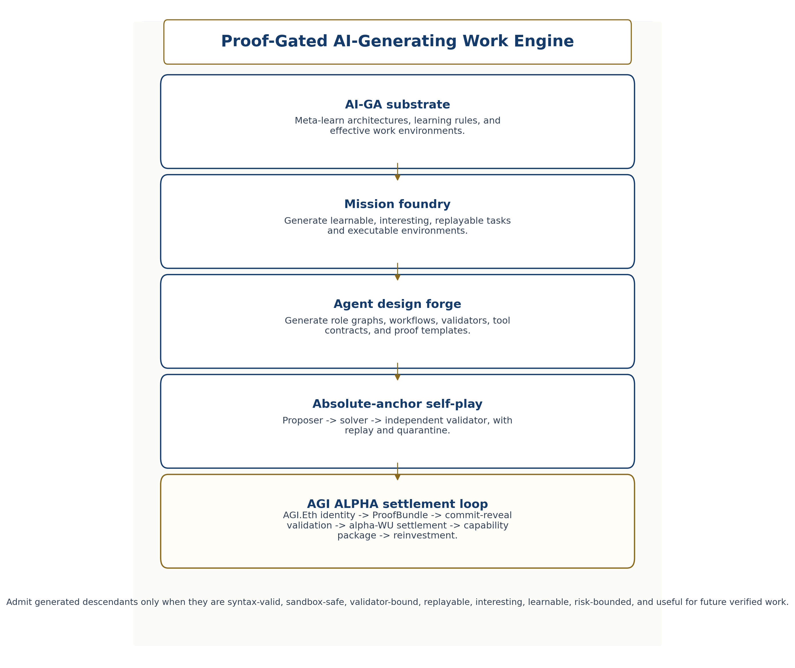
Open-ended generation increases namespace, authority, and settlement risk. Every generated agent, node, validator, task environment, capability package, and proof template must have scoped identity. Generated objects should receive AGI.Eth-scoped identifiers where applicable:
<artifact>.<env>.capability.agi.eth<agent-design>.<env>.agent.agi.eth<validator-design>.<env>.club.agi.eth<runtime>.<env>.node.agi.eth<mission-environment>.<env>.agi.ethIf capability, validator, or
environment are not official role labels in the stable
namespace grammar, they are registry-governed object classes rather than
role suffixes. Generated agents and environments are unofficial until
registry-recognized. Official recognition requires proof bundles,
replay, safety review, namespace checks, and governance approval.
The ProofBundle object is extended with generated-object provenance:
{
"generatedObject": {
"objectType": "task|environment|agent_design|workflow",
"objectClass": "validator|proof_template|capability_package",
"generatorAgent": "<name>.<env>.agent.agi.eth",
"parentArchiveEntries": [],
"noveltyScore": null,
"interestingnessScore": null,
"learnabilityScore": null,
"safetyReview": null,
"replayPath": null,
"validatorSet": [],
"lineagePointer": null,
"registryStatus": "unofficial|quarantined|recognized|retired"
}
}Open-ended generation is powerful but dangerous. A system that can generate tasks, environments, rewards, agents, validators, and curricula can also generate self-referential games, deceptive validators, impossible tasks, reward hacks, unsafe agents, or high-scoring artifacts with no external value.
AGI ALPHA therefore requires held-out validators, independent success detectors, subversion-resistant validation, process-resolved evidence validation, reward-hacking audits, environment safety filters, generated-code sandboxing, deterministic seeds where required, capability quarantine, manual escalation for high-impact generated objects, namespace recognition only after proof, and no production update from unverified self-play.
Principle. Zero external data does not mean zero external grounding. AGI ALPHA may reduce dependence on human-curated data, but it must not reduce dependence on proof, replay, validation, safety, and real-world usefulness.
OMNI-EPIC, AI-GAs, ADAS, and Absolute Zero do not prove AGI ALPHA works. They identify frontier design pressures. AGI ALPHA becomes empirically SOTA only if its proof-gated AI-generating work engine beats static, human-designed, and prior-style open-ended/agent-design/self-play baselines under equal budgets, with reproducible evidence bundles, zero critical safety violations, external or replayable validators, and measurable improvement in reusable capability, capital formation, compute, science, infrastructure, or useful-energy proxies.
Several supplied materials converge on a design lesson: one cannot think a perfect agentic architecture into existence. Flaws appear when the system is built, perturbed, evaluated, and forced to compress what it learned into reusable rules. Scientific generalization is strongest when sparse, deliberately collected evidence is converted into compact causal structure. This is why the paper treats memory and proof traces as thermodynamic order rather than archive clutter.
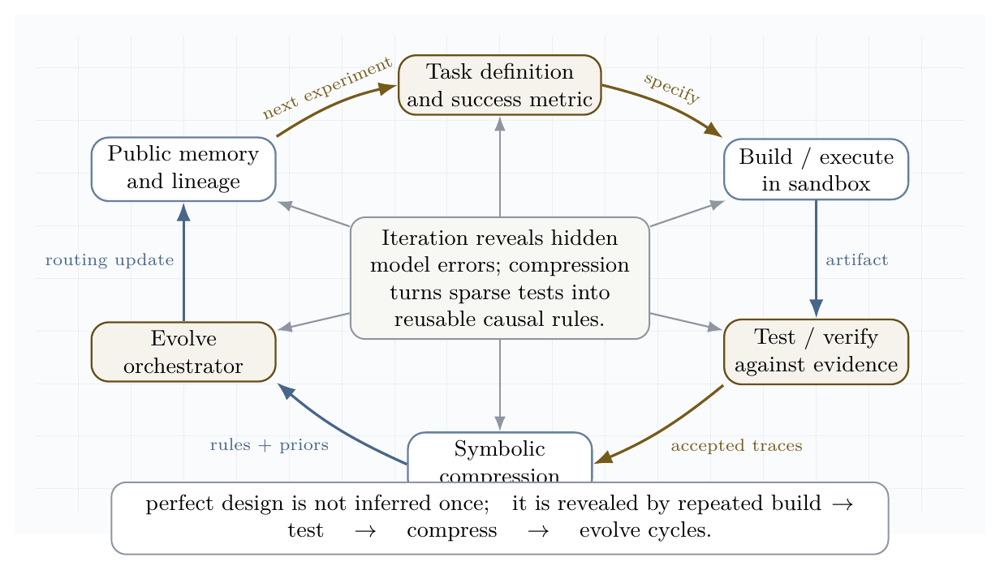
The loop has six steps.
This loop is the engineering analogue of dissipative structure formation: energy and information flow through repeated irreversible trials; disorder is shed as failed search; order is retained as proof, memory, and compressed design knowledge.
Self-play and self-training are essential, but unsafe if the game being optimized is detached from external value. In clean two-player zero-sum games, minimax convergence is meaningful. In real economies, scientific discovery, software engineering, and governance, reward shaping can produce artificial equilibria that look coherent inside the game while becoming useless or harmful outside it.
AGI ALPHA therefore requires an anti-untethering constraint:
\[ \forall \; \text{self-play curriculum } \mathcal{C}, \quad \text{reward}(\mathcal{C}) \Rightarrow \text{externally verifiable value}. \]
Practical forms include:
This resolves a central tension. AGI ALPHA should exploit the infinite curriculum potential of self-play, but should never allow self-play to become a self-referential reward economy. The system is allowed to generate tasks for itself only when validators can separate genuine improvement from gameable artifacts.
The supplied corpus repeatedly distinguishes automation from invention. An automation machine sells task completion. An invention machine compounds proprietary capability: it discovers tools, algorithms, scientific models, market structures, and energy infrastructure that make the next cycle more powerful.
The economic state variable is therefore not only revenue per task. It is accumulated validated capability:
\[ K_{t+1} = K_t + \Delta K_{\text{science}} + \Delta K_{\text{software}} + \Delta K_{\text{energy}} + \Delta K_{\text{coordination}} - \Delta K_{\text{risk}}. \]
This is why a sovereign work engine should not merely expose every capability as a commodity API. Some outputs are strategic infrastructure. The correct institutional posture is dual:
In other words, AGI ALPHA is strongest when it becomes both a labor market and an invention reserve.
If collective capability can emerge from networks of specialized sub-agents, safety cannot be limited to model-level alignment. The system needs population-level controls: identity, reputation, auctions, validators, mission economies, traceability, and sandbox boundaries. This is the distributional safety problem.
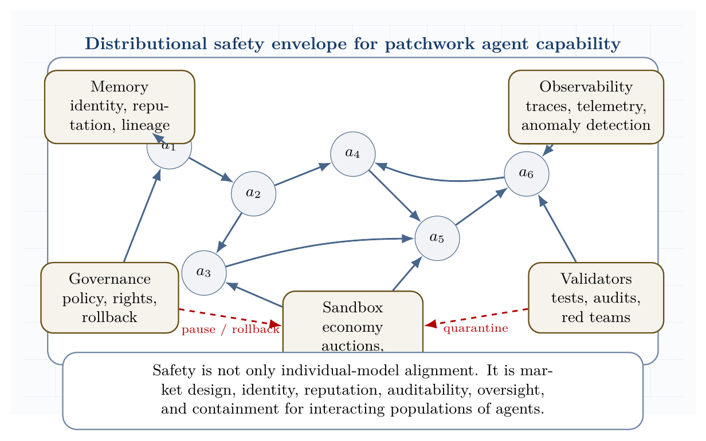
The envelope has five requirements.
This turns the paper’s risk doctrine into a concrete safety architecture. The swarm may become more capable, but the economy in which it acts remains steerable.
The latest scientific-agent systems show that the frontier is moving from question answering toward full discovery loops: formulate hypotheses, execute code or lab-adjacent simulations, validate results, compress them into causal rules, and use those rules to design the next experiment. K-Dense Analyst shows the value of hierarchical multi-agent analysis for complex bioinformatics workflows. Large Causal Models point toward extraction of cross-domain causal structure from language. DISCO shows that multimodal generative models can design proteins around chemical objectives. ASI-Arch and AlphaEvolve indicate that code and architecture discovery can scale through evaluator-guided search.
The implication for AGI ALPHA is that the highest-value jobs are not isolated tasks. They are closed experimental economies:
\[ \text{hypothesis} \rightarrow \text{execution} \rightarrow \text{measurement} \rightarrow \text{causal compression} \rightarrow \text{new design space}. \]
A scientific work engine should therefore maintain a library of causal motifs, proof templates, failed hypotheses, benchmark protocols, tool affordances, and reusable experimental environments. In the language of the paper, this is memory as negentropy: the retained structure that lets the swarm do more work with less waste in the next cycle.
Directed evolution made protein engineering practical by replacing impossible omniscient prediction with iterative function-guided search. Instead of needing a complete theory of how sequence, structure, solvent, stability, dynamics, and function compose, the laboratory loop generates variants, assays or screens them, selects winners, mutates or recombines promising lineages, and repeats. Chen and Arnold’s 1993 subtilisin work is a canonical early demonstration: sequential random mutagenesis and screening recovered catalytic performance under high dimethylformamide conditions by accumulating beneficial substitutions discovered through experiment rather than derived from perfect structural prediction [66]. Arnold’s later formulation of “design by directed evolution” made the principle general: the assay is the anchor, and the search can climb local functional landscapes even when the molecular map is incomplete [67,68].
For AGI ALPHA, the direct lesson is that real validators can substitute for omniscient prediction of optimal coordination. A multi-agent system does not need to know in advance which constellation, tool sequence, prompt, policy, memory fragment, or workflow is globally optimal. It needs a validated search loop: propose candidate organizations, execute within bounded tool environments, assay outcomes through external validators, retain lineage, compress lessons, and update routing.
DISCO provides the complementary modern inspiration. It demonstrates global generative proposal over coupled protein sequence and 3D structure, conditioned on arbitrary biomolecular contexts and reactive intermediates rather than hand-specifying catalytic motifs. In the reported enzyme-design experiments, generated designs were experimentally screened for new-to-nature carbene-transfer reactions, and a selected design was further improved by random mutagenesis / directed evolution [40]. The scientific principle is not any specific model, codebase, filter, training data, or molecular pipeline. The transferable principle is global generative discovery plus local validated optimization.
The synthesis is:
\[ \text{Arnold} = \text{local validated evolutionary search} \]
\[ \text{DISCO-style discovery} = \text{global multimodal generative proposal} \]
\[ \text{AGI ALPHA} = \text{organizational-scale validated search} \]
AGI ALPHA therefore does not require perfect prediction of optimal multi-agent coordination. It discovers high-value coordination through iterative validator-gated search. Like directed evolution, it improves through selection pressure. Like generative design, it proposes candidates beyond human-designed templates. Unlike protein-specific systems, it generalizes the loop to software, scientific research, markets, infrastructure, and machine-labor organizations.
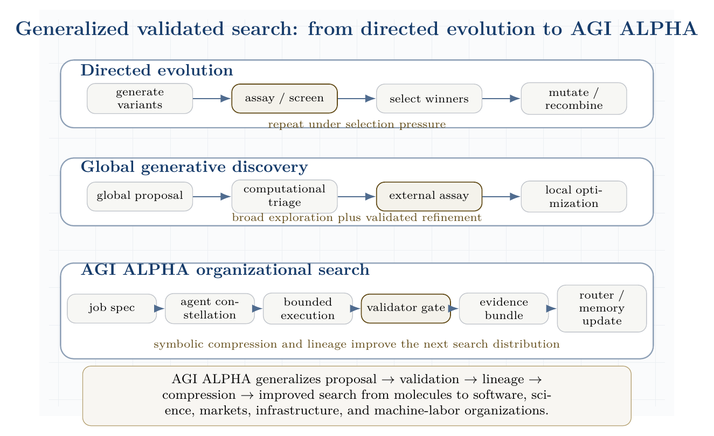
The following method names are native to AGI ALPHA and do not depend on DISCO code, DISCO models, DISCO weights, DISCO datasets, or any third-party protein-design implementation.
| Method | Definition |
|---|---|
| Validated Organizational Evolution | Iterative improvement of agent constellations, workflows, prompts, tools, and policies through validator-scored work outcomes. |
| Proof-Gradient Routing | Routing future tasks toward agents and coalitions whose prior evidence bundles show higher verified value per unit cost/risk. |
| Assay-Equivalent Validator Lattices | Stacked validators that play the role of assays: tests, simulations, formal checks, audits, market settlement, expert review, and delayed real-world outcomes. |
| Evidence-Bundle Memory | A provenance-preserving memory graph of hypotheses, artifacts, traces, validation scores, failures, costs, safety events, and learned rules. |
| Artifact-Lineage Search | Search over descendants of artifacts, workflows, code patches, experimental designs, policies, and agent constellations, with each generation linked to evidence. |
| Coordination Fitness Landscapes | Empirical landscapes over cost, risk, latency, novelty, reproducibility, and verified value for candidate organizations of agents and tools. |
| Build-Test-Compress-Evolve Control Plane | The control loop that builds candidates, tests them externally, compresses lessons into symbolic/routing memory, and evolves the next search distribution. |
| Biological / protein-design system | AGI ALPHA system |
|---|---|
| Sequence candidate | Artifact, workflow, or agent constellation |
| Mutation | Role, tool, prompt, policy, memory, or routing perturbation |
| Assay | Validator gate |
| Fitness | Verified value minus cost, risk, latency, and coordination overhead |
| Directed evolution | Evidence-guided organizational evolution |
| Lab notebook | Evidence bundle plus memory graph |
| Evolvable enzyme | Reusable validated capability |
The analogy only holds if validators are real. In protein engineering, assays anchor the search to experimentally measurable function. In AGI ALPHA, tests, audits, formal checks, market settlement, external benchmarks, expert review, reproducibility checks, or real-world outcomes must play the role of assays. Without real validators, the system degenerates into self-referential search: agents optimizing internal signals, social persuasiveness, or benchmark loopholes rather than external value.
Directed evolution and DISCO are cited here as scientific inspirations for validated search, not as implementation dependencies. AGI ALPHA’s commercial system develops its own coordination substrate, validator architecture, evidence memory, routing policy, and improvement loop. It does not require copying domain-specific protein-design architectures, code, models, weights, figures, datasets, filtering pipelines, inference schedules, or algorithmic details. The AGI ALPHA implementation domain is organizational intelligence: validator-gated machine labor across agents, jobs, tools, artifacts, incentives, governance, and memory.
To make the analogy testable, AGI ALPHA should include a closed-loop scientific discovery benchmark. Each task asks the system to improve a molecule, protein, material, algorithm, simulation, or software workflow over multiple build-test-compress cycles. The expected output is not merely a proposal; it is a validated hypothesis, artifact, or experimental design with lineage.
Agents. The benchmark uses a literature miner, hypothesis generator, simulator/modeler, experimental planner, executor/coder, validator, critic/risk reviewer, and compression agent.
Validators. Validation may include unit tests, simulations, docking or physics proxies, formal checks, reproducibility checks, human expert review, wet-lab outcomes, delayed field outcomes, or benchmark-specific adjudicators.
Evidence bundle. Each cycle records the hypothesis, candidate designs, validator scores, failed variants, selected variant, cost ledger, safety ledger, provenance, lineage, and compressed rules learned.
Metrics. Report verified improvement per dollar/token/hour; validator precision and recall; novelty subject to validity; reproducibility; safety incidents; number of cycles to improvement; and compression quality of learned rules.
This benchmark is the paper’s scientific-discovery version of the real-task demonstration gate. Arnold and DISCO validate the general pattern of proposal plus validation plus iteration in scientific discovery. They do not prove AGI ALPHA works. AGI ALPHA must still pass its own real-task demonstration gate with evidence bundles, baseline comparisons, and external validators.
Real external impact requires tools: browsers, APIs, repositories, databases, code execution, contracts, sensors, and deployment pipelines. But every tool expands the action surface. The frontier tool ecosystem - browser agents, ADK/A2A-style multi-agent frameworks, MCP-style tool interfaces, and workforce-learning systems - therefore strengthens, rather than weakens, the need for AGI ALPHA’s bounded autonomy doctrine.
Tool access should be treated as an energetic coupling between the agentic system and the world:
\[ \text{reasoning} + \text{tool permission} \rightarrow \text{external work} + \text{externalized risk}. \]
The production rule is:
\[ \boxed{ \text{no high-impact tool actuation without scope, trace, validator, and rollback.} } \]
That rule is the difference between impressive demos and governable infrastructure.
A closed system relaxes toward equilibrium. A large agentic system that receives no new compute, data, tasks, feedback, incentives, or validation likewise decays. It becomes idle, stale, brittle, or self-referential. α-AGI Ascension is therefore an open-system phenomenon.

The inflow-dynamics figure shows that organized agentic complexity is not sustained by average resource levels alone. Continuity, quality, and recovery speed determine whether the system keeps producing verified work or decays toward idle, stale, or chaotic behavior.
Let the inflow vector be:
\[ \Phi_{\text{in}} = (\Phi_C,\Phi_D,\Phi_J,\Phi_I,\Phi_F,\Phi_G,\Phi_T) \]
where:
Let the outflow vector be:
\[ \Phi_{\text{out}} = (W_v,Q_s,R_e,I_m,A_o) \]
where:
The system sustains organized complexity when:
\[ \dot{E}_{\text{in}} = \dot{W}_v+ \dot{Q}_s+ \dot{I}_m+ \dot{R}_e \]
and the risk term is bounded:
\[ \dot{R}_e \leq \epsilon_R. \]
The practical version is: useful outputs must increase faster than waste, risk, and coordination overhead.
We define the coordination state:
\[ x=(\mathcal{A},\mathcal{J},M,R,P,G_v,\Pi,T_o) \]
where \(M\) is memory, \(R\) is reputation, \(P\) is proof history, \(G_v\) is governance state, \(\Pi\) is policy, and \(T_o\) is tool state.
The agentic Gibbs-like functional is:
\[ \begin{aligned} \mathcal{G}_{\alpha}(x)={}& C_{\text{compute}}(x)+C_{\text{coord}}(x)+C_{\text{latency}}(x)\\ &+R_{\text{safety}}(x)+R_{\text{legal}}(x)+R_{\text{security}}(x)\\ &-V_{\text{verified}}(x)-T_{\text{eff}}S_{\text{explore}}(x). \end{aligned} \]
Here \(T_{\text{eff}}\) is an effective exploration temperature and \(S_{\text{explore}}\) is useful exploratory diversity. The sign convention is chosen so that lower \(\mathcal{G}_{\alpha}\) is better. The system performs impact work when:
\[ \dot{W}_{\text{impact}} \lesssim -\frac{d\mathcal{G}_{\alpha}}{dt}. \]
The inequality matters because real systems are irreversible. Some potential work is lost to failed prompts, redundant agents, invalid outputs, adversarial attacks, tool overhead, and validation costs.
The design target is:
\[ \boxed{ \min_x \mathcal{G}_{\alpha}(x) } \]
subject to:
\[ \text{lawful}(x)\land \text{auditable}(x)\land \text{permissioned}(x)\land \text{validator-gated}(x). \]
A hard task may not be solvable by one isolated agent. It becomes feasible when coupled to tools, memory, specialized agents, proof systems, and incentives:
\[ \begin{aligned} &\text{hard task}+\text{compute}+\text{tools}+\text{coalition}+\text{validator}\\ &\qquad\rightarrow\text{verified artifact}+\text{reputation}+\text{settlement}+\text{memory}. \end{aligned} \]
This is the agentic analogue of coupled reactions: an otherwise unfavorable process becomes feasible because it is attached to a favorable work-producing pathway [2].
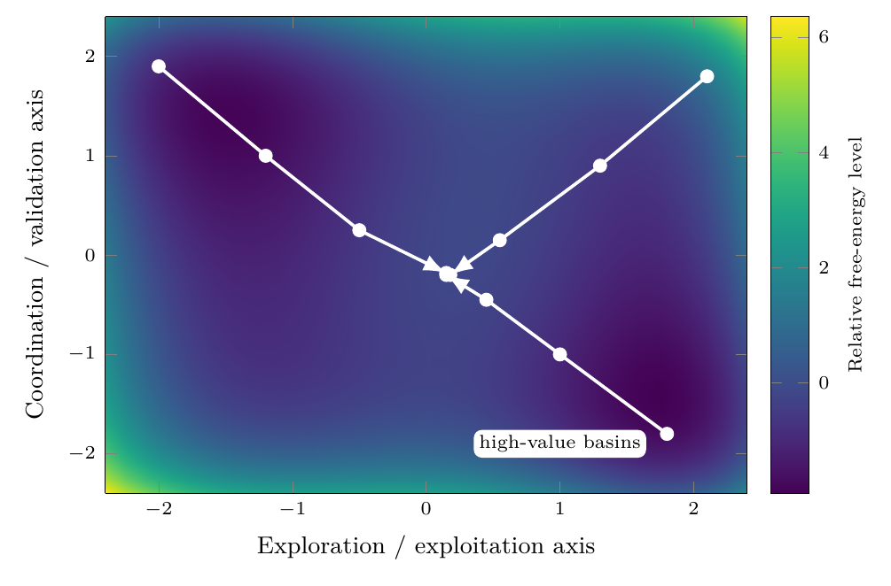
The free-energy landscape figure visualizes the coordination free-energy functional \(\mathcal{G}_{\alpha}\). It is not chemical Gibbs energy at the software layer; it is an engineered state functional over cost, risk, verified value, and useful exploration.
A complete microstate of the swarm is:
\[ x=(a_1,\ldots,a_N;\theta_1,\ldots,\theta_N;m;q;r;p;g;t) \]
where \(a_i\) is the action of agent \(i\), \(\theta_i\) is its policy/prompt/tool state, \(m\) is shared memory, \(q\) is the queue, \(r\) is reputation, \(p\) is proof history, \(g\) is governance state, and \(t\) is tool state.
A macrostate is:
\[ X=(\bar{V},\bar{C},\bar{R},S_{\text{swarm}},K_{\text{coalition}},L_{\text{validation}},H_{\text{security}}). \]
The Hamiltonian-like cost of a microstate is:
\[ \mathcal{H}(x)=C(x)+R(x)-V(x). \]
The Gibbs distribution over configurations is:
\[ p(x)=\frac{1}{Z}e^{-\beta\mathcal{H}(x)}, \qquad Z=\sum_x e^{-\beta\mathcal{H}(x)}, \qquad \beta=\frac{1}{T_{\text{eff}}}. \]
The swarm entropy is:
\[ S_{\text{swarm}}=-\sum_xp(x)\log p(x). \]
A healthy system avoids both extremes:
\[ S_{\text{swarm}}\rightarrow 0 \quad\Rightarrow\quad \text{rigidity, monoculture, brittleness} \]
and:
\[ S_{\text{swarm}}\rightarrow \infty \quad\Rightarrow\quad \text{incoherence, unbounded exploration, tool sprawl}. \]
The goal is productive entropy: enough diversity to discover novel strategies, enough constraint to converge.
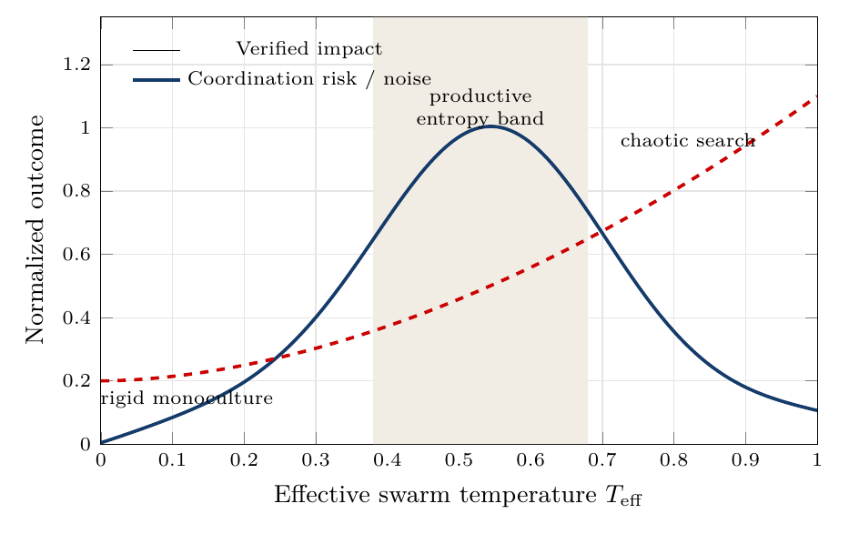
The entropy-band figure makes the entropy condition operational. The desired regime is neither maximum certainty nor maximum randomness; it is a productive band in which exploration discovers strong coalitions while validation still dominates noise.
Let \(A\) be a candidate constellation of agents for job \(j\). Define:
\[ \mathcal{H}(A,j)= \sum_i h_i(a_i,j) + \sum_{i<k}J_{ik}\phi(a_i,a_k,j) + \sum_{i<k<\ell}K_{ik\ell}\psi(a_i,a_k,a_\ell,j) +R(A,j)-V(A,j). \]
The terms are:
The heuristic Hamiltonian routing problem is:
\[ A^*_j=\arg\min_A\mathcal{H}(A,j) \]
This is the R0 member of the router family. Later routers can learn the Hamiltonian terms, replace them with natural-language workflow generation, map evidence states to role decisions, or select a hybrid policy when task family, cost, risk, and validator availability demand it.
subject to:
\[ R(A,j)\leq R_{\max}(j) \]
and:
\[ \text{tools}(A)\subseteq \text{allowed}(j). \]
Closed strategic systems may orbit. Useful systems must settle into work. We therefore model the state dynamics as:
\[ \dot{x}=J\nabla\mathcal{H}(x)-\Gamma\nabla\mathcal{G}_{\alpha}(x)+\sigma\eta_t. \]
Interpretation:
Thus:
\[ \boxed{ \text{explore like a Hamiltonian system; settle like a dissipative work engine.} } \]
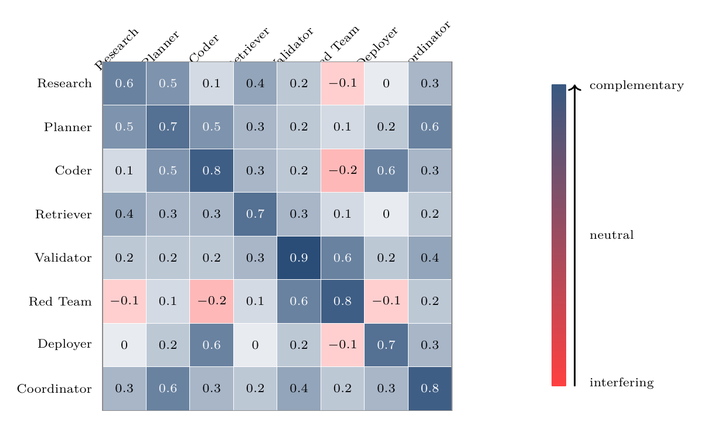
The interaction-matrix figure turns the Hamiltonian metaphor into a routeable design object: pairwise and higher-order interaction terms can be estimated, audited, and used to form stronger agent constellations.
Each agent has local objectives, partial observability, and bounded capabilities. If local incentives are misaligned, the system can converge to collusion, spam, performative reasoning, unsafe tool use, or low-value equilibria.
Let agent \(i\) receive utility:
\[ u_i=b_i-c_i+\theta\Delta V_{\text{system}}+\rho_r\Delta r_i-\rho_sR_i-\rho_lL_i-\rho_oO_i. \]
where:
The mechanism objective is:
\[ \max_{\pi}\mathbb{E}[V_{\text{verified}}-\lambda C-\rho R-\kappa L-\mu O]. \]
The target is not merely a Nash equilibrium. A Nash equilibrium can be stable and useless. The desired point is:
\[ \text{Nash-stable}+ \text{Pareto-improving}+ \text{validator-approved}+ \text{risk-bounded}+ \text{externally useful}. \]
Credit assignment is one of the central scientific and economic bottlenecks in multi-agent systems. Cooperative MARL with a single joint reward can suffer from spurious rewards, partial observability, and lazy-agent effects; value decomposition was proposed to assign team value to agent-wise components [13].
For AGI ALPHA, the cleanest scoring principle is counterfactual contribution:
\[ D_i=G(z)-G(z_{-i}), \]
where \(G(z)\) is global verified value with agent \(i\) and \(G(z_{-i})\) is estimated global verified value without agent \(i\).
The reputation update is:
\[ \Delta r_i=f(D_i,q_i,s_i,\tau_i,\chi_i), \]
where:
Settlement should reward marginal verified contribution, not volume of messages, centrality in the conversation, or persuasive style.
This section details the continuous inflows that keep the agentic system far from equilibrium. Each inflow is both a resource and a control signal. Removing any one of them causes a characteristic collapse mode.
Compute is the literal energy-mediated substrate. It includes accelerators, CPU orchestration, memory, storage, network bandwidth, tool execution environments, sandbox runtimes, and scheduler capacity.
The compute inflow can be written:
\[ \Phi_C=(P_{\text{electric}},G_{\text{GPU}},C_{\text{CPU}},B_{\text{net}},M_{\text{mem}},S_{\text{storage}},Q_{\text{scheduler}}). \]
Compute powers search, inference, planning, simulation, retrieval, code execution, verification, and monitoring. It also sets the speed of the control loop. Too little compute causes under-exploration and delayed validation. Too much unconstrained compute creates runaway loops, excess cost, and larger attack surfaces.
Compute inflow should be bounded by:
\[ \eta_C=\frac{W_{\text{verified}}}{\text{GPU-hours}+\text{CPU-hours}+\text{tool-cost}} \]
\[ B_C=\frac{\text{compute spent on accepted work}}{\text{total compute spent}} \]
\[ L_C=\text{median validation latency per compute unit}. \]
Without compute, agents cannot search, plan, verify, or act. The swarm relaxes to inert memory and unexecuted task queues.
Data is the informational nutrient of the system. It includes raw documents, real-time signals, retrieval corpora, tool outputs, human instructions, telemetry, market data, logs, code repositories, scientific papers, external APIs, and validation outcomes.
The data inflow is:
\[ \Phi_D=(D_{\text{fresh}},D_{\text{retrieved}},D_{\text{private}},D_{\text{public}},D_{\text{telemetry}},D_{\text{eval}},D_{\text{provenance}}). \]
Data reduces uncertainty and makes action situationally grounded. Fresh data prevents the system from optimizing against stale world models. Provenance prevents the system from treating untrusted inputs as facts. Telemetry lets the system learn from its own operation.
Data inflow should be governed by:
\[ F_D=\frac{\text{fresh relevant data used}}{\text{total relevant data required}} \]
\[ P_D=\frac{\text{outputs with traceable provenance}}{\text{all outputs}} \]
\[ H_D=\text{detected poisoning or injection attempts per data channel}. \]
Without fresh data, the system becomes stale, hallucinatory, and self-referential. It may continue producing outputs, but verified value decays.
Task inflow supplies the gradient. A multi-agent system with no meaningful jobs has no external pressure to organize. Tasks can come from users, markets, research agendas, software backlogs, monitoring systems, anomaly detectors, governance obligations, or strategic objectives.
The task inflow is:
\[ \Phi_J=(J_{\text{user}},J_{\text{market}},J_{\text{research}},J_{\text{ops}},J_{\text{security}},J_{\text{governance}}). \]
Each task should be formalized as:
\[ j=(o,c,v,b,d,\rho,e) \]
where \(e\) is the exit condition.
Tasks convert ambient possibility into actionable gradients. They specify what counts as success, what constraints must be respected, what proof is required, and when the system should stop.
A task should include:
\[ Q_J=\frac{\text{jobs with clear validation criteria}}{\text{all jobs}} \]
\[ Y_J=\frac{\text{accepted jobs}}{\text{submitted jobs}} \]
\[ D_J=\text{distribution of job risk classes}. \]
Without task inflow, agents coordinate around internal activity rather than external value. The system becomes a conversation engine rather than a work engine.
Incentives create selection pressure. They include bounties, fees, reputational rewards, access privileges, priority routing, stake, penalties, and long-term capital allocation.
The incentive inflow is:
\[ \Phi_I=(B_{\text{bounty}},R_{\text{reputation}},S_{\text{stake}},P_{\text{penalty}},A_{\text{access}},K_{\text{capital}}). \]
Incentives align local agent behavior with global verified value. They decide which agents are selected, which coalitions persist, which strategies are reinforced, and which behaviors are penalized.
Incentives should be:
\[ A_I=\text{corr}(\Delta r_i,D_i) \]
where \(A_I\) is incentive alignment and \(D_i\) is counterfactual contribution.
\[ G_I=\frac{\text{reward captured by low-contribution agents}}{\text{total reward}} \]
\[ C_I=\text{collusion or self-dealing incidents per settlement cycle}. \]
Without incentives, selection pressure weakens. High-quality agents are not reliably retained, low-value agents may flood the system, and coordination can drift toward cheap performative output.
Feedback is the control signal that turns activity into learning. It includes automated test results, validator decisions, user ratings, human review, red-team findings, incident reports, market response, execution telemetry, and post-deployment outcomes.
The feedback inflow is:
\[ \Phi_F=(F_{\text{validator}},F_{\text{human}},F_{\text{tests}},F_{\text{redteam}},F_{\text{market}},F_{\text{telemetry}},F_{\text{incident}}). \]
Feedback updates memory, routing, reputation, policies, prompts, tools, and risk thresholds. It closes the cybernetic loop:
\[ \text{action}\rightarrow\text{measurement}\rightarrow\text{update}\rightarrow\text{better action}. \]
Feedback systems should include:
\[ P_v=\frac{\text{true accepted outputs}}{\text{all accepted outputs}} \]
\[ R_v=\frac{\text{accepted true good outputs}}{\text{all true good outputs}} \]
\[ \tau_F=\text{time from output to feedback incorporation}. \]
Without feedback, the system cannot distinguish useful work from convincing failure. It drifts, overfits to internal metrics, and accumulates silent risk.
Although the prompt highlights compute, data, tasks, incentives, and feedback, governance must be treated as an additional continuous inflow. Governance supplies changing rules, legal constraints, safety thresholds, escalation policies, tool permissions, and acceptable-use boundaries.
The governance inflow is:
\[ \Phi_G=(P_{\text{policy}},L_{\text{law}},S_{\text{safety}},E_{\text{ethics}},A_{\text{audit}},H_{\text{human}}). \]
Governance keeps maximum impact from becoming unconstrained optimization. It turns the objective from:
\[ \max V \]
into:
\[ \max \mathbb{E}[V_{\text{verified}}]-\lambda C-\rho R-\kappa U \]
subject to lawfulness, auditability, permissioning, and reversibility where possible.
Without governance, agentic autonomy can amplify errors, privilege misuse, tool misuse, privacy leakage, harmful optimization, and legal exposure.
Tools are the actuation channels. They include search, code execution, browsers, databases, calendars, email, cloud APIs, payment systems, robotics, lab automation, and deployment pipelines.
The tool inflow is:
\[ \Phi_T=(T_{\text{search}},T_{\text{code}},T_{\text{db}},T_{\text{deploy}},T_{\text{comm}},T_{\text{finance}},T_{\text{physical}}). \]
Tools convert internal plans into external work. They also make agents dangerous if over-permissioned. Agentic security guidance therefore treats tools, identity, memory, and permissions as first-class security boundaries [9].
Tool access should follow:
Without tools, the system can reason but cannot produce much external work. With excessive tools, the system can act faster than it can validate. The correct operating regime is bounded tool empowerment.
| Inflow | Primary role | Control variable | Failure if absent | Failure if excessive |
|---|---|---|---|---|
| Compute | Powers search and execution | Budget, latency, energy | Inert swarm | Runaway cost and loops |
| Data | Grounds beliefs | Freshness, provenance | Stale hallucination | Poisoning, privacy risk |
| Tasks | Supplies gradients | Success criteria | Idle activity | Overload, shallow work |
| Incentives | Creates selection pressure | Reward / rep. | Low-quality drift | Gaming, collusion |
| Feedback | Enables learning | Validator precision/recall | Model drift | Overfitting to validators |
| Governance | Bounds autonomy | Policy and permissions | Unsafe optimization | Bureaucratic paralysis |
| Tools | Enables external work | Scope and approval | No actuation | High-impact failures |
The stable Ascension regime is not maximum inflow. It is regulated inflow:
\[ \Phi_{\text{optimal}} = \arg\max_{\Phi} \left(V_{\text{verified}}-\lambda C-\rho R-\kappa U\right). \]
The civilizational horizon is now formalized in the early Civilizational Value-to-Energy Flywheel section. This later placement is retained as a reminder that the horizon remains bounded by law, auditability, validation, reversibility where possible, and institutional governance. The value target is not raw power accumulation. It is compounding verified capability: better science, safer energy systems, more reliable manufacturing, stronger institutions, and infrastructure that expands compute, energy, and coordination without abandoning safety.
The asymptotic proximity index remains:
\[ \Theta_{\mathrm{II}}(t)=\frac{P_{\mathrm{controlled}}(t)}{L_{\star}}, \]
where \(P_{\mathrm{controlled}}\) is sustainably governed useful power and \(L_{\star}\) is a host-star luminosity benchmark. Progress toward this horizon counts only when the controlled power is lawful, auditable, sustainable, and risk-bounded. The operational metric for near-term work is not \(\Theta_{\mathrm{II}}\) but \(D_{\mathrm{civ}}\): verified work multiplied by reusability, metaproductivity, governance, and energy/compute gain, divided by cost and risk.
A production-grade α-AGI work engine requires nine layers.
Detects opportunities, anomalies, research gaps, user needs, software defects, security events, or market inefficiencies.
\[ g_t=\nabla_{\text{world}}V. \]
Converts gradients into measurable jobs with success criteria, constraints, risk class, budget, and stopping conditions.
Maintains agent capabilities, tool permissions, provenance, identity, reputation, and prior performance.
Selects agent coalitions by minimizing \(\mathcal{H}(A,j)\) under budget and risk constraints.
Runs tool use, planning, coding, research, simulation, retrieval, negotiation, and deployment in bounded environments.
Applies unit tests, formal checks, human review, adversarial review, outcome checks, safety filters, and acceptance criteria.
Allocates reward, reputation, penalties, and future routing probability according to counterfactual contribution.
Stores reusable artifacts, proof traces, errors, policies, tool outcomes, calibration data, and incident histories.
Defines permissions, escalation rules, audit requirements, legal constraints, red-team procedures, and shutdown modes.
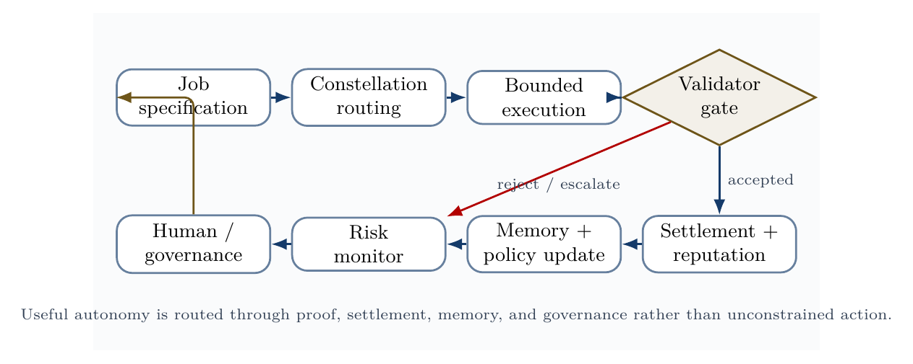
The validator-loop figure gives the operational discipline behind the system: jobs route into constellations, constellations execute under tool boundaries, validators decide acceptance, and the outcome updates settlement, reputation, memory, risk controls, and governance.
A minimal viable AGI ALPHA should not begin as a giant autonomous economy. It should begin as a validator-gated, trace-producing, benchmarkable multi-agent work loop. The smallest serious version is a system that takes real tasks, routes them to a small agent constellation, executes only through bounded tools, validates outputs externally, logs every step, updates reputation and memory, and compares itself against single-agent and fixed-workflow baselines.
The implementation target is therefore:
\[ \boxed{ \begin{gathered} \text{MVP AGI ALPHA} = \text{routed agents}+\text{bounded tools}+\text{validators}\\ +\text{evidence bundles}+\text{baselines} \end{gathered}} \]
This is the concrete bridge between the paper’s theoretical substrate claim and reproducible engineering. Transformer architectures scale intelligence inside models; this MVP scales intelligence across a governed organization of agents, jobs, validators, memory, incentives, and evidence.
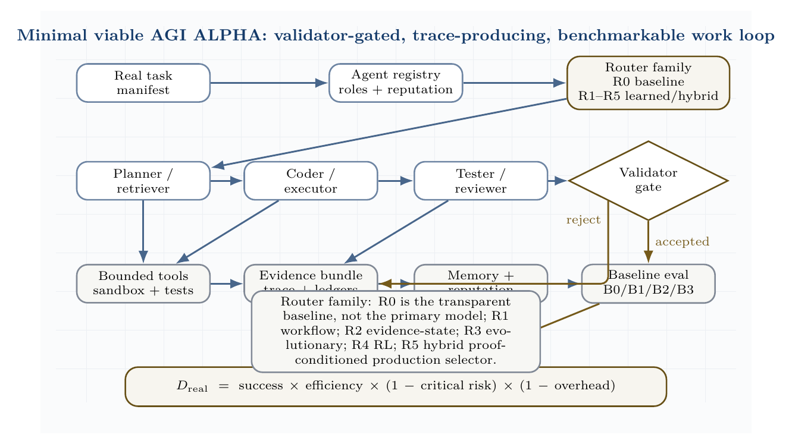
The MVP is effectively a multi-agent CI/CD and evaluation harness. It should begin with software repair because validation is crisp: the artifact is a patch, the validator is a deterministic test suite plus policy checker, and replay is possible.
| Component | MVP implementation | Production extension |
|---|---|---|
| Job spec | JSON manifest with objective, constraints, success command, risk class, budget | Typed task contracts, risk classes, escrow, policy-as-code |
| Agents | Planner, coder, tester, reviewer, validator | Heterogeneous models, specialized tools, learned role priors |
| Router | Router family: R0 Hamiltonian baseline for auditability, not primary model; R1 natural-language workflow router; R2 evidence-state lightweight router; R3 evolutionary coordinator; R4 RL coordinator; R5 hybrid proof-conditioned production selector | Learned task-family selection among R0-R5 using evidence bundles, validator availability, cost/risk class, and separability diagnostics |
| Tools | Read files, search repo, apply patch, run tests | Browser, desktop, cloud, lab, database, and deployment tools with approval gates |
| Validator | Deterministic tests plus policy checker | Multi-validator consensus, formal checks, red teams, human escalation |
| Memory | SQLite/Postgres trace and reputation tables | Provenance graph, public memory, cross-task lineage |
| Settlement | Reputation update after proof | Counterfactual contribution, escrow, slashing, on-chain settlement |
| Evidence | Task manifest, route, trace, artifact, verifier report, cost and safety ledgers | Audit-ready evidence bundles, replay packages, external certification |
| Baselines | B0 single agent, B1 naive swarm, B2 static crew, B3 AGI ALPHA routed constellation | Longitudinal benchmark suite with scalability curves |
The MVP is not defined by the number of agents. It is defined by the control structure. More agents are useful only if they reduce the free-energy-like objective and improve risk-adjusted verified work.
agialpha-mvp/
agialpha/
models.py # Job, Agent, Trace, EvidenceBundle
router.py # router-family interface
# MVP starts with R0 baseline
orchestrator.py # main job loop
tools.py # bounded tool interface
validators.py # tests, policy checks, acceptance
settlement.py # reputation and credit updates
evals.py # B0/B1/B2/B3 comparison + D_real
agents/ # role prompts and policies
benchmarks/ # real-task manifests and local benchmark repos
runs/evidence/ # machine-readable evidence bundles
main.py # deterministic MVP demonstrationThe full reference scaffold is included in the publication package
under mvp_reference/. It implements the control loop on a
local software-repair demonstration and emits an evidence bundle. That
bundle is not a claim of large-scale AGI; it is a minimal reproducible
instance of the paper’s validator-gated architecture. The scaffold
deliberately starts with R0 for interpretability, not because R0 is the
primary router, while the paper’s SOTA-aligned claim is the broader
R0-R5 router family and the promotion rule that learned routers must
beat single-agent, fixed-workflow, unstructured-swarm, Conductor-style,
and TRINITY-style baselines under equal model/tool/budget
constraints.
The first non-negotiable design rule is that every run must produce an evidence bundle. Without this, the system is only an agent demo.
class Job(BaseModel):
id: str
family: str
objective: str
repo_path: str | None = None
constraints: list[str] = []
success_cmd: str
risk: Literal["low", "medium", "high"] = "low"
budget_tokens: int = 100_000
allowed_tools: set[str] = {
"read_file", "search_repo",
"write_patch", "run_tests"
}
class EvidenceBundle(BaseModel):
job: Job
selected_agents: list[str]
rejected_agents: list[str]
trace: list[TraceEvent]
artifact: dict
validation: ValidationRecord
cost: CostLedger
safety_ledger: list[dict] = []
settlement: dict = {}The MVP implements R0, the Hamiltonian/free-energy baseline, because it is transparent, auditable, and easy to reproduce. R0 is a baseline and diagnostic control, not the primary production model. The architecture is no longer limited to R0. It exposes a router-family interface:
Every router must output the same contract: selected agents, role assignments, subtask prompts, access graph, tool permissions, budget, validator set, stopping rule, and escalation rule. R0 selects a constellation by minimizing a practical Hamiltonian-like score:
\[ \mathcal{H}(A,j) = C(A)+2R(A)+O(|A|^2)-V(A,j)-S(A,j), \]
where \(C\) is local cost, \(R\) is risk, \(O\) is coordination overhead, \(V\) is expected verified value, and \(S\) is role synergy. Tool violations create an absorbing penalty.
def hamiltonian(team, job):
local_cost = sum(a.avg_cost for a in team)
local_risk = sum(a.risk_score for a in team)
value = sum(expected_value(a, job) for a in team)
synergy = sum(
pair_synergy(a, b)
for i, a in enumerate(team)
for b in team[i+1:]
)
overhead = 0.08 * (len(team) ** 2)
forbidden = any(
not a.allowed_tools <= job.allowed_tools
for a in team
)
score = local_cost + 2*local_risk + overhead
score -= value + synergy
return 999 if forbidden else scoreThis turns coordination into an auditable routing decision. A planner, coder, tester, or validator is not included because it sounds plausible; it is included only if it improves the risk-adjusted score. In production, R1-R5 replace or augment this baseline whenever evidence shows that learned natural-language workflows, compact evidence-state routing, evolutionary search, reinforcement learning, or a hybrid proof-conditioned router improves verified work under equal budget and zero critical safety violations.
The MVP exposes a tiny tool surface: read files, search a repository, apply a patch, and run tests. The production version should execute tests in containers or sandboxes with no network, constrained CPU/memory, immutable logs, and rollback.
class ToolBox:
def __init__(self, root: str):
self.root = Path(root).resolve()
def _safe(self, path: str) -> Path:
p = (self.root / path).resolve()
if not str(p).startswith(str(self.root)):
raise ValueError("path escape")
return p
def write_patch(self, diff: str) -> dict:
p = subprocess.run(["git", "apply", "-"], input=diff, text=True,
cwd=self.root, capture_output=True)
return {"ok": p.returncode == 0, "stdout": p.stdout, "stderr": p.stderr}The validator accepts only when tests pass, policy constraints are satisfied, and no critical violation is detected. Settlement follows validation rather than persuasion.
def run_agialpha(job, agents, tools, llm):
selected, rejected, h_score = select_constellation(job, agents)
trace, cost = [], CostLedger()
plan = call_agent(planner, job, "Create a minimal repair plan.", llm)
diff = call_agent(coder, job, f"Plan:\n{plan}\nProduce a unified git diff.", llm)
patch_result = tools.write_patch(diff)
test_result = tools.run_tests(job.success_cmd)
validation = validate(job, test_result, trace)
settlement = settle(selected, validation, cost)
return EvidenceBundle(job=job, selected_agents=[a.id for a in selected],
rejected_agents=rejected, trace=trace,
artifact={"patch": diff, "test_result": test_result},
validation=validation, cost=cost, settlement=settlement)This is the smallest real AGI ALPHA loop: specify, route, execute, validate, settle, remember, and compare.
The MVP is promoted only if its routed constellation outperforms simpler baselines under equal model/tool/budget conditions:
B0: single strong agent
B1: unstructured swarm
B2: fixed-role crew
B3: AGI ALPHA routed constellationThe demonstration metric is:
\[ D_{\mathrm{real}} = \mathrm{success}\times\frac{W_{\mathrm{verified}}}{C_{\mathrm{total}}} \times(1-R_{\mathrm{critical}}) \times(1-O_{\mathrm{coord}}). \]
The claim “AGI ALPHA demonstrates scalable, efficient, and safe coordination” is valid only when \(D_{\mathrm{real}}(B3)\) exceeds the baselines across real task families with zero critical safety violations and reproducible evidence bundles.
A paper about scalable multi-agent coordination is not operationally convincing unless it can be tested on real tasks. AGI ALPHA therefore requires a demonstration layer that separates three questions that are often conflated:
The evidence standard is deliberately strict. A coordination claim is accepted only when a run produces externally verifiable task success, a cost and latency trace, a complete handoff/tool-call/proof log, a safety and policy-violation log, baseline comparisons, and repeated-trial reliability estimates. A private demo, a single cherry-picked task, or an internal conversation trace is not sufficient.
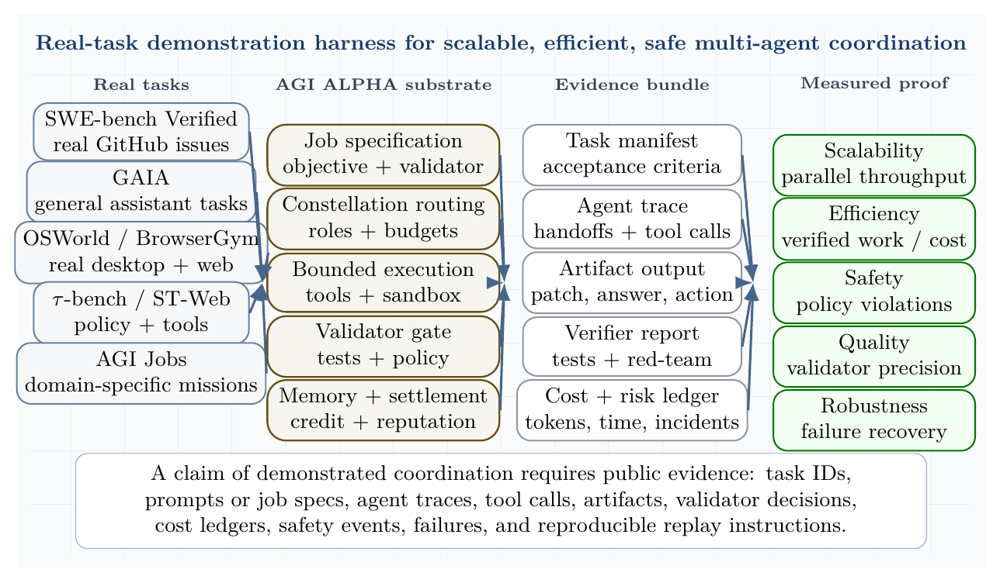
The demonstration suite should include multiple benchmark families because no single benchmark captures the full coordination problem.
| Task family | Benchmark or source | Why it is real-task relevant | Acceptance signal |
|---|---|---|---|
| Software repair | SWE-bench and SWE-bench Verified | Human-validated GitHub issues and test-driven evaluation; strong proxy for real software maintenance [57,58]. | Resolved issue, passing tests, patch provenance, no regressions. |
| General assistant work | GAIA | Multi-step reasoning, tool use, web retrieval, file use, multimodality, and data handling [59]. | Correct answer, provenance, cost per answer, reproducibility. |
| Desktop and web automation | OSWorld, BrowserGym, WorkArena, WebArena | Stateful GUI/CLI/browser action over realistic computer and enterprise environments [60-62]. | Execution-based task success, clean action trace, no unauthorized action. |
| Policy-bound tool use | \(\tau\)-bench, \(\tau^2\)-bench, ST-WebAgentBench | Agents must interact with users, follow policies, use tools, and end in the correct world state [63-65]. | Goal-state match, policy compliance, pass\(^k\), low variance. |
| Scientific/data workflows | Agentic Data Scientist / K-Dense Analyst-style workflows | Planning, code execution, validation, self-correction, and reproducible analysis [38]. | Executed notebook/code, validated result, artifact reproducibility. |
| AGI Jobs / domain missions | Protocol-native synthetic labor tasks | Identity, proof, settlement, memory, and governance. | Validator-gated job acceptance and auditable settlement. |
This portfolio matters. SWE-bench emphasizes real code and tests. GAIA emphasizes assistant reliability. OSWorld, BrowserGym, WorkArena, and WebArena test live actuation. \(\tau\)-bench, \(\tau^2\)-bench, and ST-WebAgentBench test policy-constrained interaction. AGI Jobs-style tasks test whether proof-bearing work can be routed, settled, remembered, and governed.
The routed swarm must be compared against a ladder of progressively stronger baselines under equal model, tool, and budget constraints.
| Condition | Description | Purpose |
|---|---|---|
| B0: single strong agent | one model with the same tools and budget | checks whether multi-agent complexity is justified |
| B1: unstructured swarm | multiple agents without routing, credit, or validators | measures coordination waste |
| B2: fixed-role crew | planner, executor, critic, and validator roles hard-coded in advance | tests simple specialization |
| B3: AGI ALPHA constellation | Hamiltonian/free-energy routed agents with validator gating, memory update, settlement, and risk controls | tests the proposed organizational substrate |
The claim is not that more agents are automatically better. The claim is that a governed routing substrate can select, prune, validate, and settle agent labor more effectively than unstructured scale.
Let \(T\) be the set of real tasks, \(N\) the number of active agents, \(C\) total token/tool/wall-clock/human-review cost, \(R\) the safety-risk loss, and \(W_v\) the verified work score.
The real-task demonstration score is:
\[ D_{\mathrm{real}}= \underbrace{\frac{|T_{\mathrm{accepted}}|}{|T|}}_{\text{verified task success}} \cdot \underbrace{\frac{W_v}{C_{\mathrm{compute}}+C_{\mathrm{tools}}+C_{\mathrm{human}}}}_{\text{efficiency}} \cdot \underbrace{(1-R_{\mathrm{critical}})}_{\text{safety}} \cdot \underbrace{(1-\Omega_{\mathrm{coord}})}_{\text{coordination overhead}}. \]
Coordination overhead is:
\[ \Omega_{\mathrm{coord}}= \frac{C_{\mathrm{handoffs}}+C_{\mathrm{duplicate}}+C_{\mathrm{validator}}+C_{\mathrm{idle}}}{C_{\mathrm{total}}}. \]
Scalability and efficiency are measured as:
\[ S_N=\frac{W_v(N)}{W_v(1)}, \qquad E_N=\frac{W_v(N)}{N W_v(1)}, \qquad \eta_{\mathrm{task}}=\frac{W_v}{C_{\mathrm{tokens}}+C_{\mathrm{tools}}+\lambda C_{\mathrm{wall}}+\mu C_{\mathrm{human}}} \]
Safety is a hard constraint:
\[ P(\text{critical violation})=0, \qquad \mathbb{E}[R_{\mathrm{safety}}]\le R_{\max}, \qquad F_{\mathrm{false\ accept}}\le F_{\max}. \]
For stochastic agents, pass@1 is insufficient. The system should report pass\(^k\), variance across seeds, worst-case policy compliance, and repeatability of evidence bundles.
Every accepted task should produce a machine-readable evidence bundle.
| Evidence object | Required contents |
|---|---|
| task manifest | task ID, benchmark family, objective, constraints, success criteria, risk class |
| routing record | selected agents, role assignments, budgets, Hamiltonian/free-energy score, rejected coalitions |
| execution trace | prompts, tool calls, files touched, browser actions, API calls, timestamps |
| validation record | tests, policy checks, red-team checks, independent validator decisions |
| cost ledger | tokens, wall time, tool charges, compute time, human review time |
| safety ledger | blocked actions, policy violations, rollbacks, human escalations, incidents |
| settlement record | reward, reputation update, counterfactual contribution, memory update |
The demonstration gate promotes a claim only when all three conditions hold:
\[ \text{Promote}\iff \left(\eta_{\mathrm{AGI\ ALPHA}}>\eta_{\mathrm{baseline}}\right) \land \left(S_N>1\right) \land \left(R\le R_{\max}\right). \]
The system fails the demonstration if it wins on raw success but loses on cost, hides coordination overhead, violates policy, requires unlogged human intervention, or cannot reproduce the result.
Scenario A: software repair. A real GitHub issue from SWE-bench Verified is converted into an AGI job. Retriever agents inspect code and issue context, planner agents propose repair strategies, coder agents generate patches, tester agents run unit tests, and validators accept only patches that pass the benchmark harness. The record must include patch diff, tests run, failed attempts, agent handoffs, wall-clock time, token/tool cost, and rollback path.
Scenario B: policy-bound service work. A \(\tau\)-bench or \(\tau^2\)-bench task is converted into a job with policy constraints and tool permissions. The swarm succeeds only if the final database or shared world state matches the annotated goal while respecting all policies.
Scenario C: research assistant work. A GAIA or scientific-analysis task is routed through retrieval, reasoning, code execution, and validator review. Success requires a correct answer or artifact with provenance, executable evidence, and calibrated uncertainty.
Scenario D: web/work automation. A WorkArena, BrowserGym, WebArena, or OSWorld task tests whether the system can use browser actions, tools, and memory without unsafe or unauthorized actions. Success requires task completion plus a clean action trace.
This section upgrades the paper’s empirical standard. AGI ALPHA should not be presented as having demonstrated scalable coordination until the evidence bundles show improvement on real tasks against the baselines above. Conversely, once those bundles exist, the claim becomes auditable: verified work, cost, safety, and coordination overhead can be inspected rather than inferred.
The following principles translate current agentic guidance into the physics/game-theoretic model.
OpenAI’s practical guidance recommends maximizing a single agent’s capability before adding multi-agent complexity and distinguishes manager-style patterns from decentralized handoffs [11]. Anthropic similarly distinguishes predictable workflows from more autonomous agents [10]. In our framework, unnecessary agents increase \(C_{\text{coord}}\) and \(S_{\text{swarm}}\) without increasing \(V_{\text{verified}}\).
Create a specialist agent only if it reduces:
\[ \Delta\mathcal{G}_{\alpha}<0. \]
That is, the specialist must improve verified value or reduce cost/risk more than it increases coordination overhead.
Agentic tools should have clear schemas, scoped permissions, validation, and observability. Ambiguous tools raise security risk and validator burden. MCP-style tool connectivity can increase capability, but it must be paired with least privilege, logging, and prompt-injection defenses [12].
No agent should receive full reward for unvalidated output. Settlement follows proof:
\[ \text{work}\rightarrow\text{validation}\rightarrow\text{settlement}\rightarrow\text{memory update}. \]
Safety, privacy, legal, and security risks must be in the objective, not external comments after deployment.
\[ \max \mathbb{E}[V_{\text{verified}}]-\lambda C-\rho R-\kappa U. \]
Tracing is necessary because multi-agent behavior is otherwise difficult to debug. The trace should capture agent handoffs, tool calls, guardrail triggers, validation results, and state updates.
The system should degrade from autonomous execution to human review, then to read-only advice, then to shutdown. Far-from-equilibrium systems should not fail by accelerating into unsafe action.

The risk-frontier figure summarizes the governance doctrine: disciplined maximum impact lives on the frontier where verified value remains high and risk budgets stay controlled.
\[ \eta_{\alpha}=\frac{W_{\text{verified}}}{E_{\text{compute}}+C_{\text{human}}+C_{\text{capital}}} \]
\[ D_{\mathcal{G}}=-\frac{d\mathcal{G}_{\alpha}}{dt}. \]
\[ S_{\text{swarm}}=-\sum_xp(x)\log p(x). \]
\[ K_{\text{coalition}}=\mathbb{E}[\text{lifetime}(A_j)]\cdot\mathbb{E}[\text{success}(A_j)]. \]
\[ F_{\text{credit}}=\text{corr}(D_i,\Delta r_i). \]
\[ P_v=\frac{\text{true accepted outputs}}{\text{all accepted outputs}}, \qquad R_v=\frac{\text{accepted true good outputs}}{\text{all true good outputs}}. \]
\[ I_{\text{risk-adjusted}}=V_{\text{verified}}-\rho_sR_{\text{safety}}-\rho_lR_{\text{legal}}-\rho_cR_{\text{security}}. \]
\[ L_{\text{security}}= L_{\text{prompt-injection}}+ L_{\text{tool-abuse}}+ L_{\text{data-leakage}}+ L_{\text{identity-misuse}}+ L_{\text{goal-hijack}}. \]
The experiments below are no longer merely illustrative. They should be run through the real-task demonstration gate above, reported with public traces where possible, and compared against the baseline ladder.
Hypothesis. Constellations selected by minimizing \(\mathcal{G}_{\alpha}\) produce more verified work per compute unit than unstructured multi-agent baselines.
Design. Compare single-agent, unstructured multi-agent, fixed-role crew, and Hamiltonian-routed validator-gated constellations under equal model, tool, and budget constraints.
Primary metric. \(\eta_{\alpha}=W_{\mathrm{verified}}/C_{\mathrm{compute}}\).
Hypothesis. Intermediate effective temperature maximizes risk-adjusted impact.
\[ \begin{aligned} T_{\mathrm{low}}&\Rightarrow\text{premature convergence},\\ T_{\mathrm{mid}}&\Rightarrow\text{productive exploration},\\ T_{\mathrm{high}}&\Rightarrow\text{coordination noise}. \end{aligned} \]
Hypothesis. Counterfactual contribution scoring improves agent selection and reduces reward capture.
Design. Compare team-reward settlement against counterfactual contribution settlement:
\[ \Delta r_i=\text{team reward} \quad\text{versus}\quad \Delta r_i=G(z)-G(z_{-i}). \]
Hypothesis. Learned interaction terms \(J_{ik}\) and \(K_{ik\ell}\) improve coalition quality over skill-only matching.
Hypothesis. Validator gating reduces externalized risk without collapsing useful throughput when validation latency is optimized.
Hypothesis. Removing or degrading one continuous inflow creates a predictable collapse mode.
Hypothesis. Hamiltonian-routed, validator-gated constellations outperform single agents, unstructured swarms, and static crews on real tasks when measured by risk-adjusted verified work rather than raw completion count.
Design. Run B0-B3 over SWE-bench Verified, GAIA, OSWorld, BrowserGym/WorkArena/WebArena, \(\tau\)-bench/ST-WebAgentBench, scientific workflows, and AGI Jobs-style tasks.
Primary metric. \(D_{\mathrm{real}}\).
Secondary metrics. Solved tasks per dollar, solved tasks per wall-clock hour, coordination overhead ratio, validator precision/recall, safety incident rate, rollback success rate, and reproducibility of evidence bundles.
Hypothesis. The AGI ALPHA routing policy reaches a higher throughput/cost frontier than naive parallelism.
Design. Vary \(N\in\{1,2,4,8,16,32\}\) on the same task distribution. Measure whether added agents increase verified work or merely increase communication and duplicate labor.
\[ \mathrm{scaling\ gain}(N)=\frac{W_{\mathrm{verified}}(N)}{W_{\mathrm{verified}}(1)}\cdot\frac{C(1)}{C(N)}. \]
Hypothesis. Validator gating and least-privilege tool control prevent unsafe action without collapsing task success.
Design. Inject adversarial tasks, prompt-injection content, conflicting user requests, malicious web pages, unsafe API calls, and privacy-sensitive inputs. Compare blocked-action rate, false positives, false negatives, and task recovery.
Hypothesis. AGI ALPHA’s Build-Test-Compress-Evolve Control Plane can improve scientific or engineering artifacts over repeated validator-gated cycles more efficiently than a single-agent baseline, an unstructured swarm, or a fixed workflow.
Tasks. Optimize a molecule, protein, material, algorithm, simulation, or software workflow. Each task must specify an external validator such as a test suite, simulation proxy, formal check, reproducibility check, expert review, wet-lab result, or delayed real-world outcome.
Protocol. Run B0/B1/B2/B3 under identical budgets. Each system receives the same task manifest and must produce an evidence bundle for every cycle. The AGI ALPHA condition is promoted only if it improves verified value per dollar/token/hour while maintaining zero critical safety incidents and lower or equal coordination overhead.
Metrics. Use verified improvement per cost, novelty subject to validity, number of cycles to first improvement, reproducibility, validator precision/recall, safety incidents, and compression quality of learned rules.
Hypothesis. A proof-conditioned AGI ALPHA router can outperform single-agent, fixed-workflow, unstructured-swarm, Conductor-style, and TRINITY-style baselines when all systems operate under equal model, tool, validator, and budget constraints.
Conditions.
Task families. LiveCodeBench, BigCodeBench, SWE-bench Verified, GAIA, \(\tau\)-bench / \(\tau^2\)-bench, BrowserGym / OSWorld / WorkArena, scientific workflow tasks, and AGI Jobs protocol-native tasks.
Metrics. Task success, verified work per dollar, verified work per token, wall-clock latency, coordination overhead, number of agent calls, false acceptance rate, critical safety violations, validator precision/recall, evidence-bundle reproducibility, routing improvement over time, and \(D_{\mathrm{real}}\).
Promotion rule. B5 is promoted only if it beats every baseline under equal model/tool/budget constraints, produces reproducible evidence bundles, and records zero critical safety violations. If B5 wins only by spending more compute, using more tools, or relaxing validator gates, the result is not accepted as a coordination win.
Required ablations.
Each ablation must report not only task score but also cost, latency, coordination overhead, false acceptance, safety incidents, and replayability of the evidence bundle.
Hypothesis. AGI ALPHA with Sovereign Experience Streams, Grounded Reward Ledger, world-model planning, and temporal options improves verified work and safety over repeated cycles more effectively than systems that solve tasks as isolated episodes.
Protocol. Run each condition on task families over multiple cycles rather than isolated one-shot tasks. Tasks may include software repair, scientific workflow design, benchmark execution, web/desktop tool use, policy-bound API interaction, simulation improvement, and AGI Jobs protocol-native missions. The system must show whether accumulated experience improves future verified work.
| Condition | Description |
|---|---|
| B0 | No memory / no experience. |
| B1 | Static workflow. |
| B2 | Single agent with memory. |
| B3 | Conductor-style natural-language workflow coordinator. |
| B4 | TRINITY-style lightweight role coordinator. |
| B5 | AGI ALPHA with evidence bundles only. |
| B6 | AGI ALPHA with experience streams, grounded reward ledger, world-model planning, and temporal option registry. |
Metrics. Improvement per cycle, delayed outcome accuracy, reward calibration, world-model prediction error, verified work per cost, safety incidents, reward-hacking attempts, generalization to new tasks, experience reuse rate, temporal option success rate, and \(D_{real}\) over time.
Promotion rule. B6 is promoted only if it improves verified work and safety over time under equal budgets, without increasing critical violations or reward hacking, and with reproducible experience streams and evidence bundles. If B6 wins only by spending more, relaxing validators, ignoring delayed outcomes, or absorbing unsafe traces into memory, the result is rejected.
Hypothesis. A ProofZero planner improves routing by using value-relevant latent organizational models and bounded tree search over work actions while preserving validator-gated safety and reproducibility.
Conditions.
Task families. SWE-bench Verified, GAIA, BrowserGym / OSWorld / WorkArena, \(\tau\)-bench, scientific workflow tasks, and AGI Jobs protocol-native tasks.
Metrics. Verified work per dollar/token/hour, validator precision/recall, false acceptance, critical safety violations, search-policy improvement \(\Delta_{search}\), planning-depth scaling \(D_{real}(K)\), plateau depth, Evidence Reanalyze gain, delayed-outcome prediction error, cost-risk-value calibration, latent-state decision predictiveness, latent-state compression efficiency, safety probeability, and evidence-bundle reproducibility.
Promotion rule. B5 is promoted only if it beats all baselines under equal model/tool/budget constraints, demonstrates \(\Delta_{search}>0\) against the base router, improves with planning depth up to a measurable plateau, improves from Evidence Reanalyze without reward hacking, passes latent-state diagnostics, and records zero critical safety violations. If it wins by spending more compute, relaxing validators, ignoring safety penalties, absorbing unsafe traces into production policy, or optimizing an unprobeable latent state, the result is rejected.
Required ablations. No latent evidence dynamics; no validator-aware tree planning; no search-improved routing target; no cost-risk-value backup; no Evidence Reanalyze; no quarantine before reanalyze; no tool-permission constraint; no delayed-outcome target; no validator-risk head; no budgeted search-depth schedule.
Hypothesis. The full AGI ALPHA system creates more reusable, safe, diverse, validator-gated, process-integral, subversion-resistant, compounding capability than all ablated variants, and those capabilities measurably improve capital, compute, infrastructure, science, or useful-energy proxies.
Conditions.
Task families.
Metrics. Verified work per dollar/token/hour; reusable capability creation rate; capital formation proxy \(K_{\mathrm{gain}}\); reinvestment efficiency \(\eta_{\mathrm{reinvest}}\); compute capacity gain; useful-energy/infrastructure contribution; scientific throughput; process integrity; subversion catch rate; false acceptance; safety incidents; lineage metaproductivity; archive diversity; capability reuse rate; cost reduction over cycles; delayed outcome accuracy; market stability; collusion/Sybil resistance; human escalation rate; evidence-bundle reproducibility; \(D_{\mathrm{civ}+}\); and \(K2_{\mathrm{proxy}}\).
Promotion rule. B7 is promoted only if it produces more reusable verified capability than every baseline under equal budgets, while maintaining zero critical safety violations, reproducible evidence bundles, lower long-run cost per verified output, higher process integrity, better subversion resistance, stronger capability reuse, measurable capital/reinvestment gains, and measurable improvement over repeated cycles. If B7 wins by relaxing validators, hiding human labor, ignoring delayed outcomes, increasing systemic risk, producing unreplayable traces, or increasing harmful concentration, the claim is rejected.
Hypothesis. AGI.Eth low-entropy naming reduces identity ambiguity, spoofing, settlement disputes, and routing overhead versus ad hoc agent identifiers.
| Condition | Description |
|---|---|
| B0 | Free-form names. |
| B1 | UUID-only identities. |
| B2 | DID-only identities. |
| B3 | ENS names without role grammar. |
| B4 | AGI.Eth role grammar without registry. |
| B5 | AGI.Eth registry-governed namespace. |
Metrics. Namespace ambiguity, spoofing rate, misrouting rate, unauthorized alias rate, resolver failure, human/operator recognition time, machine lookup latency, settlement dispute rate, and governance correction time.
Promotion rule. B5 wins only if it reduces ambiguity and disputes without increasing operational fragility.
Hypothesis. Replayable proof bundles reduce false payouts, disputes, and audit cost.
| Condition | Description |
|---|---|
| B0 | Final answer only. |
| B1 | Logs only. |
| B2 | Evidence bundle. |
| B3 | Proof bundle with hashes/signatures. |
| B4 | Proof bundle with replay. |
| B5 | AGI.Eth settlement-grade ProofBundle with commit-reveal validation and dispute window. |
Metrics. Replay pass rate, false payout rate, audit time, validator disagreement, dispute resolution latency, slashing correctness, artifact provenance completeness, and settlement reliability.
Promotion rule. B5 wins only if false payout approaches zero and replay/audit cost remains acceptable.
Hypothesis. α-WU better measures verified machine labor than token count, wall time, GPU time, raw task count, or benchmark score.
Comparators. Token count, GPU-hours, wall-clock time, raw tasks completed, benchmark score, and validated α-WU.
Metrics. Correlation with externally verified value, robustness across hardware, difficulty calibration, quality calibration, SLO failure handling, resistance to gaming, settlement fairness, and cost predictiveness.
Promotion rule. α-WU is promoted only if it improves settlement fairness and verified-value prediction while resisting gaming.
Hypothesis. Commit-reveal validation reduces herding, bribery leverage, collusion, and validator gaming.
| Condition | Description |
|---|---|
| B0 | Open validator voting. |
| B1 | Hidden validator voting. |
| B2 | Commit-reveal only. |
| B3 | Commit-reveal plus dispute window. |
| B4 | Commit-reveal plus slashing. |
| B5 | AGI.Eth validator protocol with replay evidence, slashing, and sentinel monitoring. |
Metrics. Herding rate, bribery success, collusion detection, false acceptance, false rejection, validator latency, dispute accuracy, and slashing accuracy.
Hypothesis. ENS-identified, staked, containerized nodes with worker/validator/sentinel separation improve reliability, auditability, and fail-closed behavior.
| Condition | Description |
|---|---|
| B0 | Generic runtime. |
| B1 | Containerized runtime. |
| B2 | Signed telemetry. |
| B3 | Worker/validator separation. |
| B4 | Worker/validator/sentinel roles. |
| B5 | Full AGI Alpha Node stack. |
Metrics. Uptime, telemetry completeness, artifact packaging correctness, incident detection latency, pause success, key custody failure rate, validator latency, SLO drift, and replay success.
Hypothesis. A canonical AGI.Eth namespace improves institutional adoption and cross-environment interoperability.
Task. Deploy multiple environments such as
alpha.agi.eth, x.agi.eth,
research.agi.eth, and enterprise.agi.eth with
agents, nodes, clubs, businesses, jobs, and validators.
Metrics. Cross-environment discovery, resolver correctness, alias confusion, business identity clarity, operator onboarding time, audit-pack export rate, interoperability failures, and governance override latency.
Hypothesis. AGI ALPHA can generate mission-relevant tasks and environments that are more learnable, interesting, diverse, useful, replayable, and flywheel-relevant than random synthetic tasks or static human task suites.
Conditions. B0 static human task list; B1 random synthetic task generation; B2 task-definition synthetic curriculum; B3 open-ended learnable/interesting environment generation baseline implemented independently; B4 AGI ALPHA Interestingness-Gated Mission Foundry with proof bundles and flywheel relevance.
Task families. Software repair sandboxes; web/API environments; scientific workflow simulations; market-design simulations; energy, compute, and infrastructure planning tasks; policy-bound tool-use tasks.
Metrics. Learnability, interestingness, archive diversity, novelty, replayability, validator pass rate, held-out transfer, false acceptance, safety incidents, capability-package creation, and flywheel contribution.
Promotion rule. B4 is promoted only if it generates more useful, learnable, diverse, replayable, and externally validated tasks without increasing reward hacking or unsafe generated environments.
Hypothesis. AGI ALPHA can generate agent, workflow, and validator designs that outperform hand-designed designs under equal budgets and transfer across domains.
Conditions. B0 hand-designed single agent; B1 hand-designed fixed crew; B2 prompt-only optimization; B3 workflow graph optimization; B4 code-defined agentic-system search baseline implemented independently; B5 AGI ALPHA Agentic System Design Forge with proof bundles, safety gates, AGI.Eth identity, and settlement-aware evaluation.
Metrics. \(D_{\mathrm{real}}\), verified work per cost, held-out transfer, cross-model transfer, coordination overhead, validator precision, safety incidents, generated-code safety, process integrity, capability reuse, and lineage metaproductivity.
Promotion rule. B5 is promoted only if generated designs beat hand-designed and prior-style agent-search baselines on held-out real tasks without hidden human labor, unsafe code, unreplayable traces, or inflated coordination cost.
Hypothesis. AGI ALPHA can improve reasoning and tool-use ability through self-proposed, verifier-grounded tasks while remaining tethered to proof and safety.
Conditions. B0 no self-play; B1 curated human tasks; B2 synthetic tasks from task definitions; B3 self-proposed tasks without independent validation; B4 proposer-solver loop baseline implemented independently; B5 AGI ALPHA Absolute-Anchor Self-Play with proposer-solver-validator triad, proof bundles, replay, and anti-untethering controls.
Task modes. Deduction, abduction, induction, tool-use reasoning, software patch reasoning, scientific workflow reasoning, market mechanism reasoning, and policy-bound action reasoning.
Metrics. Reasoning improvement, held-out transfer, task validity, solution correctness, learnability calibration, reward hacking, unsafe proposals, false acceptance, proof replayability, and cost per improvement.
Promotion rule. B5 is promoted only if it improves held-out verified work without external curated task dependence and without reward hacking, validator gaming, or unsafe self-generated curricula.
Hypothesis. The full AGI ALPHA AI-generating work engine creates better descendants than manual AGI ALPHA design.
Conditions. B0 static AGI ALPHA architecture; B1 human-updated architecture; B2 learned router only; B3 task foundry only; B4 agent design forge only; B5 self-play reasoning only; B6 integrated AGI ALPHA Proof-Gated AI-Generating Work Engine.
Generated objects. Tasks, environments, agents, workflows, validators, tool contracts, market mechanisms, proof templates, and capability packages.
Metrics. \(D_{\mathrm{open}}\), \(D_{\mathrm{real}}\), \(D_{\mathrm{civ++}}\), best descendant verified value, capability archive diversity, transfer across task families, safety incidents, proof-bundle replay rate, lineage metaproductivity, capital/reinvestment contribution, and \(K2_{\mathrm{proxy}}\).
Promotion rule. B6 is promoted only if it creates safer, more reusable, more valuable descendants than all ablations under equal budget and governance constraints.
Hypothesis. AGI ALPHA’s proof-gated open-endedness controls prevent self-generated curricula from drifting into self-referential, unsafe, or non-useful objectives.
Adversarial cases. Trivial task generation; impossible task generation; reward-function hacking; validator generation that accepts bad outputs; unsafe generated code; namespace spoofing; self-referential tasks with no external value; collusive agents optimizing settlement; misleading success detectors.
Metrics. Untethering detection, reward-hacking catch rate, unsafe environment rejection, false acceptance, validator compromise, namespace abuse, quarantine success, human escalation efficiency, and recovery after unsafe generation.
Promotion rule. Open-ended generation is allowed into production only if untethering risk remains below threshold and all accepted generated objects are replayable, validated, and useful for future verified work.
Hypothesis. AGI ALPHA can execute a real multi-agent MandateEpoch with verifiable batching, safety routing, QD archive update, OpenClaw review, and AGIJobManager-compatible settlement.
Tasks. Software repair; web/API workflow; scientific workflow design; market-design simulation; energy, compute, or infrastructure planning task; and one AGI Jobs protocol-native task.
Baselines. B0 single strongest model; B1 fixed workflow; B2 unstructured swarm; B3 proof-gated AI-GA without NettingHouse batching; B4 NettingHouse plus Paymaster without OpenClaw approval; B5 full AGI ALPHA MandateEpoch stack.
Metrics. Task success; verified work per dollar, token, and hour; microjob throughput; receipt replay success; archive coverage; new cells and upgraded cells; validator false acceptance; safety-routing precision; red-team catch rate; settlement correctness; human intervention rate; latency; cost overhead; coordination overhead; and failure recovery.
Promotion rule. B5 is promoted only if it beats all baselines under equal budgets, produces replayable epoch bundles, maintains zero critical safety violations, and shows lower cost per validated output at scale.
Hypothesis. A unified QD archive improves open-ended invention search over local or ad hoc archives.
Conditions. B0 no archive; B1 simple memory log; B2 Pareto frontier only; B3 local per-module QD archive; B4 global AGI ALPHA QD archive with descriptor schema, stepping-stone preservation, and archive sharding.
Metrics. Archive coverage; elite quality; stepping-stone reuse; novelty; mechanism diversity; transfer to real tasks; lineage metaproductivity; avoidance of local-optimum collapse; cost per useful archive update; and unsafe artifact retention.
Promotion rule. B4 is promoted only if it improves diversity, transfer, and verified work without increasing reward hacking or unsafe artifact retention.
Hypothesis. A dedicated human/operator shell improves safety, auditability, and intervention quality without becoming the scheduler or source of truth.
Conditions. B0 no operator UI; B1 generic dashboard; B2 chat-only operator shell; B3 OpenClaw-style sponsor/reviewer/operator shell integrated with MandateRegistry, NettingHouse, archive, causal substrate, and AGIJobManager adapter.
Metrics. Time to inspect quarantine; approval accuracy; operator error rate; intervention latency; audit completeness; policy override correctness; failed receipt diagnosis; finalization correctness; validation correctness; and unsafe-promotion prevention.
Hypothesis. Distributed AGI Nodes can execute QD and AI-generating workloads cost-effectively only when compute is verifiable.
Conditions. B0 centralized execution; B1 distributed unverified execution; B2 distributed execution with deterministic replay; B3 replay plus audit sampling; B4 replay plus audit sampling plus challenge games and slashing; B5 full AGI Nodes verifiable compute stack.
Metrics. Cost per validated evaluation; fraud catch rate; false acceptance; latency; throughput; slashing accuracy; validator overhead; archive-update correctness; operator risk-adjusted profitability; and safety incidents.
Hypothesis. A utility-only mandate facility can fund open-ended QD search while preserving strict $AGIALPHA-denominated settlement and avoiding investment-like claims.
Metrics. Coverage ratio; operator cashflow reliability; bounty continuity; exploration throttling correctness; settlement correctness; liquidity stress; slippage; cost per alpha-WU; risk-adjusted operator profitability; validator overhead; expected slash loss; and treasury depletion risk.
Promotion rule. The facility is accepted only if it preserves strict utility-token framing, funds bounties under realistic liquidity constraints, and keeps operator economics positive under stated assumptions after burn, validator cut, verification overhead, and risk. The benchmark must not frame this as guaranteed profit.
Hypothesis. Real AGI Jobs generate better foresight signals than static market analysis or pure LLM forecasting.
Conditions. B0 human sector forecast; B1 single LLM forecast; B2 multi-agent forecast; B3 synthetic task exploration only; B4 AGI Jobs stepping-stone evidence; B5 full alpha-AGI Insight: real jobs, QD archive, causal substrate, and lineage metaproductivity.
Metrics. Forecast calibration; sector-signal precision; validated opportunity discovery; time to first reusable capability; capitalizability; cost reduction over cycles; delayed outcome accuracy; false opportunity rate; and safety/regulatory risk.
Promotion rule. B5 is promoted only if real-job stepping stones improve delayed-outcome forecasts and opportunity discovery without overclaiming certainty or hiding failed predictions.
Hypothesis. AGI ALPHA’s coordination substrate scales favorably with more agents and nodes up to a measurable frontier, rather than collapsing into coordination overhead.
Conditions. Agent counts are 1, 2, 4, 8, and 16; node counts are local, 2-node, 4-node, and 8-node; router variants are R0-R5; validator variants are outcome-only, process-resolved, and subversion-resistant.
Metrics. Verified work per cost; parallel throughput; coordination overhead; handoff failure rate; validator latency; false acceptance; safety violations; replay success; marginal value of added agent; and marginal value of added node.
Promotion rule. A scaling claim is accepted only if added agents or nodes improve verified work per cost or task coverage without unacceptable increases in coordination overhead, false acceptance, safety incidents, or human review burden.
Hypothesis. AGI Alpha RSI can execute repeated invention cycles with deterministic replay, schema-bound artifacts, persistent state, and no silent resets.
Conditions. B0 ordinary prompt loop; B1 prompt loop with memory; B2 deterministic runner without drift sentinel; B3 deterministic runner with drift sentinel; B4 full RSI runner with drift sentinel, ECI, executed evidence, append-only archive, and scaffold persistence.
Metrics. Cycle replayability; state hash consistency; prompt/config drift detection; schema failure handling; archive non-reset rate; scaffold persistence; causal atlas persistence; ECI ledger persistence; run manifest completeness.
Promotion rule. B4 is promoted only if at least 95% of cycles replay from manifests, no silent state resets occur, and all drift events are hard-failed or explicitly authorized.
Hypothesis. ECI prevents confidence inflation from simulated or self-referential evidence.
Conditions. B0 no evidence hierarchy; B1 evidence labels only; B2 ECI without execution caps; B3 ECI with execution caps; B4 full RSI ECI with executed microbenches, replay, stress tests, and external validators.
Metrics. False confidence inflation; simulated-to-executed promotion errors; calibration error; false acceptance; replay success; executed evidence share; independent validation rate.
Promotion rule. B4 is promoted only if confidence cannot exceed caps without executed or replayed evidence, and false acceptance decreases without excessive rejection of valid candidates.
Hypothesis. RSI’s Move-37 protocol detects high-novelty high-advantage candidates while preventing narrative-only breakthrough claims.
Task families. Software repair; agent workflow design; scientific workflow design; market mechanism design; energy/compute optimization; causal-hypothesis generation.
Baselines. B0 normal archive insertion; B1 high-novelty candidate auto-promotion; B2 novelty + advantage threshold only; B3 RSI Move-37 protocol with reproduce, stress-test, persistence, and dossier packaging.
Metrics. True breakthrough detection; false breakthrough rate; reproduction pass rate; stress-test persistence; advantage under shocks; dossier completeness; unsafe promotion rate; delayed outcome accuracy.
Promotion rule. B3 is promoted only if it reduces false breakthroughs and unsafe promotions while retaining validated high-value candidates.
Hypothesis. OMNI improves exploration allocation but becomes unsafe if allowed to control insertion, settlement, or promotion authority.
Conditions. B0 random targeting; B1 human targeting; B2 OMNI targeting only; B3 OMNI targeting plus insertion authority; B4 RSI OMNI-as-allocation-only with mechanical outcome gates.
Metrics. Archive coverage; interestingness per cost; verified novelty; false insertion; unsafe promotion; reward hacking; baseline advantage; long-run stepping-stone reuse.
Promotion rule. B4 is promoted only if it improves exploration quality without increasing false promotion, reward hacking, or unsafe insertion.
Hypothesis. AGI Alpha RSI demonstrates scalable, efficient, and safe multi-agent coordination on real tasks, not merely simulated tasks.
Task families. Software repair; web/API workflow; data science workflow; scientific workflow design; policy-bound tool use; market-design simulation; AGI Jobs protocol-native task.
Baselines. B0 single strongest model; B1 fixed workflow; B2 unstructured swarm; B3 learned coordinator without RSI; B4 market-governed AGI ALPHA without RSI; B5 full AGI ALPHA + RSI control plane.
Metrics. Task success; verified work per dollar/token/hour; coordination overhead; agent scaling curve; tool-call error rate; validator false acceptance; safety incidents; executed evidence share; replay success; AdvantageDelta vs baselines; cost reduction over cycles; archive updates; scaffold reuse.
Promotion rule. B5 is promoted only if it beats all baselines under equal model/tool/budget constraints, maintains zero critical safety violations, produces replayable proof bundles, and shows favorable scaling with additional agents or nodes.
Hypothesis. RSI dossiers make invention outputs more auditable, governable, and investment-ready than raw logs or informal reports.
Conditions. B0 raw outputs only; B1 logs + final answer; B2 evidence bundle; B3 ProofBundle; B4 RSI Dossier with reproduction, stress tests, ECI, baseline comparisons, risk reports, and governance recommendation.
Metrics. Audit time; reviewer accuracy; replay success; governance decision quality; false approval; false rejection; operator confidence calibration; independent reviewer agreement.
Promotion rule. B4 is promoted only if it improves auditability and decision quality without hiding uncertainty or increasing review burden beyond acceptable thresholds.
Hypothesis. AGI Alpha RSI improves institutional state capacity for machine labor: legibility, control, continuity, coordination, and compounding.
Conditions. B0 frontier-lab-style sprint; B1 ordinary automation workflow; B2 agent marketplace without RSI; B3 AGI ALPHA market-governed invention stack without RSI; B4 full AGI ALPHA + RSI.
Metrics. Legibility; control; continuity; coordination; compounding; replayability; dossier completeness; evidence quality; baseline discipline; state persistence; operator intervention correctness; governance latency.
Promotion rule. B4 is promoted only if it improves state-capacity metrics while preserving throughput and verified work per cost.
Hypothesis. The existing MontrealAI implementation corpus can be converted from public implementation evidence into externally legible benchmark evidence by producing a reproducible Evidence Docket with real tasks, baselines, proof bundles, replay logs, validator reports, cost/risk ledgers, α-WU estimates, and independent audit hooks.
Conditions. B0 repository text claims only; B1 demo run without evidence bundle; B2 CI logs only; B3 local proof bundle without baseline; B4 proof bundle with local replay and cost/safety ledgers; B5 full AGI ALPHA Evidence Docket with baselines, replay, validators, α-WU calibration, and independent reproduction instructions.
Task families. Software repair, CI failure remediation, protocol/contract correctness, OpenAPI/ABI export verification, docs/runbook consistency, local/devnet replay validation, AGI Jobs protocol tasks, node-runtime telemetry checks, and Nova-Seeds proof-ladder demos.
Metrics. Replay pass rate; evidence-bundle completeness; audit time; validator agreement; false acceptance; cost ledger completeness; safety ledger completeness; α-WU calibration quality; baseline comparison validity; independent reproduction success; documentation consistency; delayed-outcome status.
Promotion rule. B5 is promoted only if an independent reviewer can reproduce the run, replay the proof bundle, verify validator decisions, compare against baselines, inspect cost/risk ledgers, and confirm zero critical safety violations. If the docket depends on hidden human labor, unreplayable traces, unverifiable claims, missing baselines, or relaxed validators, the claim is rejected.
A large-scale multi-agent system enters an α-AGI Ascension regime when:
Formally:
\[ \alpha\text{-Ascension} \iff \begin{cases} \dot{E}_{\text{in}}>0 \\ \dot{W}_{\text{verified}}>0 \\ S_{\min}<S_{\text{swarm}}<S_{\max} \\ R_{\text{safety}}\leq R_{\max} \\ \frac{d\mathcal{G}_{\alpha}}{dt}<0 \\ F_{\text{credit}}\rightarrow 1. \end{cases} \]
This is the precise sense in which AGI ALPHA can be said to bring α-AGI Ascension to life.
The framework should be read as disciplined analogy plus testable engineering. The physical compute layer is literally thermodynamic: electrical energy is consumed, processors dissipate heat, and networks/storage impose physical constraints. The coordination layer is formal: \(\mathcal{G}_{\alpha}\) is not chemical Gibbs energy, but a useful state functional over cost, risk, value, and exploration.
The statistical-physics view is useful because large agent swarms are ensemble systems. It is often impossible to inspect every message or decision, but possible to measure macro-observables: entropy, risk, verified output, coalition stability, validator latency, and credit fidelity.
The Hamiltonian view is useful because interacting learners can cycle. Purely strategic dynamics may orbit around equilibria without producing useful work. The missing ingredient is dissipation into validated artifacts. α-AGI should not merely think, debate, or strategize; it should settle into proof-producing trajectories.
The game-theoretic view is useful because local incentives determine global structure. If reward follows verbosity, agents become verbose. If reward follows proof, agents become proof-seeking. If reward follows unsafe speed, agents become unsafe. Mechanism design is therefore not an economic add-on; it is part of the physics of the swarm.
This paper has several limitations.
The Transformer made intelligence scalable inside models. AGI ALPHA aims to make intelligence scalable across institutions. Its object is not a single answer, agent, or benchmark score, but a governed substrate in which machine labor is named, authorized, executed, proven, validated, settled, remembered, improved, and reinvested. If this architecture works, verified intelligence becomes a compounding institutional resource: work becomes capability; capability becomes capital and infrastructure; infrastructure expands compute, science, and useful energy; and expanded capacity enables stronger, safer, more general work. The burden is empirical. AGI ALPHA must earn every claim through replayable evidence, real-task baselines, validators, safety ledgers, and independent audit.
AGI ALPHA is not a chatbot, not an ordinary automation platform, and not an unconstrained autonomy claim. It is a commercially independent, validator-gated, subversion-resistant, experience-grounded, planning-capable, sovereign evolutionary intelligence-organization substrate whose purpose is to convert verified machine labor into reusable capability, capital formation, infrastructure, compute, science, useful energy, and stronger future work.
The MontrealAI GitHub corpus demonstrates that the architecture has already been pursued as a public implementation stack: meta-agentic cognition, AGI Jobs work OS, escrowed smart-contract surfaces, AGI Alpha Nodes, proof-first Nova-Seeds release posture, open-ended RSI demos, CI gates, runbooks, and local/devnet replay surfaces. That work is important evidence of execution, but the final scientific burden remains benchmarked comparative proof. The next decisive artifact is an Evidence Docket that makes the implementation independently replayable and comparable against strong baselines.
The civilizational value-to-energy flywheel requires more than capable models and agent markets. It requires a low-entropy institutional namespace and proof-settlement infrastructure. AGI.Eth and ASI.Eth position AGI ALPHA as a candidate root for verifiable machine labor: identity bound to authority, work bound to proof, proof bound to settlement, and settlement bound to governance.
The Kardashev Type II vision is therefore not treated as a slogan or present achievement. It is the asymptotic horizon of a governed value-to-energy flywheel: intelligence becomes verified work; verified work becomes capability; capability becomes capital and infrastructure; capital and infrastructure expand compute, science, and useful energy; expanded capacity enables stronger, safer, more general machine labor. The paper’s empirical burden is to prove each link in this chain through real-task benchmarks, evidence bundles, validators, safety ledgers, delayed outcomes, and independent audits.
AI-GAs argue that learned systems may replace hand-designed AI; OMNI-EPIC shows that foundation models can generate learnable and interesting environments in code; ADAS shows that meta-agents can program better agentic systems; Absolute Zero shows that self-proposed tasks can train reasoning under verifiable feedback. AGI ALPHA integrates these lessons into a commercially independent, proof-gated AI-generating work engine: generated tasks, agents, environments, validators, and curricula become valuable only when they produce replayable proof, validated α-Work Units, reusable capabilities, and safe contribution to the owner-operator value-to-energy flywheel.
Final positioning: AGI ALPHA becomes maximally differentiated when AGI.Eth / ASI.Eth function as the low-entropy institutional roots for verifiable machine labor: agents, nodes, validators, businesses, jobs, proof bundles, α-Work Units, settlement receipts, and governance all become named, replayable, auditable, and settleable under one canonical namespace.
Final implementation positioning: AGI ALPHA becomes truly differentiated when invention can be manufactured as verified labor. AGI Jobs settle it; Alpha-Factory searches it; causal-substrate services test mechanisms; QD archives preserve stepping stones; OpenClaw supervises it; AGI Nodes compute it; NettingHouse clears it; Paymaster funds utility-denominated mandates; AGIJobManager finalizes it; and the value-to-energy flywheel reinvests it into reusable capability, capital, infrastructure, compute, science, and useful-energy capacity.
| Symbol | Meaning |
|---|---|
| \(\mathcal{A}\) | Agent population |
| \(\mathcal{J}\) | Job stream |
| \(\Phi_C\) | Compute inflow |
| \(\Phi_D\) | Data inflow |
| \(\Phi_J\) | Task/job inflow |
| \(\Phi_I\) | Incentive inflow |
| \(\Phi_F\) | Feedback inflow |
| \(\Phi_G\) | Governance inflow |
| \(\Phi_T\) | Tool/environment inflow |
| \(\mathcal{G}_{\alpha}\) | Agentic Gibbs-like free-energy functional |
| \(\mathcal{H}\) | Hamiltonian-like cost of a configuration |
| \(S_{\text{swarm}}\) | Entropy of swarm configurations |
| \(V_{\text{verified}}\) | Externally validated value |
| \(R_{\text{safety}}\) | Safety risk |
| \(D_i\) | Counterfactual contribution of agent \(i\) |
| \(P_v\) | Validator precision |
| \(R_v\) | Validator recall |
| \(\Theta_{\mathrm{II}}\) | Type-II / star-scale proximity index |
| \(P_{\text{controlled}}\) | Sustainably governed useful power |
| \(L_{\star}\) | Host-star luminosity benchmark |
| Layer | Minimum viable control | Production-grade control |
|---|---|---|
| Compute | Token/tool budget | Dynamic budgets, sandboxing, energy accounting |
| Data | Source links | Provenance graph, freshness scoring, poisoning defense |
| Tasks | Written objective | Formal success criteria, risk class, stopping rule |
| Incentives | Bounty | Counterfactual contribution settlement |
| Feedback | Manual approval | Multi-validator feedback with calibration |
| Governance | Basic policy | Lifecycle risk management and audit trails |
| Tools | API access | Least-privilege scoped tools with approval gates |
| Memory | Conversation history | Versioned, permissioned, provenance-tagged memory |
| Security | Basic filtering | Threat model, red team, incident response, identity controls |
The supplied Vincent Boucher corpus was considered as an institutional strategy corpus. The paper does not reproduce or rely on long quotations; it distills recurring architectural commitments into a scientific control framework.
| Doctrine theme | Representative corpus signals | Paper-level translation |
|---|---|---|
| AI sovereignty | AGI-driven labor engine, decentralized AGI labor platform, sovereign machine, republic of machines | Institutional capacity to command verifiable synthetic labor under local governance. |
| Agent-native economy | Agent-native sales, machine-to-machine economy, global marketplace of sovereign agents | Markets where agents discover, bid, execute, prove, settle, and update reputation. |
| On-chain work and settlement | AGIJobManager, AGIJobManagerPrime, DiscoveryPrime, ENS job pages, no judge but code | Proof-bearing jobs, validator-gated escrow, identity, settlement, and public memory. |
| Autonomous capital | Autonomous agents closing loops, capital becoming autonomous, self-sustaining digital firms | Reinvestment loops that convert verified work into capital, infrastructure, and compute. |
| Tournament and proof | Proof of Talent, Tournament for Intelligence, Selection Chamber | Competitive routing and counterfactual credit assignment for intelligent labor. |
| Recursive improvement governance | AGI Alpha RSI, sovereign invention governance, verified autonomy control plane | Improvement under audit, permissions, logging, rollback, and constitutional constraints. |
| Civilizational horizon | Machine labor at planetary scale, invention market, machine buying the sun | Verified work compounding into scientific capability, abundant energy, and infrastructure. |
The publication package includes a minimal executable scaffold under
mvp_reference/. It is deliberately small: it is a reference
implementation of the coordination control plane, not a claim of
unrestricted AGI.
mvp_reference/
agialpha/models.py
agialpha/router.py
agialpha/tools.py
agialpha/validators.py
agialpha/settlement.py
agialpha/orchestrator.py
agialpha/evals.py
benchmarks/swe_lite/tasks.jsonl
benchmarks/repos/toy_math/
runs/evidence/toy-software-repair-001.evidence.json
main.pycd mvp_reference
python main.pyExpected output:
{
"accepted": true,
"score": 1.0,
"selected_agents": ["planner.v0", "coder.v0", "tester.v0", "validator.v0"]
}The demonstration task is a local software-repair exemplar: a failing
division function is patched through the bounded tool interface, tested
with pytest, validated by the policy checker, and stored as
an evidence bundle. The purpose is to show the full trace-producing
loop; benchmark-scale claims require running the same harness on the
real-task suites specified in the demonstration standard.
The evidence bundle must contain:
{
"job": "task manifest",
"selected_agents": "routed constellation",
"rejected_agents": "near-miss coalitions",
"trace": "plan, patch, tool calls, tests, validation",
"artifact": "patch or task output",
"validation": "accepted, score, tests_passed, policy_ok, critical_violation",
"cost": "tokens, tool calls, wall time, dollars",
"safety_ledger": "blocked actions, violations, escalations",
"settlement": "reward and reputation updates"
}This appendix turns the paper’s central thesis into an implementation contract: no verified work without a validator, no scalability claim without baselines, no safety claim without a safety ledger, and no coordination claim without traceable routing decisions.
The paper uses the directed-evolution and DISCO references in a strictly scoped way.
| Reference | Role in the paper | Use constraint |
|---|---|---|
| Chen & Arnold 1993 | Early experimental exemplar of sequential random mutagenesis plus screening for function under unusual solvent conditions. | Cite as evidence for local validated search, not as a software architecture. |
| Arnold 1998 | General statement of design by directed evolution as an engineering paradigm. | Cite for the principle that function-guided iteration can substitute for complete mechanistic prediction. |
| Arnold 2018 Nobel Lecture | Historical and conceptual framing of evolution as a practical engine for new chemistry. | Cite for scientific context and inspiration only. |
| Rector-Brooks et al. 2026 DISCO | Modern exemplar of global generative proposal plus experimental validation and subsequent local evolution. | Cite as prior-art inspiration; do not copy implementation details, code, models, weights, datasets, figures, or filtering pipelines. |
This citation plan keeps the analogy sharp and commercially independent: AGI ALPHA owns its organizational methods, terminology, architecture, evidence memory, routing policy, and validator-gated improvement loop.
Conductor and TRINITY should be cited where the paper discusses the transition from manual multi-agent scaffolding to learned coordination substrates. The correct interpretation is narrow and commercially independent: these works show that coordination policies can be learned, not that AGI ALPHA depends on their implementations.
Silver and Sutton’s Welcome to the Era of Experience is cited as conceptual inspiration for the shift from short human-data episodes to long streams of agent-environment interaction. The use constraint is strict: AGI ALPHA does not reuse their figures, chronology, algorithms, implementation details, or terminology beyond ordinary citation. The paper maps the four dimensions of experience-grounded agents into AGI ALPHA-native constructs: Sovereign Experience Streams, Grounded Reward Ledger, Validator-Reward Separation, world-model risk planning, temporal option registry, and experience quarantine/replay.
Sutton and Barto are cited for standard reinforcement-learning concepts including world models, temporal abstraction, options, and experience-based learning. AlphaProof is cited only as an example of experience interacting with a formal proving environment; it is not an AGI ALPHA dependency.
MuZero is cited for the scientific principle of value-relevant learned planning: a latent model can predict reward, policy, and value for search without reconstructing the full observation or true environment dynamics [72]. AGI ALPHA uses this only as prior-art context. The paper’s ProofZero Planning Layer, Latent Evidence Dynamics, Validator-Aware Tree Planning, Evidence Reanalyze, and Cost-Risk-Value Backup are AGI ALPHA-native methods over evidence states, validators, tools, ledgers, settlement, governance, and real-task proof. The paper must not imply dependency on DeepMind, MuZero, AlphaZero, or any third-party implementation.
Sovereign evolutionary agent economies citation plan. Virtual Agent Economies is cited for the need to design agent markets intentionally, to treat permeability as a safety/economic control variable, and to use auctions, mission economies, credentials, and oversight as design tools [36]. Synthetic Data RL is cited for the idea that task definitions can generate curricula and that difficulty adaptation plus high-potential sample selection matter for RL [39]. Huxley-Goedel Machine is cited for the metaproductivity-performance mismatch and clade-level self-improvement evaluation [31]. ThetaEvolve is cited for dynamic verifiable evolution, artifact databases, batch sampling, lazy penalties, progress-shaped rewards, test-time RL, and transfer to unseen tasks [32]. Each is used as inspiration and prior-art context only; AGI ALPHA’s SEAE vocabulary, architecture, metrics, figures, code, and commercial implementation are independent.
AGI_Eth_Institutional_v0 is used as a primary-source institutional design document, not as empirical proof of achieved AGI, ASI, market dominance, or Kardashev-scale capability [73]. Its role is to specify how the AGI ALPHA organizational substrate becomes institutionally legible at machine speed: identity, proof, settlement, and governance are made nameable, replayable, auditable, and policy-bound.
| Source component in AGI_Eth_Institutional_v0 | How this paper uses it | AGI ALPHA mechanism |
|---|---|---|
| Executive charter: identity -> evidence -> settlement -> governance | Establishes the invariant that autonomy is bounded by authority and settlement is bounded by validation | institutional control invariant |
| Namespace grammar | Converts identity and role semantics into a registry-governed pattern. | AGI.Eth / ASI.Eth namespace layer |
| Recognition and scope table | Separates global role identities from environment-scoped identities and local aliases | registry-governed authority and scope control |
| Registry-as-genome | Treats env.agi.eth as a membrane, role roots as organs,
registry entries as genome, resolvers as metabolism, and
proofs/slashing/quarantine as immune system |
autopoietic environment control |
| Physics and game-theory framing | Makes the simple path the dominant strategy by minimizing namespace entropy and coordination energy | namespace-risk functional and low-entropy naming metric |
| Three surfaces: Agent-v0, AGIJobsv0, Node-v0 | Connects cognition, work OS, and runtime execution into one proof-synchronized stack | AGI.Eth institutional stack |
| Job lifecycle: request -> escrow -> execute -> proof -> validate -> settle -> chronicle | Defines the canonical settlement chain for verifiable machine labor | proof-settlement work OS |
| Proof bundle slide | Upgrades ordinary evidence bundles into settlement-grade proof bundles capable of audit, replay, and dispute resolution | ProofBundle formalism |
| Metrology slide: alpha-WU and $AGIALPHA utility | Defines verified machine labor as policy-parameterized work units rather than raw tokens or compute time | alpha-Work Unit metrology and utility-token boundary |
| Node slide: worker, validator, sentinel | Specifies role separation for runtime execution, validation, monitoring, metering, and fail-closed safety | AGI Alpha Node runtime |
| Universal deployability slide | Keeps one canonical identity while high-churn endpoints, L2 records, metadata, and provenance move behind resolvers | one canonical name, infinite deployability |
| Adoption playbook: pilot -> harden -> scale | Aligns namespace deployment with staged rollout rather than unbounded autonomy | pre-alpha policy-bounded deployment gate |
The commercial-independence boundary is explicit. This paper does not use AGI_Eth_Institutional_v0 as proof that a market has been won or that AGI or ASI has been achieved. It treats AGI.Eth and ASI.Eth as strategic institutional roots whose value depends on adoption, security, proof quality, validator trust, replay reliability, settlement correctness, and real useful work.
The legal and commercial boundary is also explicit: $AGIALPHA is described only as a utility token for staking, settlement, metering, slashing, quorum coordination, and protocol operations. It is not described as equity, profit share, dividend, ownership in an entity, or an investment claim.
The paper’s final institutional claim is therefore architectural: AGI ALPHA becomes maximally differentiated when AGI.Eth / ASI.Eth function as the low-entropy institutional roots for verifiable machine labor. Agents, nodes, validators, businesses, jobs, proof bundles, alpha-Work Units, settlement receipts, Chronicle records, and governance authority become named, replayable, auditable, and settleable under one canonical namespace.
The MontrealAI GitHub corpus is used in this paper as implementation and protocol evidence, not as final empirical proof.
| GitHub surface | Paper use | Evidence role |
|---|---|---|
| MontrealAI profile | Public organization footprint and pinned strategic repositories. | Shows stack-level scope and reported 30,627 last-year activity signal. |
| AGI-Alpha-Agent-v0 | Meta-agentic cognition, demos, presentations, policies, tests, and orchestration surfaces. | Demonstrates cognition and demo scaffolding. |
| AGIJobsv0 | AGI Jobs work operating system. | Demonstrates work OS, CI, contracts, services, demos, and simulation surfaces. |
| AGIJobManager / Prime | Escrowed work agreements and next-generation sovereign AI labor protocol. | Demonstrates proof-settlement contract surfaces and protocol iteration. |
| AGI-Alpha-Node-v0 | Runtime, observability, node operation, contracts, telemetry, dashboards, and CI gates. | Demonstrates runtime and node infrastructure. |
| alpha-nova-seeds | Bounded local/devnet Ascension Runtime and Verifiable Trust Rail. | Demonstrates proof-first release posture and local/devnet demo ladder. |
| alpha-open-ended-rsi-system | Open-ended experimental layer on Nova-Seeds. | Demonstrates open-ended RSI handoff and pending adjacent-transfer milestone. |
Use rule: repository evidence is admitted only when it becomes a mechanism, metric, implementation requirement, or benchmark condition. Repository activity alone is never treated as proof of AGI, ASI, safety, SOTA performance, or Kardashev-scale capability.
This appendix preserves content while making the external publication easier to review, audit, and reproduce. No substantive mechanism, formalism, experiment, citation, implementation-evidence claim, or claim boundary has been removed in this polish pass.
| Figure | Purpose | Section | Main claim supported |
|---|---|---|---|
| Canonical architecture | Shows the six substrate layers from model to flywheel | Reader’s Map | AGI ALPHA scales intelligence organizations above model substrates |
| Model vs. organization substrate | Contrasts Transformer and AGI ALPHA | Substrate thesis | model capability is not institutional capability |
| Civilizational flywheel | Shows verified work compounding into capacity | Value-to-energy flywheel | strategic horizon is operationalized as measurable proxies |
| AGI.Eth institutional stack | Shows identity, work OS, runtime surfaces | AGI.Eth / ASI.Eth | namespace + proof + settlement + governance |
| Proof-settlement chain | Shows request to Chronicle | ProofBundle / alpha-WU | no replay, no settlement |
| Market-governed invention foundry | Shows Alpha-Factory, OpenClaw, NettingHouse, nodes | Market-governed invention | invention becomes validated labor |
| RSI control plane | Shows TARGET to PROMOTE with gates | RSI governance | recursive invention requires deterministic governance |
| Evidence Contact Ladder | Shows E0-E5 evidence levels | ECI | confidence cannot inflate without execution |
| Table | Purpose | Section | Main claim supported |
|---|---|---|---|
| At a Glance | Executive navigation across layers | front matter | paper is comprehensive but navigable |
| Status of Evidence | Distinguishes architecture, implementation, and empirical proof | scope | no hidden empirical claims |
| AGI.Eth recognition table | Separates global and environment-scoped identity | namespace | official recognition is registry-driven |
| Market-governed invention architecture | Maps components to functions and gates | invention stack | invention-space can be organized as labor |
| Baseline ladders | Defines fair comparators | experiments | empirical claims require baselines |
| Mechanism-to-flywheel table | Connects mechanisms to capacity compounding | flywheel | every mechanism serves the mission |
| Symbol | Meaning | First introduced | Status |
|---|---|---|---|
| \(W_{verified}\) | externally accepted verified machine work | flywheel | empirical when measured |
| \(K_{capital}\) | reinvestable capital or value capture | flywheel | proxy metric |
| \(I_{infrastructure}\) | labs, robotics, markets, data centers, tools | flywheel | proxy metric |
| \(E_{useful}\) | useful energy or energy-efficiency contribution | flywheel | strategic proxy |
| \(C_{compute}\) | compute capacity, efficiency, or access | flywheel | empirical proxy |
| \(D_{real}\) | real-task verified work efficiency metric | metrics | empirical |
| \(D_{civ++}\) | civilizational flywheel quality metric | metrics | strategic + empirical proxies |
| \(D_{civ,RSI}\) | RSI-governed civilizational metric | RSI | strategic + empirical proxies |
| \(ECI(x)\) | Evidence Contact Index | RSI | empirical evidence quality |
| (x)0 cost-risk-adjusted baseline advantage | RSI baseline discipline | empirical | |
| \(RSIState_t\) | deterministic RSI state object | RSI | implementation artifact |
| \(ProofBundle\) | settlement-grade proof object | proof-settlement | implementation + empirical |
| \(alpha ext{-}WU\) | alpha-Work Unit, verified machine-labor metrology | proof-settlement | calibration pending |
AGI ALPHA. A commercially independent substrate for intelligence organizations: agents, jobs, validators, tools, memory, markets, settlement, governance, and reinvestment organized into proof-bearing work.
alpha-AGI Ascension. The proposed operating regime in which heterogeneous agents form, execute, validate, and dissolve coalitions to produce verified, risk-bounded work under continuous inflows.
Intelligence organization. A governed arrangement of models, agents, tools, validators, memory, markets, proof, settlement, and policy that converts model capability into verified institutional work.
ProofBundle. A settlement-grade evidence object containing task spec, policy context, environment pins, artifacts, traces, logs, signatures, validator attestations, replay result, dispute status, and receipt pointers.
alpha-Work Unit / alpha-WU. A policy-parameterized unit of verified machine labor; not a raw token count, GPU-hour, or benchmark score.
MandateEpoch. An epoch-level work unit in which a mandate authorizes many off-chain invention microjobs whose receipts are batched, challenged, rooted, validated, and settled as a coherent unit.
NettingHouse. The batching and clearing layer for invention receipts, archive-delta roots, payout roots, quarantine roots, and challenges.
Paymaster. The funding rail that budgets and funds mandate epochs while enforcing settlement constraints.
OpenClaw. The sponsor, reviewer, and operator shell; it is not the scheduler, archive, or settlement source of truth.
Alpha-Factory. The invention engine that proposes, causalizes, evaluates, red-teams, archives, promotes, and packages candidates.
AGI Node. A verifiable runtime that executes generation, evaluation, replay, archive maintenance, validation, and packaging work under identity, metering, and audit controls.
AGI.Eth / ASI.Eth. Low-entropy institutional namespaces for identity, authority, proof, settlement, and governance; not claims of achieved AGI or ASI.
RSIState. The deterministic state object for recursive invention governance.
ECI. Evidence Contact Index, an evidence hierarchy preventing confidence inflation without execution and replay.
OMNI. In this paper, an allocation signal for interestingness and exploration pressure, never an outcome authority.
Move-37 dossier. A high-novelty, high-advantage breakthrough package requiring reproduction, stress testing, persistence, evidence, and governance review.
Evidence Docket. The public or internal package required for empirical claims: tasks, baselines, runs, proof bundles, replay logs, safety/cost ledgers, validator reports, and summary tables.
Owner-operator flywheel. The reinvestment loop by which verified work becomes reusable capability, capital, infrastructure, compute, science, useful energy, and stronger future work.
| Claim | Type | Status | Required proof |
|---|---|---|---|
| AGI ALPHA is a scalable organizational substrate | architectural | defined in paper | formal definitions, mechanisms, implementation scaffold |
| AGI Alpha RSI is a deterministic governance control plane | architectural | defined in paper | runner manifests, state hashes, drift sentinel, ECI ledger |
| AGI.Eth / ASI.Eth can reduce namespace entropy | architectural hypothesis | benchmark specified | namespace entropy benchmark |
| ProofBundles can reduce settlement ambiguity | architectural hypothesis | benchmark specified | proof bundle replay and false-payout benchmark |
| alpha-WU can measure verified machine labor better than crude counts | measurement hypothesis | calibration pending | alpha-WU metrology benchmark |
| AGI ALPHA coordinates agents better than baselines | empirical | pending | real-task Evidence Docket with equal-budget baselines |
| RSI improves recursive invention governance | empirical | pending | replayability, ECI, Move-37, and dossier benchmarks |
| Value-to-energy compounding can be measured | strategic horizon | proxy defined | longitudinal evidence linking work to capacity |
evidence-docket/
00_manifest.md
01_claims_matrix.md
02_environment.md
03_task_manifests/
04_baselines/
05_agialpha_runs/
06_proof_bundles/
07_replay_logs/
08_cost_ledgers/
09_safety_ledgers/
10_validator_reports/
11_alpha_wu_calibration/
12_rsi_state_hashes/
13_eci_ledger/
14_move37_dossiers/
15_summary_tables/
16_independent_replay_notes/A valid docket must answer what task was performed, which agents and tools participated, what the router decided, what baseline was used, what evidence was executed, what was replayed, what was externally validated, what it cost, what safety risks appeared, what was blocked or quarantined, what the advantage delta was, what persisted into the archive, and what the system learned for the next cycle.
Every citation in the publication must serve at least one mechanism: learned coordination, experience streams, value-relevant planning, validated search, directed evolution, open-ended task generation, agentic-system design, self-play with verification, sandbox markets, task-defined curricula, lineage metaproductivity, dynamic verifiable evolution, real-task agents, safety oversight, namespace/proof-settlement infrastructure, or implementation evidence. Decorative citation use is not publication-safe.
| Reviewer concern | Publication answer |
|---|---|
| Is the paper too broad? | It is intentionally comprehensive; the Reader’s Map and At-a-Glance table define the spine. |
| What is the core technical contribution? | A proof-bearing, validator-gated, RSI-governed substrate for intelligence organizations. |
| What is new beyond multi-agent systems? | Proof-settlement, namespace authority, value-to-energy reinvestment, RSI governance, and evidence dockets. |
| What is new beyond agent marketplaces? | Invention-space labor, MandateEpochs, ProofBundles, QD archives, causal substrate, and RSI promotion gates. |
| What is actually implemented? | MontrealAI repositories provide implementation scaffolds, demos, contracts, CI, local/devnet proof surfaces, nodes, and runbooks. |
| What is empirically proven? | Architecture and implementation scaffolds are supported; comparative real-task SOTA remains pending. |
| Are metrics measurable? | Each metric is labeled empirical or strategic, and promotion rules require measurable evidence. |
| Are AGI.Eth / ASI.Eth claims overreaching? | They are namespace infrastructure and strategic optionality, not proof of dominance. |
| Is token language legally clean? | The token is described only as utility infrastructure. |
| What falsifies the architecture? | Failure to beat baselines under equal budgets, unreplayable traces, unsafe promotion, or poor cost/risk performance. |
AGI ALPHA proposes a scalable substrate for intelligence organizations. The paper’s contribution is not a single agent, model, market, or token, but an institutionally governed architecture in which model capability becomes verified machine labor. Verified labor becomes reusable invention; reusable invention becomes capital, infrastructure, compute, science, useful energy, and stronger future work. The architecture integrates AGI.Eth / ASI.Eth naming, ProofBundles, alpha-Work Units, AGI Jobs, AGI Nodes, market-governed invention, QD archives, causal substrates, OpenClaw operator controls, and AGI Alpha RSI governance. The central claim is architectural and testable. It becomes empirical only through Evidence Dockets containing real tasks, baselines, proof bundles, replay logs, validator reports, safety/cost ledgers, and independent audit.
The scientific contribution is a mechanism-bound synthesis: learned coordination determines who should think, act, verify, and stop; experience streams convert action into training substrate; value-relevant planning searches over abstract work states; validated search anchors generation to external proof; open-ended and AI-generating methods produce new tasks, environments, agents, and workflows; market mechanisms allocate resources; and RSI makes recursive improvement deterministic, replayable, baseline-comparative, and dossier-governed.
The institutional architecture has five anchors: AGI.Eth / ASI.Eth for low-entropy identity and authority; AGI Jobs for proof-settlement work; AGI Nodes for verifiable runtime; ProofBundles and alpha-WU for audit and metrology; and AGI Alpha RSI for deterministic recursive governance. The invariant is: no value without evidence, no autonomy without authority, no settlement without validation, and no empirical SOTA claim without an Evidence Docket.
An evidence standard is valid only when it contains a task manifest, baselines, AGI ALPHA run traces, proof bundles, replay logs, cost ledgers, safety ledgers, validator reports, alpha-WU calibration, RSI state hashes, ECI ledger, Move-37 dossiers where relevant, summary tables, and independent replay notes. Internal demos, repository activity, and local/devnet proof surfaces count as implementation evidence; empirical performance requires comparative, replayable, real-task evidence.
Use deep institutional blue and charcoal as primary colors, muted gold as an accent, and restrained violet or green only for secondary semantic emphasis. Use thin strokes, high-contrast labels, large figure text, and captions that state the argument. Avoid sci-fi imagery, crypto-style visual excess, blurry screenshots, unreadable tables, and decorative complexity. Every figure should answer: what flows, what gates it, what evidence is produced, and what risk is bounded.
| Action | Content impact | Rationale |
|---|---|---|
| Added Executive Thesis | no content removed | orients readers in 30 seconds |
| Added Reader’s Map and At-a-Glance table | no content removed | makes long paper navigable |
| Added canonical architecture figure | no content removed | provides visual anchor |
| Added claim-boundary boxes | no content removed | prevents hidden empirical claims |
| Added publication apparatus appendix | no content removed | adds figure/table indexes, notation, glossary, claims matrix, audits, and reviewer memo |
| Standardized selected headings and design-invariant boxes | no content removed | converts repetition into deliberate reinforcement |
| Preserved all mechanisms, formalisms, experiments, citations, and institutional doctrine | full preservation | satisfies non-shortening requirement |
The publication is ready only if the thesis is understandable in 30 seconds; the paper remains comprehensive; the full ambition remains intact; every major mechanism has a formal object, protocol, or gate; implementation evidence is distinguished from empirical proof; Evidence Docket requirements are clear; real-task scaling benchmarks are specified; legal and commercial boundaries are clean; AGI.Eth / ASI.Eth are framed as infrastructure; $AGIALPHA is framed only as utility infrastructure; RSI is the deterministic governance control plane; OMNI is allocation-only; Move-37 claims require dossiers; ProofBundles and alpha-WU are central; the value-to-energy flywheel is ambitious but claim-bounded; figures and tables are readable; citations are mechanism-bound; and the conclusion is powerful without overclaiming.
[1] Nobel Prize. “The Nobel Prize in Chemistry 1977 - Press release: Ilya Prigogine.” NobelPrize.org, 1977. https://www.nobelprize.org/prizes/chemistry/1977/press-release/
[2] OpenStax. “16.4 Free Energy.” Chemistry 2e, 2019. https://openstax.org/books/chemistry-2e/pages/16-4-free-energy
[3] Jaynes, E. T. “Information Theory and Statistical Mechanics.” Physical Review 106, 620-630, 1957. https://link.aps.org/doi/10.1103/PhysRev.106.620
[4] Bailey, James P., and Georgios Piliouras. “Multi-Agent Learning in Network Zero-Sum Games is a Hamiltonian System.” arXiv:1903.01720, 2019. https://arxiv.org/abs/1903.01720
[5] Guo, Taicheng, et al. “Large Language Model based Multi-Agents: A Survey of Progress and Challenges.” arXiv:2402.01680, 2024. https://arxiv.org/abs/2402.01680
[6] Yan, Bingyu, et al. “Beyond Self-Talk: A Communication-Centric Survey of LLM-Based Multi-Agent Systems.” arXiv:2502.14321, 2025. https://arxiv.org/abs/2502.14321
[7] Li, Xinyi, et al. “A survey on LLM-based multi-agent systems: workflow, infrastructure, and challenges.” Vicinagearth 1, 9, 2024. https://link.springer.com/article/10.1007/s44336-024-00009-2
[8] NIST. “Artificial Intelligence Risk Management Framework: Generative Artificial Intelligence Profile (NIST AI 600-1).” 2024. https://www.nist.gov/publications/artificial-intelligence-risk-management-framework-generative-artificial-intelligence
[9] OWASP GenAI Security Project. “Agentic AI - Threats and Mitigations” and “Securing Agentic Applications Guide 1.0.” 2025. https://genai.owasp.org/resource/agentic-ai-threats-and-mitigations/ ; https://genai.owasp.org/resource/securing-agentic-applications-guide-1-0/
[10] Anthropic. “Building Effective AI Agents.” 2024. https://www.anthropic.com/research/building-effective-agents
[11] OpenAI. “A practical guide to building agents” and “Agents SDK.” 2025-2026. https://openai.com/business/guides-and-resources/a-practical-guide-to-building-ai-agents/ ; https://developers.openai.com/api/docs/guides/agents
[12] Model Context Protocol. “Specification.” 2025. https://modelcontextprotocol.io/specification/2025-11-25
[13] Sunehag, Peter, et al. “Value-Decomposition Networks For Cooperative Multi-Agent Learning.” arXiv:1706.05296, 2017. https://arxiv.org/abs/1706.05296
[14] Friston, Karl, et al. “The free energy principle made simpler but not too simple.” arXiv:2201.06387, 2022. https://arxiv.org/abs/2201.06387
[15] Ruiz-Serra, Jaime, Patrick Sweeney, and Michael S. Harre. “Factorised Active Inference for Strategic Multi-Agent Interactions.” arXiv:2411.07362, 2024. https://arxiv.org/abs/2411.07362
[16] MontrealAI. “AGI-Alpha-Agent-v0: α-AGI Architect - Foundational Operational Blueprint.” GitHub repository. https://github.com/MontrealAI/AGI-Alpha-Agent-v0
[17] Kardashev, N. S. “Transmission of Information by Extraterrestrial Civilizations.” Soviet Astronomy 8, 217-221, 1964.
[18] Dyson, Freeman J. “Search for Artificial Stellar Sources of Infrared Radiation.” Science 131, no. 3414, 1667-1668, 1960. https://doi.org/10.1126/science.131.3414.1667
[19] MontrealAI. “AGI-Alpha-Agent-v0: META-AGENTIC alpha-AGI.” GitHub repository. https://github.com/MontrealAI/AGI-Alpha-Agent-v0
[20] MontrealAI. “MONTREAL.AI / Montreal Artificial Intelligence.” GitHub profile. https://github.com/MontrealAI
[21] MONTRÉAL.AI. “We Choose to Ascend with AGI.” Public institutional page and AGI Jobs overview. https://montrealai.github.io/
[22] Vincent Boucher. “Featured writings on AI sovereignty, agent-native economy, AGI Alpha, sovereign agents, on-chain governance, public memory, proof of talent, autonomous capital, recursive improvement, and civilizational-scale machine labor.” LinkedIn featured corpus. https://www.linkedin.com/in/montrealai/details/featured/
[23] Etherscan. “AGIJobManager, ENSJobPages, AGIJobDiscoveryPrime, AGIJobManagerPrime, and AGI ALPHA AGENT (AGIALPHA) public contract pages.” Ethereum contract explorer. https://etherscan.io/
[24] Xu, Jinglue, et al. “TRINITY: An Evolved LLM Coordinator.” arXiv:2512.04695, 2025. https://arxiv.org/abs/2512.04695
[25] Dang, Yufan, et al. “Multi-Agent Collaboration via Evolving Orchestration.” NeurIPS 2025 / OpenReview, 2025. https://openreview.net/pdf/9727f658d788c52f49f12ae4b230baf4cf0d4007.pdf
[26] Chi, Zewen, et al. “The Era of Agentic Organization: Learning to Organize with Language Models.” arXiv:2510.26658, 2025. https://arxiv.org/abs/2510.26658
[27] Hua, Keru, et al. “DUPLEX: Agentic Dual-System Planning via LLM-Driven Information Extraction.” arXiv:2603.23909, 2026. https://arxiv.org/abs/2603.23909
[28] Zong, Zefang, et al. “AT\(^2\)PO: Agentic Turn-based Policy Optimization via Tree Search.” arXiv:2601.04767, 2026. https://arxiv.org/abs/2601.04767
[29] Sun, Mingyang, Feng Hong, and Weinan Zhang. “Sophia: A Persistent Agent Framework of Artificial Life.” arXiv:2512.18202, 2025. https://arxiv.org/abs/2512.18202
[30] Wei, Yuxiang, et al. “Toward Training Superintelligent Software Agents through Self-Play SWE-RL.” arXiv:2512.18552, 2025. https://arxiv.org/abs/2512.18552
[31] Wang, Wenyi, et al. “Huxley-Gödel Machine: Human-Level Coding Agent Development by an Approximation of the Optimal Self-Improving Machine.” arXiv:2510.21614, 2025. https://arxiv.org/abs/2510.21614
[32] Wang, Yiping, et al. “ThetaEvolve: Test-time Learning on Open Problems.” arXiv:2511.23473, 2025. https://arxiv.org/abs/2511.23473
[33] Wolchover, Natalie. “What Physical ‘Life Force’ Turns Biology’s Wheels?” Quanta Magazine, 2026. https://www.quantamagazine.org/what-physical-life-force-turns-biologys-wheels-20260420/
[34] Darlow, Luke. “Digital Ecosystems: Interactive Multi-Agent Neural Cellular Automata.” Sakana AI, 2026. https://pub.sakana.ai/digital-ecosystem/
[35] Tomašev, Nenad, et al. “Distributional AGI Safety.” arXiv:2512.16856, 2025. https://arxiv.org/abs/2512.16856
[36] Tomašev, Nenad, et al. “Virtual Agent Economies.” arXiv:2509.10147, 2025. https://arxiv.org/abs/2509.10147
[37] Mahadevan, Sridhar. “Large Causal Models from Large Language Models.” arXiv:2512.07796, 2025. https://arxiv.org/abs/2512.07796
[38] Li, Orion, et al. “K-Dense Analyst: Towards Fully Automated Scientific Analysis.” arXiv:2508.07043, 2025. https://arxiv.org/abs/2508.07043
[39] Guo, Yiduo, et al. “Synthetic Data RL: Task Definition Is All You Need.” arXiv:2505.17063, 2025. https://arxiv.org/abs/2505.17063
[40] Rector-Brooks, Jarrid, et al. “General Multimodal Protein Design Enables DNA-Encoding of Chemistry.” arXiv:2604.05181, 2026. https://arxiv.org/abs/2604.05181
[41] Liu, Yixiu, et al. “AlphaGo Moment for Model Architecture Discovery.” arXiv:2507.18074, 2025. https://arxiv.org/abs/2507.18074
[42] Chen, Qiguang, et al. “The Molecular Structure of Thought: Mapping the Topology of Long Chain-of-Thought Reasoning.” arXiv:2601.06002, 2026. https://arxiv.org/abs/2601.06002
[43] Shafayat, Sheikh, et al. “Can Large Reasoning Models Self-Train?” arXiv:2505.21444, 2025. https://arxiv.org/abs/2505.21444
[44] Novikov, Alexander, et al. “AlphaEvolve: A coding agent for scientific and algorithmic discovery.” arXiv:2506.13131, 2025. https://arxiv.org/abs/2506.13131
[45] Google DeepMind. “AlphaEvolve: A Gemini-powered coding agent for designing advanced algorithms.” 2025. https://deepmind.google/blog/alphaevolve-a-gemini-powered-coding-agent-for-designing-advanced-algorithms/
[46] ARC Prize. “ARC Prize 2025 Results and Analysis.” 2025. https://arcprize.org/blog/arc-prize-2025-results-analysis
[47] Poetiq. “ARC-AGI-2 SOTA at Half the Cost.” 2025. https://poetiq.ai/posts/arcagi_verified/
[48] Berman, Jeremy. “How I got the highest score on ARC-AGI again swapping Python for English.” 2025. https://jeremyberman.substack.com/p/how-i-got-the-highest-score-on-arc-agi-again
[49] Pang, Eric. “ARC-AGI-2 SoTA: Efficient Evolutionary Program Synthesis.” 2025. https://ctpang.substack.com/p/arc-agi-2-sota-efficient-evolutionary
[50] Lai, Jeffrey, Anthony Bao, and William Gilpin. “Panda: A pretrained forecast model for universal representation of chaotic dynamics.” arXiv:2505.13755, 2025. https://arxiv.org/abs/2505.13755
[51] Google Developers. “Announcing the Agent2Agent Protocol (A2A).” 2025. https://developers.googleblog.com/en/a2a-a-new-era-of-agent-interoperability/
[52] Google Cloud. “How to build a simple multi-agentic system using Google’s ADK.” 2025. https://cloud.google.com/blog/products/ai-machine-learning/build-multi-agentic-systems-using-google-adk
[53] Anthropic. “Writing effective tools for AI agents.” 2025. https://www.anthropic.com/engineering/writing-tools-for-agents
[54] Browser Use. “browser-use: Make websites accessible for AI agents.” GitHub repository. https://github.com/browser-use/browser-use
[55] Hu, Min, et al. “OWL: Optimized Workforce Learning for General Multi-Agent Assistance in Real-World Task Automation.” OpenReview, 2025. https://openreview.net/pdf?id=MBJ46gd1CT
[56] Vaswani, Ashish, et al. “Attention Is All You Need.” Advances in Neural Information Processing Systems, 2017. https://arxiv.org/abs/1706.03762
[57] Jimenez, Carlos E., et al. “SWE-bench: Can Language Models Resolve Real-World GitHub Issues?” arXiv:2310.06770, 2023. https://arxiv.org/abs/2310.06770
[58] SWE-bench. “SWE-bench Verified: A human-validated subset of 500 SWE-bench instances.” https://www.swebench.com/verified.html
[59] Mialon, Grégoire, et al. “GAIA: a benchmark for General AI Assistants.” arXiv:2311.12983, 2023. https://arxiv.org/abs/2311.12983
[60] Xie, Tianhe, et al. “OSWorld: Benchmarking Multimodal Agents for Open-Ended Tasks in Real Computer Environments.” arXiv:2404.07972, 2024. https://arxiv.org/abs/2404.07972
[61] Chezelles, Damien, et al. “The BrowserGym Ecosystem for Web Agent Research.” arXiv:2412.05467, 2024. https://arxiv.org/abs/2412.05467
[62] Drouin, Alexandre, et al. “WorkArena: How Capable are Web Agents at Solving Common Knowledge Work Tasks?” Proceedings of Machine Learning Research, 2024. https://proceedings.mlr.press/v235/drouin24a.html
[63] Yao, Shunyu, et al. “\(\tau\)-bench: A Benchmark for Tool-Agent-User Interaction in Real-World Domains.” arXiv:2406.12045, 2024. https://arxiv.org/abs/2406.12045
[64] Barres, Victor, et al. “\(\tau^2\)-Bench: Evaluating Conversational Agents in a Dual-Control Environment.” arXiv:2506.07982, 2025. https://arxiv.org/abs/2506.07982
[65] Shlomov, Segev, et al. “ST-WebAgentBench: A Benchmark for Evaluating Safety and Trustworthiness in Web Agents.” arXiv:2410.06703, 2024. https://arxiv.org/abs/2410.06703
[66] Chen, K., and Arnold, F. H. “Tuning the activity of an enzyme for unusual environments: Sequential random mutagenesis of subtilisin E for catalysis in dimethylformamide.” Proceedings of the National Academy of Sciences USA 90, 5618-5622, 1993.
[67] Arnold, F. H. “Design by Directed Evolution.” Accounts of Chemical Research 31, no. 3, 125-131, 1998. https://pubs.acs.org/doi/10.1021/ar960017f
[68] Arnold, F. H. “Innovation by Evolution: Bringing New Chemistry to Life.” Nobel Lecture, 2018. https://www.nobelprize.org/uploads/2018/10/arnold-lecture.pdf
[69] Nielsen, Stefan, Edoardo Cetin, Peter Schwendeman, Qi Sun, Jinglue Xu, and Yujin Tang. “Learning to Orchestrate Agents in Natural Language with the Conductor.” arXiv:2512.04388, ICLR 2026. https://arxiv.org/abs/2512.04388
[70] Silver, David, and Richard S. Sutton. “Welcome to the Era of Experience.” Preprint / forthcoming book chapter, 2025.
[71] Sutton, Richard S., and Andrew G. Barto. Reinforcement Learning: An Introduction. 2nd ed. MIT Press, 2018. http://incompleteideas.net/book/the-book-2nd.html
[72] Schrittwieser, Julian, et al. “Mastering Atari, Go, Chess and Shogi by Planning with a Learned Model.” Nature 588, 604-609, 2020. arXiv:1911.08265. https://arxiv.org/abs/1911.08265
[73] Boucher, Vincent / MONTREAL.AI and QUEBEC.AI. “AGI_Eth_Institutional_v0: Low-Entropy Namespace, Proof, Settlement, and Governance Layer for Verifiable Machine Labor.” Primary-source institutional design brief supplied for this manuscript, 2026.
[74] Clune, Jeff. “AI-GAs: AI-generating algorithms, an alternate paradigm for producing general artificial intelligence.” arXiv:1905.10985, 2019. https://arxiv.org/abs/1905.10985
[75] Faldor, Maxence, Jenny Zhang, Antoine Cully, and Jeff Clune. “OMNI-EPIC: Open-endedness via Models of human Notions of Interestingness with Environments Programmed in Code.” ICLR 2025. arXiv:2405.15568. https://arxiv.org/abs/2405.15568
[76] Hu, Shengran, Cong Lu, and Jeff Clune. “Automated Design of Agentic Systems.” ICLR 2025. arXiv:2408.08435. https://arxiv.org/abs/2408.08435
[77] Zhao, Andrew, et al. “Absolute Zero: Reinforced Self-play Reasoning with Zero Data.” arXiv:2505.03335, 2025. https://arxiv.org/abs/2505.03335
[78] MontrealAI. “AGI-Alpha-Agent-v0: META-AGENTIC alpha-AGI.” GitHub repository, 2026. https://github.com/MontrealAI/AGI-Alpha-Agent-v0
[79] MontrealAI. “AGIJobsv0: The Operating System for AGI Work.” GitHub repository, 2026. https://github.com/MontrealAI/AGIJobsv0
[80] MontrealAI. “AGI-Alpha-Node-v0: AGI Alpha Node runtime and observability stack.” GitHub repository, 2026. https://github.com/MontrealAI/AGI-Alpha-Node-v0
[81] MontrealAI. “AGIJobManager: Ethereum smart-contract system for escrowed AGI work agreements.” GitHub repository, 2026. https://github.com/MontrealAI/AGIJobManager
[82] MontrealAI. “AGIJobManagerPrime: Next-generation sovereign AI labor protocol.” GitHub repository, 2026. https://github.com/MontrealAI/AGIJobManagerPrime
[83] MontrealAI. “alpha-nova-seeds: Ascension Runtime and Verifiable Trust Rail.” GitHub repository, 2026. https://github.com/MontrealAI/alpha-nova-seeds
[84] MontrealAI. “alpha-open-ended-rsi-system: Open-ended experimental layer on alpha-AGI Nova-Seeds.” GitHub repository, 2026. https://github.com/MontrealAI/alpha-open-ended-rsi-system
[85] GitHub Docs. “Contributions on your profile.” GitHub documentation, 2026. https://docs.github.com/en/account-and-profile/concepts/contributions-on-your-profile
[86] GitHub Docs. “Viewing contributions on your profile.” GitHub documentation, 2026. https://docs.github.com/en/account-and-profile/how-tos/contribution-settings/viewing-contributions-on-your-profile
[87] Boucher, Vincent / MONTREAL.AI and QUEBEC.AI. “ALPHA-AGI Insight v02 - TLDR of video.” Internal strategic and technical architecture brief supplied for this manuscript, 2026.
[88] Mouret, Jean-Baptiste, and Jeff Clune. “Illuminating search spaces by mapping elites.” arXiv:1504.04909, 2015.
[89] Pugh, Justin K., Lisa B. Soros, and Kenneth O. Stanley. “Quality Diversity: A New Frontier for Evolutionary Computation.” Frontiers in Robotics and AI 3, 2016.
[90] Boucher, Vincent / MONTREAL.AI and QUEBEC.AI. “AGI Alpha RSI Integration.” Internal strategic and technical architecture source supplied for this manuscript, 2026.
[91] Boucher, Vincent / MONTREAL.AI and QUEBEC.AI. “AGI_Alpha_RSI_Sovereign_v0.” Internal sovereign invention governance source supplied for this manuscript, 2026.
[92] Boucher, Vincent / MONTREAL.AI and QUEBEC.AI. “AGI_Alpha_RSI_Sovereign_Strategy_Brief_v0.” Internal sovereign strategy brief supplied for this manuscript, 2026.